这个温哥华有点意思，来的次数屈指可数但每次都有新乐趣。 早上出发就因为15路车没来只好上了7疯狂查各种公交路线最终发现公交已无望赶上ferry，遂瞬间跳车打了个uber。 赶上了9点的ferry，（uber司机人也很nice哦），却发现人多得像今天去温哥华就免费发鸡蛋一样....按照我不喜欢跟人挤的习性最后一个下船结局是出口买公交票的排长龙。 在朋友的实时观测评估下最后我因网络太差完全联系不上朋友而眼看外面排队上车的队伍将近尾声，当即决定不买车票了直接上车给现金。结果司机老太坚持要给我一个free ride叫我去sky train station再买就好了。 虽然我是全车唯一一个站着的，但是是当时最后那几个排队买票的里唯一上车的。然后因为天使司机让我心情大好，心里暗自许愿她下班买到打折菜。 中途一站有人下车我上楼一看车子第一排竟有空座，于是享受了一路美景。 朋友说桥到船头自然直，但我坐skytrain眼睛一闭坐过站了，说这是不是有点直过头了。马上换乘却眼看着反方向的车开走，“这次咋又不直了？”但时间还是够的。 回程到站下了车，又眼看着R4开走了，只好等下一班。我说还是有点不够直啊，不然怎么错过了呢。朋友说，碰岸时略有偏震，但依然在正轨上的。 没等多久坐了下一班R4(毕竟是rapid嘛！）到花店，竟发现一片绝妙天地！实在是，，太美了......走之前不忍夸夸“is this your shop? it's so pretty ..it's fabulous!” 买到橘色玫瑰前往剧场前，竟发现街角就是bmo，等车之际顺便取了晚上要用的现金。还是很直的！ 到剧场看完了戏出来，一看想吃的餐厅还要1.5h才开门，于是看了一下之前一位医生让我去抓的药方。我一搜，同仁堂竟就在我附近走路15min处！而抓完药坐公共交通去餐厅也很方便。 去餐厅路上又把skytrain坐过了一站，但这一次已经pretty chill了，哈哈哈～ 晚上饭店吃到了好多好吃的青菜！服务大叔很優しい呢！！甚至播放的还是我最喜欢的twice的better...“直！太直了！！” 饭后凭着“难得来一趟”的想法在看过自己吃出来的60刀的小票之后还是去吃了个甜点！它自助点餐但不打印小票，要我记住order number。结果我一看，好嘛三个数字是我的生日啊！这很难忘记了。结果在甜品店收获了美妙的阅读时光。始于极限真是一本好书！ 朋友看到我说我取餐号是我生日的留言，回复道：“直！太直了！！” 温哥华，你好像总是用一些小小的惊喜在四处装点我的旅途。 谢谢你的慷慨，温哥华。
暑假回国和朋友聚餐，对方是literally“看着我长大”的一家人。我记得去年暑假回国，阿姨见我就说，“还记得你小时候两岁多，在你家吃饭，我们大人坐一桌，你就在旁边坐一个bb凳，都不用人喂，自己端起一锅汤就咕嘟咕嘟喝完了。那个汤锅比你脸都大！” 结果今年回国在饭桌上，她又兴奋地提起那个比我脸都大的汤锅。 喝一次汤，给人唠一辈子。
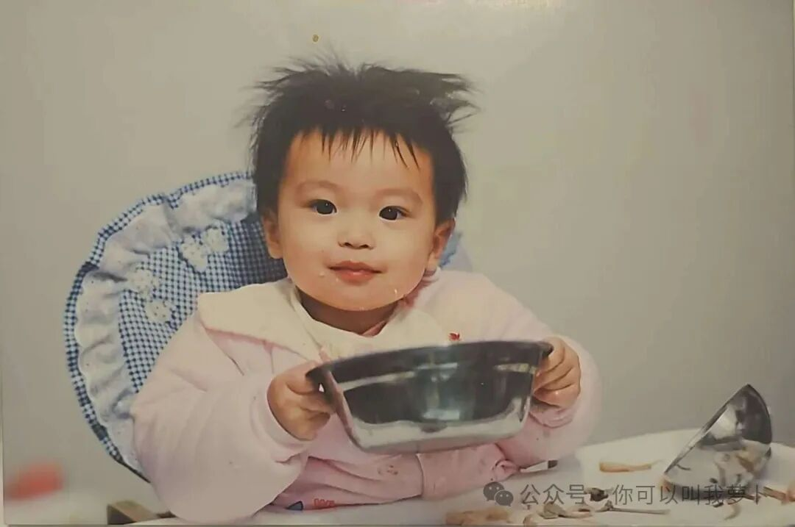这个暑假，我记得我也不止一次地和我妈说，“妈，我觉得我们家的饮食文化挺有意思的。” 母亲却不以为意地笑着说：“啊？咱家哪有什么饮食文化？” 可我觉得有。 我的母亲是山西人，父亲来自广西。俩人在北京相遇，在中山定居。我在中山出生，在中山长大。 所以我们家自成一个菜系。不是山西菜——我们吃米多过吃面；不是广西菜——我根本不清楚啥才算“广西菜”；更不是地道的粤菜——我从小到大最讨厌吃的就是肉饼。因此，我愿称之为：工作忙碌的父母为了省时省力做的菜。 印象中，我的爷爷奶奶只在我读幼儿园和小学期间短暂地带过我一段时间。所以其余的时间，都只有我的妈爸和我三个人吃饭。 听妈妈说，念幼儿园的时候，我爸下班来接我放学，有时会一把把我架到他脖子上。他一米八一的个子，肩膀上放一个小小的我，让路过的人都会多看一眼。然后他就把我放到他北斗星驾驶座的前面，带我去菜市场买菜。还记得那会儿有个卖红薯，还是香蕉？黄皮？还是番茄？的阿姨，父亲每次买这个东西，都会去她那摊买。以至于她都认识我了，但小小的我自然对她没什么印象了。后来我长高了，不再被爸爸抱在怀里了，她就会对矮矮地站在地上，抬头向卖菜摊望着的我说：“哎你还那么小的时候呀，你爸爸就会这样抱着你，把你抱在怀里来买菜呀！” 夏天，水果大批量上市的时候，父亲还会带我去水果摊买水果吃。等上了小学，记得除了一年级是坐校车回妈妈学校之外，其他时间都留在学校等到五点多六点爸妈下班才来接我。那时候就不怎么带我逛市场了，通常都是一个人来接我，一个人去接菜。记忆中父亲也会带着菜来接我，还有在车上就被我迫不及待地吃掉的水果。其中我印象最深的是番荔枝，我也不知道为什么。大概是除了和父亲外，没跟其他任何人吃过那玩意。 然后母亲和父亲会一起在厨房做饭。有时我去帮个小忙，或帮个倒忙，有时坐在厨房的小板凳上听他们聊天，他们也不避着我。 我喜欢剥蒜，是literally用手一片一片地剥。我不喜欢用刀拍。通常不赶时间的话，母亲总让我一瓣儿一瓣儿地剥，从来不催我，任由我剥个够。小时候，还会因为把蒜剥得很干净而骄傲呢。直到现在我自己做饭，眼看锅里都要下蒜了，我宁可把火关了把锅移走，也要一瓣儿一瓣儿地剥蒜。 可小小的厨房里难挤下三个人。时常有人要坐板凳择菜了，板凳不够的话我就得走，要么我就执意说我来择菜。 但那会儿还小，在厨房真帮不上什么忙。因此童年时光中的确有很多时光我都是自己跟自己玩乐。我会在外面写作业吗？我不记得了。但反正据我妈所说，她没见过我在家写作业。那玩的啥呢？也不记得了。 现在回想，打小我心里就没有“男主外，女主内”的思想。虽然偶尔父亲会在阳台上抽烟，对此我很讨厌。但向来没有人和我说过“饭菜都该是女人做的”这种话。如果妈妈不在，父亲也会做好吃的饭菜，只要他没睡过头，他都不会马虎应付。 现在在听到看到那么多“女人应该”的叙事后，我发觉很多时候我的母父都在身体力行着“共同做事”的观念。起码在我小的时候。但哪怕是到小学毕业，那平等合作的思想也足够根深蒂固了。 饭做好了，我就被叫去拿碗筷，有时墨迹拿晚了，也免不了一句唠叨。母父总是要等餐桌上人齐了才动筷，但他们不要求我。我要是先吃了，就会开玩笑地说“偷吃，被我抓到了吧！” 开饭的时间通常比较晚了，大多都至少过了七点。 饭桌上，母父从来不给我夹菜。就像前边那个“喝汤”阿姨说的那样，自己吃饭是从一两岁开始就自然而然的事情。更有一次，奶奶在，家里炒了鸡。奶奶夹了个小鸡腿到我碗里，父亲一筷子把鸡腿夹回了盘子里。“不用给她夹，鸡腿是大家的。” 父亲如此平静地说。后来有次在语言课上，把这个故事讲给老师同学听，大家都觉得又吃惊又好笑。 母亲说她有那么几个瞬间怀疑过她从不给我夹菜这件事，是在和幼儿园同学出去亲子活动的时候。她看到别的母父都在夹菜、喂饭，就她不喂，自顾自地吃。她说，当她环顾一圈忙碌的妈爸再看到悠闲的自己时，她也想过她是不是个不够格的妈妈呀。但她是没有改的，照样自个儿吃自个儿的。但她是很够格的。 因此，我养成了个习惯：夹自己爱吃的，不夹自己不吃的。这句话听上去如此的理所当然甚至有些silly，但在我后来的人生中，屡次听到有人评价我说“她知道自己想要什么”时，我总觉得这是在每一餐的饭桌上就慢慢形成了的。我对我想要的东西我从来不“客气”，当然，该怎么做的礼节还是很清楚的。我也会直接地拒绝我不要的，当然，语气不会太强硬的。因为从小就没人帮我“想吃这个”，也没人逼我吃我不想吃的。他们总说，“吃不完就不吃了”，“吃饱了就行”，或者“不想吃就放那儿，没事儿“。吃饭是从来没有负担的。 以至于后来长大了，被领出去跟别的叔叔阿姨吃饭，这我当然不会先动筷，甚至要跟一些好心照顾小孩的长者无限推拉，总要等最年长的人吃了，我才能安心下筷。但我照样拒绝我不爱吃的。最大的改变呢，就是从“噢不用，我不用”变成“噢谢谢，我不用。”而且我说不吃，是真不吃，母父知道这一点，也会帮着我说“让她自己夹就好了，不用客气的，她在家都是自己夹的”。但如果真有人执意给我我拗不过，只能是趁人不注意夹到旁边母父的碗里了。他们也不说我。 我也不争。夹自己爱吃的，不爱吃的就不夹，想吃的被别人夹走了就算了。因为我肯定能让自己吃好。当然，这件事好像本就理所应当。 我记忆中唯一的一次父亲“管”了我吃什么，是在家里母亲做了叉烧。具体是母亲还是奶奶，有些记不得了，姑且就算是母亲吧。叉烧也不是她亲手做的，是从烧味店买回来，她放锅里热了下，或说炒了一下吧。然后我就不爱吃了。其实也不是不爱吃，只是觉得炒了的就跟外面烧味店卖的味道不一样了。我先前就总是跟他们说，让他们不要二次加工了。可我觉得他们压根没听，又下锅炒了。于是在心里暗自赌气，那天晚上在餐桌上，我一筷子叉烧也没有夹。过程中也没有人说什么，像往常一样的没人给我夹菜，也没人劝我吃着这个吃那个。直到大家都吃完了，父亲起身准备离开前朝我吼了一句：“你妈做的叉烧，你就一口也不吃是吧！”然后转身走了。 留我一人在餐桌上，委屈的眼泪瞬时在眼眶里打转。只好趁着母父都在厨房里没人看见时，我悄悄夹了一筷子塞进嘴里。竟是出奇得好吃。气消了，肉也吃上了。那会儿想必也不是管我吃什么，而是怕伤了母亲的心吧。 有些妈爸喜欢让小孩子比赛谁最先吃完一碗饭，为的是让小孩不要光吃菜，或者怕小孩玩开了就不吃了吧。我从不参加这样的比赛。当然，我本就爱吃饭多过爱玩。 母父更不催我吃，因为父亲就是名副其实的吃饭慢手。我跟他比，俩人是互相有过之而无不及。因为我们爱说话。广东人喜欢用汤送饭，在我家则是用话，用故事，用八卦，用道理，用玩笑......往往一口饭，要用好几句话去送才能咽得下去。因此，我们家吃饭，花上一到两个小时，是再正常不过的了。 我从小就听了很多“成人世界”的故事。我也讲很多属于“小孩世界”的故事。那时候没有手机，我们也不看电视。就着故事下饭，从天边余晖，吃到黑夜笼罩，好像是童年里一件很美好的事。只不过妈妈总说“哎呀，下次吃饭得快点，不能再像这样一聊聊个俩小时，把睡觉都拖晚了。” 但依旧没有一次不是吃过了八点。 吃饭慢的习惯很难改。在学校吃食堂，我总是吃到最后几分钟才匆忙收盘子走人。小时候去隔壁邻居家蹭饭，我也总是一个人吃到最后，大家都吃完饭去各干各的了，叔叔阿姨也不管我，我也不觉得尴尬，就是吃。直到我来了加拿大住住家，这个习惯才在突然之间被迫改变了。我大概是太不习惯也太不喜欢和住家一起吃饭的环境了，所以食欲全无，食量大减，速度暴增。经常是我吃完了，在餐桌上等他们。但回了国内，又瞬间慢了下来。于是我得出个结论：我的吃饭速度与食物的美味程度成反比。 吃饭慢，还有一个结果，就是能吃很多，能不停地吃。大概是因为先前吃下去的都消化处理得差不多了吧，所以从来不觉得撑。还是今年暑假回国，在另一个朋友聚会上，有个鲍汁豆腐上得晚，大家都差不多不动筷了，就是聊天。我夹来吃，边吃边听他们聊。吃完碗里的了，父亲问我：“吃饱了吗？”我点点头。然后他们又接着聊，我于是又默不作声地夹了块豆腐开吃。吃完了，父亲也不催，只是又问：“吃饱了吗？”我点点头。他们还在聊，于是我又夹了餐桌上最后一块豆腐，吃完了。父亲：“吃饱了吗？”我：“嗯，吃饱了。”“真吃饱了？”“嗯。”我点点头。饱是饱了，但如果那时候你端给我一个什么辣炒花甲之类的我爱吃的菜，那我可就又要开吃了。只是桌上已没有能吃的东西了。 我吃得多，母父也从不拦着我吃。任何时候我说想吃什么，条件允许的话（指不是太晚或太偏远），都带我去吃。 “哎呀，想吃东西了。” “晚饭没吃饱啊？” “吃饱了，但就是想吃。” “那走嘛。” 以至于有一次我和朋友在深圳玩，为了能多待一会儿，我就跟母亲说我饿了，要跟朋友去吃东西。因为我知道，其他事不一定同意，但要吃东西是肯定同意的。 有一次我半开玩笑地和妈说，“妈，我觉得我们家的饮食文化就是一天二十四小时，无论什么时候我说想吃东西，你都给我吃。” 还好，我不爱吃多贵的山珍海味，三文鱼刺身之类的我也不爱，就爱吃大排档里辣炒花甲一类的家常菜。不然，怕是不敢任由我这样吃了。幸运地，一些很简单的美食就能让我感到很幸福。 上了初中就很少在家吃晚饭了。关于初中的记忆在我脑海中有些支离破碎。这有很多个原因。但记得我和母亲两个人生活的时候，我周末从学校回来，哪怕就一顿饭，时间还很赶，她也总是做一荤一素一汤。有时饭做好了，都吃不上两口就又要返校了。那时候回家，胃口也不像以前大了。但或许正是因为回家时间少，所以才尤其珍重吧。 母亲有个能力，就是她复刻不出别人菜谱上的菜，但她总能用冰箱里已有的食材做出一餐很不错的菜。她时常叫我点菜，想学着别的妈妈一样为我变着法子地做好吃的。我点过糖醋排骨，和可乐鸡翅，后来也不再点了。一是因为她真的很忙，我知道要求她变着花样做菜自然是不可能；二来她总是把糖醋排骨做成炖大骨，把可乐鸡翅做成红烧鸡翅——她怎么也割舍不下她的香辛八角料。所以我就不再点了。要是真想吃某一道菜，我就自己下厨，我就坚决不放香辛料，只放糖和醋，一做，就吃到自己想吃的那种只有糖醋味的糖醋排骨了。我终究是个南方胃。若是做不出来，也就谁也不怪了。 不过，不是因为不好吃才学会自己做饭的，妈妈烧的菜向来很美味。是因为忙，因为他俩都忙。小时候的我不仅学会了和自己玩，也学会了继承妈妈的才能，用冰箱里已有的食材，给自己做出一餐还不错的饭。同样的，我也不能复刻别人的菜谱，大概因为翻车也被刻进血脉传承了下去。 我很享受给自己做饭的时光。我甚至发现，我不仅在照谱烧菜这件事上屡试屡败，我给别人做饭也只能做到差强人意。但我只给自己做的时候，往往能做出令人惊喜的美味。 我试过花差不多三个小时给自己做一份花甲粉当晚餐。我没菜谱，先前也没有做过。花甲，米粉和小青桔都是下午临时起意去买的，甚至买回来才知道，花甲吐沙要一个小时。但兴致也丝毫未减。我就记得，当时我分了干湿两个料碟，前后间隔了一段时间才分别下的。最后放小青桔和柠檬。各种食材和调料搞了厨房乱七八糟一大片，还要尽可能地在煮粉的间隙边做边收。还水煮了一份大白菜。吃进粉的第一口，简直了。粉的糯，花甲的鲜，调味的辣，酸，咸，香中和得恰到好处，最后是青桔的清新在唇齿间弹跳。太好吃了。我留了几口，等母亲回来吃。忘了她是去值晚修还是干嘛了。母亲尝了，也直呼美味，惊叹不已。
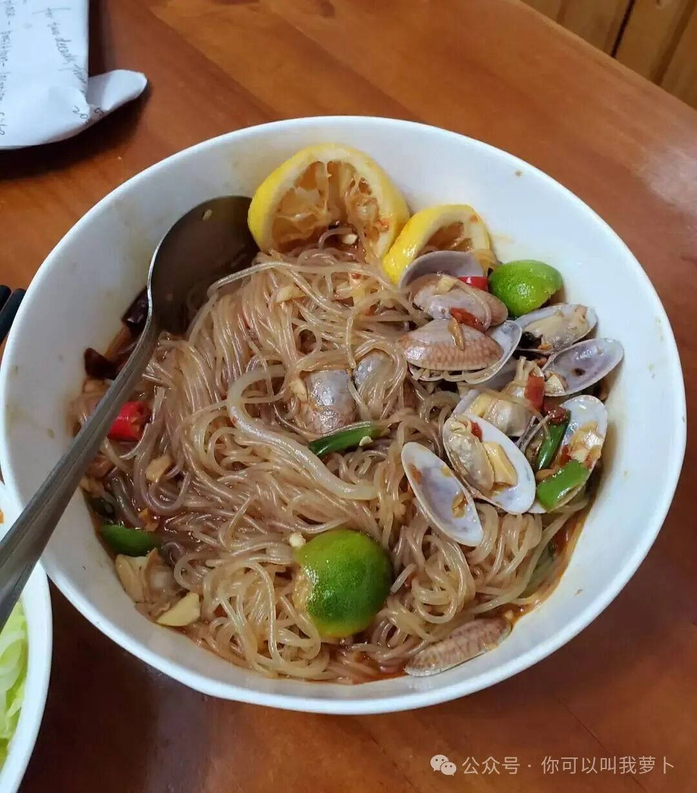可惜那样的花甲粉是再也做不出来了。曾经试过请同学到家里来吃，觉得不复刻一下实在是太可惜了。同样的干湿分碟、青柠点睛。可哪怕就是那次做，味道也差得远了。 大概是没有了那样轻松、纯粹和享受的心境，就再也做不出来了。 后来的我，就习惯了这种美味只一次的体验。吃过了，享受了，就好了。我再没有遗憾过，只有对下一次惊喜的满心期待。 我也不再急于做给别人吃了。没有期待还好，越是隆重我反而越容易失手。或许因为我师承的是“工作忙碌的母父省时高效做菜”的派系，因此我修来的，是在无论多繁忙疲倦的生活中，也能让自己吃好的功力。当然，我说”为了省时高效”，不意味着简单粗糙，反倒是用有限的时间，创造无限的美味，还能营养搭配。这其中定然有母亲的大智慧。 我记得有一次，还是小学生的我在课外班上被逼问将来长大想做什么。我实在是想不出来，最终只好无奈写下：“厨师”。我想，大概是因为我享受在厨房做饭的过程。于我而言，那是纯粹的创造。创造不意味着无边无际、任性发挥，而是在给定材料和限定时间的情况下，琢磨出我今天最想吃的菜。我把在餐桌上拥有的绝对选择权，也运用到厨房里。 因此，当别人问起我的“理想型”或者认为合格的伴侣的特征时，其中一条总会是：ta会做饭。不是因为我不会做所以要他做，也不是因为我会做但我不想做，而是会做饭成了我认为人的立身之本之一。这里面体现的是对自己的负责，和对生活的认真。还有处理各种琐碎事情的小巧思。 你说我们家的饮食文化是什么，或许我也给不了答案。我爱鱼香肉丝爱得痴狂，也对早茶腊味魂牵梦绕。我不喜欢把什么都放到一起炖得黏糊糊的，也不喜欢肉饼梅菜榄角汤泡饭......东西南北，都有我爱吃的，也有被我拒之门外的。或许一家人的饮食文化，只有在一盘妈妈做的独一无二的番茄炒蛋里能被尝出些味道了。在家吃了十几年饭，肉没长几斤，消化掉的是觉得只要饭吃好，就一切都挺好的生活态度。
一百件我想感恩的小事
感恩早晨的煎蛋
哪怕是用昨晚做剩的“地沟油”做的
感恩太阳在落下前的几十分钟
用最灿烂多彩的笑脸和我说再见
哪怕只在街区楼宇的缝隙之间
感恩太阳信守它的承诺
每天都带着家人朋友的祝福
与我再见
那是北太平洋暖流来的方向
家是它的起点
我的终点
这一路的风景
我总在云上寻找
感恩海
用有限的宽度反射最广博的颜色
感恩秋天
是丰收的季节
让我早已品尝到比sweet globe更甜美的果实
动人的
流动的
爱
在厨房间
我感恩samosas
感恩韩式泡菜饼
感恩french toast
感恩cinnamon buns
感恩burritos
apple muffins
breakfast sandwiches
和杂粮包
一双双巧手
是Annie, Betty, 和Annie的
最甜的花束
是菜
最美的花束
是Frances送的
永生的花束
是Sam亲手折的
我感恩一切朝我敞开的
生命
我感恩戏剧
感恩剧场
感恩艺术
以最顽强的姿态存在
我感恩遇见，真实的
一年一度的
虚拟的，字里行间的
我从未预见的
遇见
我感恩文学
和书中飞出的一只蝴蝶
在教室，在海边
在喝抹茶拿铁的手边
哦对！
我可要感恩抹茶拿铁
和从日本带回关照的
我的朋友
说起朋友
便要感恩不只一位朋友
感恩他送我的一中熊马华农
感恩她送我的轻松熊小包和抹茶布丁
感恩她用美团跑腿送我的钥匙扣
是来自新加坡的
感恩他们送的新手机壳
是我最喜欢的颜色
感恩他送我的Rain
柔软的
能被塞进从成都回中山的行李
和飞往加拿大的背囊
感恩他收留我的夜晚
感恩“你值得被好好对待的”
她这样对我说
感恩时间或许本就不曾存在
使“永远”变得不再客观
而是爱
让我们想信
此刻得已永恒
我感恩彩虹
如此任性地，转瞬即逝的
却依然愿意在我手心停留
哪怕只一瞬
也是爱曾来过的证明
我感恩语言
和表达
和一颗平等的心
我感恩故事
即使泛黄的纸页已载不动字迹
过去，现在，和未来都被记在了心里
我感恩吹弹可破的皮肤
清澈明亮的眼
和乌黑的中短发
组成那样一个可爱的孩子
会时不时地来敲我的门
我感恩好似孩子才有的坚定
如太阳般
践行着她的诺言
我感恩坦诚
将他带回我的身边
我的朋友
一个简单而快乐的人
使我不愿用芥蒂的眼光看他
我感恩风
尽管有些凛冽
她吹走我眼中的沙
抚摸我的发丝
和偶感寂寞的心
我感恩雨
升高半度气温
带来忧郁的借口
我感恩大自然的一切
打湿我的脚丫
侵入我的肌肤
慷慨地，勤劳地
在我心里种下一颗感恩的种子
却从不喧嚣
我感恩鸟
让我的自由有了对照
让更远的路途有了领航
我感恩树
作我的依靠
我感恩火焰
和牛奶，和培根，和炒饭
还有燃气，电气，和抽油烟机
我感恩红茶，滤网，dish soap
和黄色的碗
我感恩纸巾，牙线
用脚踩亮的台灯
和扫帚，垃圾铲
我感恩hand cream
冰箱，保鲜膜
和粗把儿的史努比杯子
让我的生活有迹可循
我感恩创作
用她最宽广的胸怀拥抱我
我感恩夜
安放我的烦与恼
我感恩月经
准时来到
我感恩排泄
让我健康
我感恩一颗更平和的心
和一个更chill的脑
让我的诗
不再有押韵的必要
我感恩影子
在硕大的天地间
为我cast一隅能写字的角落
我感恩我的母亲
从始至终地
做光明的使者
和一个可爱的人
我感恩九月
感恩十月
感恩星象
和季节的变迁
为人类带来
红色的枫叶
在热闹，在骄傲，在声张
停下脚步的力量
我感恩诗
我的海洋诗歌协会
我感恩书信
或许那不是远路，而是捷径
at Cadboro-Gyro Park
写这首诗是因为昨天朋友发来一个游戏：
于是我们昨天玩了这个游戏。我说不如玩完真的写成诗呢！朋友说好，写个十四行诗！我说不要，我要freestyle。于是今天我本来打算自己去海边写作，但突然想到曾经我在xhs改编过的死亡诗社，我想，叫上朋友，在海边搞一个我自己的海洋诗社，是一件很不错的事。于是跟郭阿姨借了自行车，和朋友踏上了我在维多利亚的第一次单车旅行！ 在海边，我问：“游戏规则是什么？”朋友说，那就至少要用到三组昨天写的问答对话吧。 我说好。不过我们是可以随意修改，编排，删，与增的。今天是太平洋夏令时时间2025年10月13号——感恩节，于是便有了以上这一首小诗。 至于我到底用了几组随机的对话，我也没有数了。:)
前两篇正文由于尽可能严格地按照时间顺序去写，导致一些我很想记录下的小瞬间和内心的想法找不到好的地方插入，遂又起一篇，按照它们蹦到我脑子里的顺序写。 1 7月27号，我和思源和周老师一起吃饭。是我小学初中时学语言艺术的老师和同班同学。现在却已变成了一年一会的好友。在万象汇自然壹品椰子鸡门口，思源见了我，我俩很兴奋地拥抱了彼此。没多寒暄几句，思源就突然和我说，说觉得我是像树一样的。她在朋友圈看到了我演出的讯息，说特别为我骄傲，但可惜她高三那个周末已经要返校开学了。 什么？！像树一样的？！究竟是做像鸟还是像树一样的人是我很久以前就想过的问题。最终还是觉得以我现在的性格和经历来看，或许我这一生注定是要做鸟的。于是“树”变成了我一直所敬仰的一种形象。 只是出乎我意料的，竟然思源会说，觉得我是像一棵树一样的人。所以，原来我生出的一点歪歪扭扭的枝桠已经够拥抱身边的一些人了吗。 我自己不确信，但听到她这么说我很是感动。 我刨根问底地问她这么早回学校去做什么，能不能请假来看演出，是不是有开学考什么的。她就一五一十地说是学校有开学典礼之类的活动，叫她回去做志愿者帮忙。我说那不是可以请假一下的嘛！结果这个思源，一点也藏不住秘密地，跟我说其实她早就请好假要来看演出了，只是本来不想告诉我，想在现场给我惊喜。 哎呀！这个思源实在是太可爱了。 2 在我发出找中山及珠三角周边场地的小红书帖子后，有一位在广州的朋友联系了我，我后来称呼她为塔人。 她在小红书上发给了我一个广州海珠区的做现场音乐的场地，她说看我帖子的需求感觉那里挺适合的。 她说，“这种活动是要支持的” “人多力量大” 后来加了微信，她有一天又主动问我，场地找的怎么样。 那会儿我还没找到万谷，于是她又帮我联系了一位在广州做各种艺术展活动的邓馆长，把他的场地介绍给我。邓馆长人也很好，虽然最后没有合作，但交流起来很愉快。我也向他们发出了观演邀请。当时在群聊里邓馆长问我要我的往期演出资料，我只好发了我的b站主页，因为我近期的有记录的演出基本都上传到b站了。 IDC演出完我主动联系塔人，跟她说演出非常顺利，非常感谢前期她帮我找场地，我很感动。塔人却说她看了我在b站发的视频，很喜欢我的表演。 我惊喜不已，没想到当时在群里不说话的她悄悄光顾了我简陋的b站空间，还如此用心地看了我的作品。 塔人，谢谢你，希望有一天能在剧场见到你和邓馆长。 3 好像前两篇正文中，都是提到父亲更多。但其实，我说过很多次，我能做成这个演出百分之九十九都是我妈的功劳。听上去有些夸张。自然，事情都是我一手完成的，但如果没有母亲，这件事是不可能成的。 历代鱼刺的剧本和一开始心弦的剧本，每次写完都会发给母亲看的。母亲是总给我正反馈的人。 她也会提意见。专业上的呢，我自己会选择采纳还是不采纳，这没什么。但我总是需要一个人跟我对话。母亲不像我那么“没脑门”，但她总是信我的呀！我这人又是职业的演员，忽悠我妈这事总是能办成的。所以每次我说行，她就觉得我行。然后我就没失败了。 母亲说在我小的时候，她不是那种总担心我摔跤，总要扶着我护着我的人。她觉得我摔了就摔了嘛。摔了顶多就是就哭，那就哭嘛。因此母亲在我成长过程中扮演的角色大概是，有她在我就不怕摔跤。也正是因为我不怕摔跤，所以我能头也不回地向前跑。 4 演戏是根本不觉得累和苦的，只有纯粹的快乐和享受、最高能量的投入和精益求精的做事。 但整个IDC演出的筹划期间，最令我难过的瞬间，就是每次母亲车我去排练室然后我下车跟母亲说再见的瞬间。 明明回国就两个月，可是我却天天泡在排练厅，那段时间一天都跟她说不上几句话。有时还因为心里事情太多而对她态度很差。我有时会想，专门飞回来一趟，不应该多和母亲待一会儿吗。 合上车门的那一刻，我好像有些明白了网上那些因为“事业”而错过了“爱情”的体验。 我太专注地看着前方，以至于身侧一直陪伴着我的人都被放进了余光。我朝着远处的理想跑得越快，好像就离近处的家离得越远。 我想，或许这就是长大吧。我们终有自己的事情要做。 5 8月2号第一天的首场演出结束后，我坐在舞台边，在别人对谈的间隙朝站在人群后的肖梁对了个口型：“点晚饭”。原词是啥我记不得了，但我就记得，她不仅一下就对上了我寻求她帮助的目光，还瞬间读懂了我的口型，比了个“ok”就帮我把饭点好了。我演后谈结束，就已经有热腾腾的饭在等着我了。 团队之间默契到这个程度，应该没什么事是办不成的吧。。 6 关于和观众们的大合照，除了看到大家一张张可爱的脸倍感温暖之外，最喜欢的就是看到我们IDC的三位crew people在人群后面站着举起手与我互动。哎真是太可爱了。好像虽然我们是剧场里最远的距离，我们之间隔了一整个观众席，但我们彼此之间都有连接。 7 应该是在定姝途出宣发的那天晚上，我和烯橦在coco city的星巴克坐下。我顺手就把我的帆布袋放到了地上。 随即感受到烯橦一个看向我的目光，我转头看她，又看了看地上的帆布袋。 烯橦：“这是掉地上了还是你放地上的？” 我：“我放地上的。你觉得脏是吧？” 烯橦：：“你不要放地上啊......" 不用她说我都知道她想说什么。那一刻完全就是姝途里的姐妹照进现实啊！！ 8 3号下午场，烯橦妈妈和她的家人亲戚来看了演出。 演出结束，阿姨找到我，为我献花的同时和我说，“我是烯橦妈妈，你很好。你真的很好。” 几句简单的言语已经足够。我想说，烯橦也很好，也谢谢阿姨把烯橦养大，不然我也不会遇到她了。阿姨也很好，我们演出的窗帘布还是阿姨提供的呢。后来听烯橦说，阿姨更喜欢《鱼刺》，因为《姝途同归》她在家里天天看。哈哈哈哈。这何尝不能证明我们演得很真实呢。哈哈哈哈。 9 3号午场结束我在后台休息前在群里留了言说我眯一会儿。都已经关了灯，但因为突发的身体不适，我起身想出门去找母亲。 我轻轻拉开后台化妆间的门，看到肖梁、臻童、翊桐三个人本来在聊着天，我听不到她们在聊什么。结果她们马上发现我把门拉开了一条缝，有些惊讶，看着我，说话的声音又更小了一点。 她们说，是我们讲话把你吵醒了吗。 那一刻，我的团队不需要我为了她们to be present，to be prepared，去提供情绪价值，去解决问题，她们也不担心是不是有什么问题，她们只想我好好睡觉。 10 由于姝途里姐姐的“电脑多脏啊”这句话已经深入我脑髓，以至于我现在看见我的手提电脑有时脑子里就会自动播放烯橦的声音，尤其是当我的电脑出现在我的床上的时候......有一次我甚至真的觉得好像有点不太对，绕回床边试图把它挪开...... 11 在正文下篇中我说，我也是这个演出的受益者。是的，IDC好像成了我的姐姐，哪怕只是在那段时间里出现在了我的生命里，我也能清晰感受到她在我身体里留下的力量，和潜移默化中对我产生的改变。 9月初我再次回到加拿大，遇到了一个刚来加拿大的女孩。她年纪小我不少，看上去非常紧张不安。她借宿在我们这间房子里，但她什么也不会做，还总是不说话，让大家百般照顾。 开学第一天，去领完资料中午就回家了。老师家长安排我跟她那天一起上下学。本来不想问的，但那天早上吃早晨的时候她一个字也没说，但去到学校又好了。我不想房主阿姨总担心她，就问她到底是为什么。话于是说开了，我就跟她说，你不是怕麻烦阿姨叔叔吗，那就应该自己主动把自己的事情做好，吃完饭要收碗筷，洗完澡擦干浴室、出去买东西帮忙提袋子、更不要什么事都要阿姨三催四请还一直闭口不言了......下了公车走在回家的路上，快到家门口了，我说待会儿回到去，主动跟阿姨说第一天在学校怎么样，不要再让阿姨一个劲儿地问了。那天她回家一进家门，就热情地跟阿姨打招呼，分享第一天在学校的见闻。 我那一路上说了好多“姐姐说的话”。从小到大都跟比我大些的孩子玩的我，也有那么一瞬间觉得，我好像个“姐姐”。可我自然不会平白无故地变成个“姐姐”，我觉得我是在模仿着一个“姐姐”的样子。我虽然是个独生子女，也从来不觉得那些比我大的朋友是哥哥姐姐。但我现在感觉“姐姐”的模样好像在我生命中出现过了，哪怕就是短暂的几个瞬间。 12 我们的财神臻童竟然在理财的同时还帮剧组出了神图：
 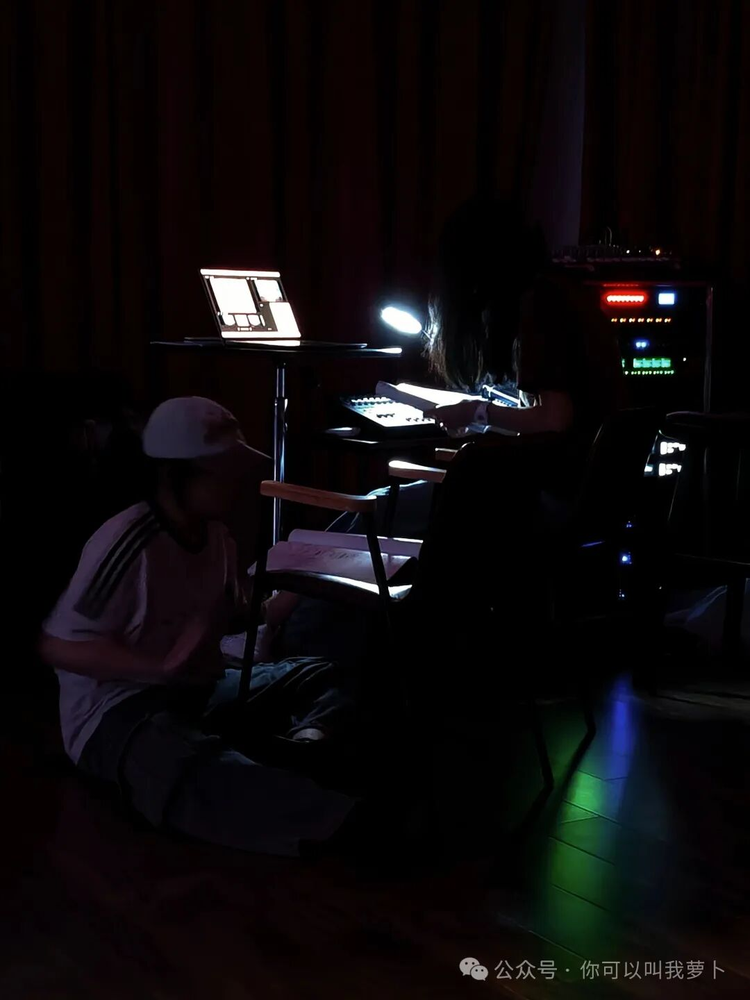
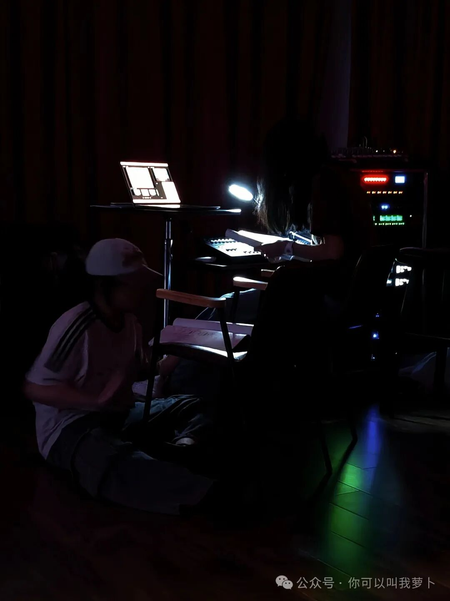
 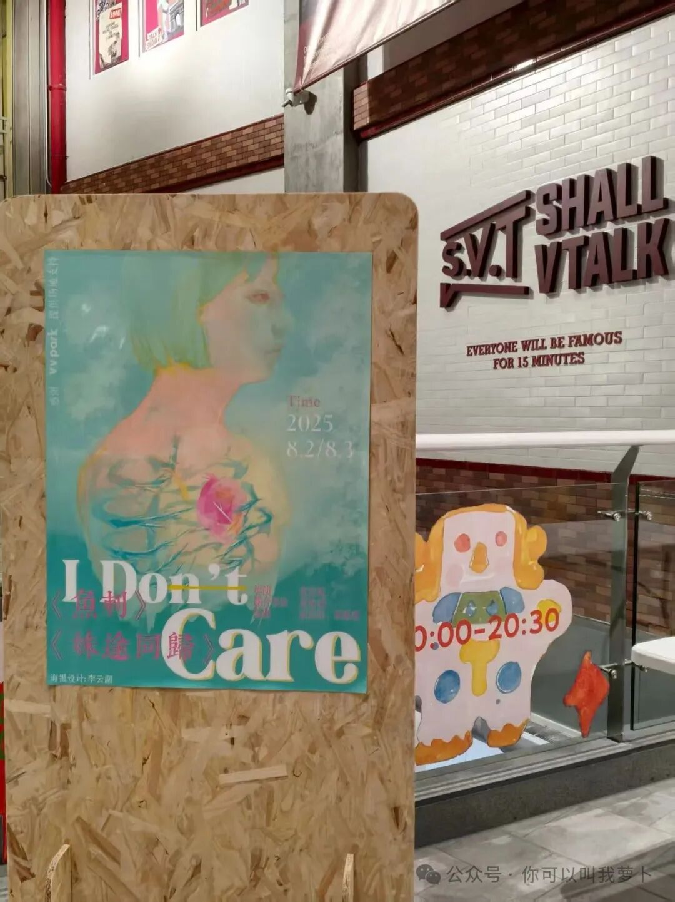
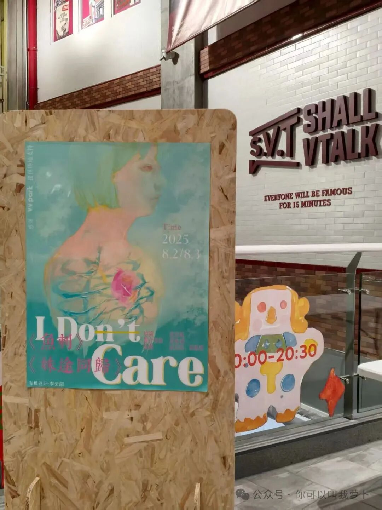
你说她不仅有这拍的觉悟，她还会构图，还能出片。右上的肖梁和翊桐实在是太酷了。 13 好像提臻童和肖梁比较多？但其实翊桐可以说是承担了团队里最状况百出的职位。而她还时刻保持淡定，情绪稳定。 总控台播音乐的蓝牙总是连不上、投影屏拓展了之后鼠标又找不见了......但翊桐把每一项都很好地完成了。有时可能觉得她有点“淡淡的”，但同为水瓶座我能理解她的这种“淡淡的”，甚至于说我喜欢她这种淡淡的，我也需要她的这种淡定。因为如果团队里所有人都跟我一样脑子还没动脸上表情就已经先react了的话，可未必是件好事。 14 IDC五人刚被拉到全体演职群的时候，还一直保持着我发信息，然后她们三个非常官方地回复我“ok”的状态。周五见面第一天彼此之间也略显拘谨。 但后来，我发现她们彼此之间都单独加了微信好友，还会经常在各自的朋友圈底下留言点赞。 我好开心。因为本身就演出工作而言是不需要她们私下加好友才能完成的。我很开心我的团队大家都变成了朋友而非仅仅是同事。 15 由于这个健忘的凌若瑶忘记在庆功宴带喝的，于是提前一个月定好29号晚上酒配烧烤。 结果碰巧当天是七夕节，吃着烧烤时翊桐被一个男生微信表白了。我们帮翊桐想着怎么回复他时，翊桐：“哎都是哥们...”，边说边握拳拍了拍胸脯然后伸手指。然后我发出一阵爆笑。。我不行了，姝途怎么还能这样照进现实。。。（此梗IDC剧组自然会懂） 16 见面第一天试戏结束后在coco city吃师烤烤鱼的时候我问烯橦是什么星座。烯橦让我猜，我说那我问问题然后你回答是或不是好不好。 我最终剩下白羊，天秤，和射手三个。烯橦让我在之后的相处里再慢慢观察，不着急。 第二天到排练室，我还是有些着急地想交答案了。我说，所以你是天秤吗....?摇了摇头。 啊——极限二选一。“那我觉得你是......白羊。？” 不是。 “所以你是射手啊？！” 好吧，凌若瑶在蒙答案这件事情上从来没走运过。 17 还有641也是高三生，专门请假离校来看我的演出。55感动。那天我专门带了宝丽来，因为我们约好了交换拍立得：
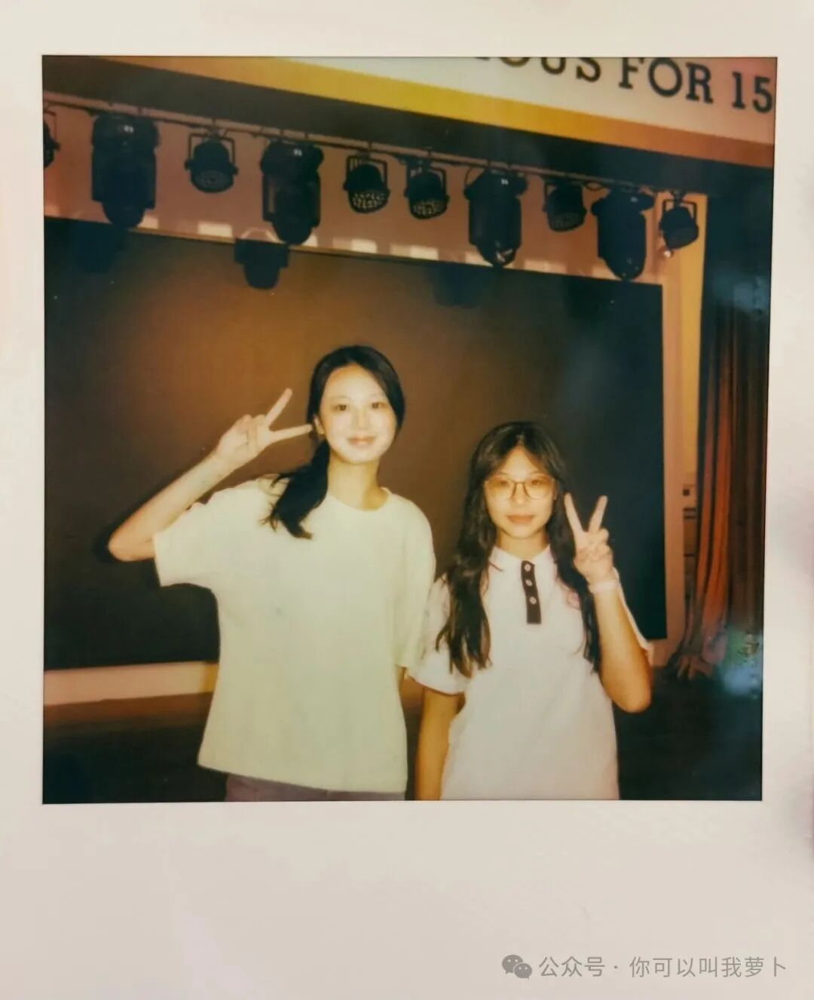18 演出优惠票39.9，普通票69.9，四场总共来了大约195人次。总票房10162元。刨去所有成本后剩余2095.25元，我代表剧组以IDC全体演职的名义通过知晓妈妈的帮助将款项分享给了神湾镇的两个有需家庭。这是整个剧组在一开始就愿意做的事。 19 这次演出的成本里场租去了4500，打印海报和所有物料花了近800块，买道具400左右，剩余的基本上就是各种杂碎和成员的吃喝通勤。甚至把在自然壹品的庆功宴也算进去了。 这点我很满意。因为我一直对我的组员说，尽管吃你想吃的，想喝奶茶喝咖啡就点，最后所有的支出我都会返还cover。吃饭可是件大事，在伙食的budget上我丝毫没有省，甚至其实根本没有budget。希望大家那三天都有吃好。 20 7月24号我和谢谢去假日hang out的时候她就送了我一个chiikawa的盲盒。我拆开是小八。 当时还在写三菜，后面写姝途的时候我完全忘了这事，但就是写到了小八，后来才发现，剧本里的元素又在现实中出现了。或者说，其实早都是命中注定（？） 我原先完全无感chiikawa的，但现在写东西一定要放个小八在我电脑旁边监工我。（像码农电脑旁边的鸭子？hh
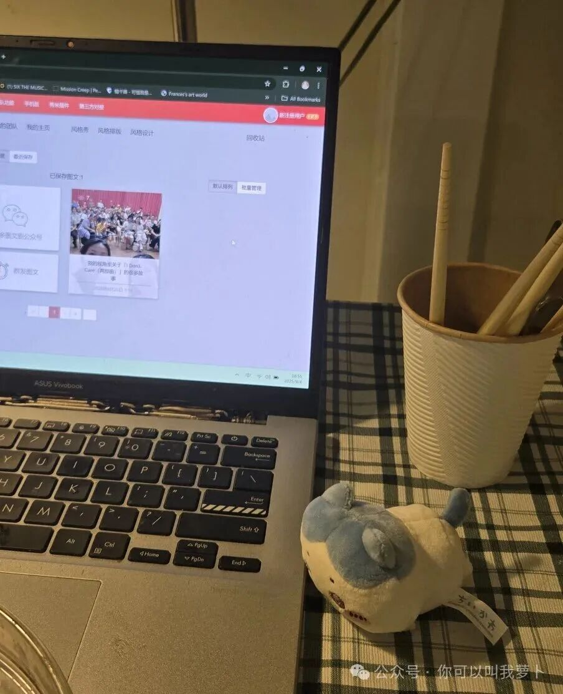21 还记得不止一次有观众问我，为这个演出准备了多久。当然活儿是在几个月之内干完的，但我说我从差不多五岁开始接触表演开始登台演出，到现在已经十三年了。所以也可以说，我为这个演出准备了十三年。毕竟没有过去的任何一天，我都不会能够今天站在这里。当你种下一个因的时候不会想象得到能结出的果，但当你看到一颗果实的时候，耕耘的日日夜夜都变得历历在目。 22 3号下午场开演前在百般混乱之中也要叫所有人到化妆间一起加个油，因为发现我前一天完全没想起来这事，但觉得一点仪式感还是要有的。
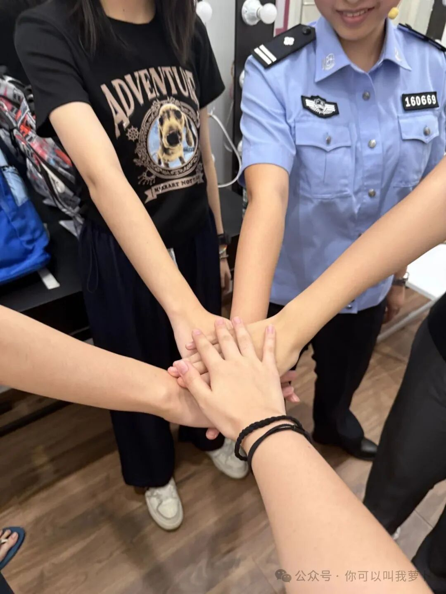你说为啥要有团队呢。因为凌若瑶只记得让大家把手叠在一起喊加油，但肖梁就会掏出手机把五个叠在一起的手拍下来。（还有张美的爆大人字拖与大脚趾，和祁警官的邪魅一笑）:) 23 8月7号我收到了3号午场的一位观众写的repo。她先加到了烯橦微信然后又通过烯橦加到我，结果最后把repo发到我邮箱了。挺好，凌若瑶专门在场刊背后留的邮箱也算不是无人问津了。 我很开心收到她的repo，也很喜欢她的一些表达。 她说“我给《鱼刺》标记的关键词是愤怒、温暖、不堪”，她说“小美想到第一次吃巧克力是她给的，她还觉得巧克力是苦的，自己说她骗人，巧克力是甜的，齁甜的。就在这几个场面里有一瞬间，我的左眼砸吧一下流了一滴泪，是咸的。”；然后她形容祁燕是“温暖且有人性的”，这个描述我特别喜欢。后来和另一个朋友散步回家的时候聊天聊起，他也很认同对祁燕的这个评价。她还写到说这两个戏“就像所有伤口都在女性手中重生成线，缝出了新的生命图景。” 谢谢你，小萁。我想我一定也是感受到了女性群体中的这份力量，因而投入到鱼刺和姝途的创作中去。谢谢你将我也感同身受的一种感觉用文字描述了出来。万分荣幸能让你喜欢你人生中的第一场话剧。期待在日后的剧场里再次见到你。 24 有一天我收到了黄女士的信息，说她约好了大约20位爱看话剧的朋友一起来，希望她们能一起统一买票然后能提前来我这里拿票根。但当时我们的票根还没设计出来。百忙之中的我多选合并转发了黄女士的信息到海报设计群，然后都没空跟云翮多解释，云翮直接get到然后开始设计票根。ohhhhhh。爽！ 25 我们收到了九捧盛开的鲜花，还有几支精致的玫瑰。每个人将花束递给我时的笑容，都比鲜花热烈得多。我终于不用像之前在加拿大的时候那样在人声鼎沸的时刻用一个自我安慰的微笑去覆盖掉羡慕的情绪了。谢谢每一位有心的朋友。
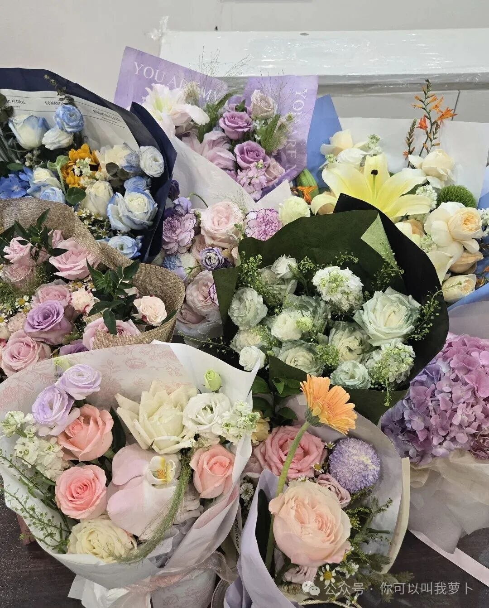26 有些遗憾的，由于我经验不足加上时间紧迫，我们这次的演出没有官摄的剧照，和观众之间的互动与反馈交流也做的不够好。 因为排练时间不够，我们没有一次完整的大联排，所以没能够有成熟的条件去给摄影师大拍特拍。后来使用相机录像，却发现电量不足以录完全程。 在这方面比我更专业的烯橦建议我们也应该像别的演出团队一样与每一场后的观众建群并建立反馈问卷，这样可以和愿意进群的观众分享我们的大合照，还有他们手上有的照片、和一切心得体会，包括批评建议。 我们知道万谷那个剧场位置很不好找，但已没有时间和精力再去做指引牌了。在剧场门口的宣传也不到位，可能因此失掉了一些路过现场的朋友。 我自己的台词和表演也还有很大的进步空间。凌若瑶请你现在开始每天早起练声你觉得好吗？ 27 演出结束后，有一天我在小红书收到一位来自湖北的剧场manager的私信问我愿不愿意和他们剧场合作。well，湖北太远，这个暑期也没有时间了。感谢同行的认可。 但我希望这是一个先来的征兆，我希望这个故事未完待续。
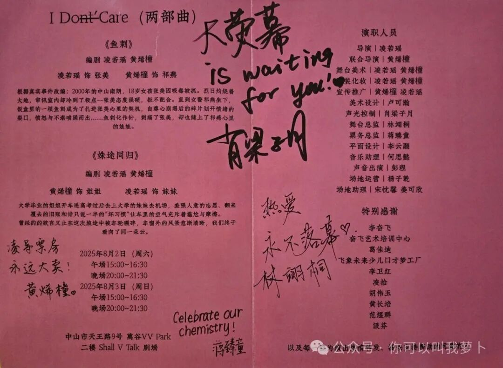 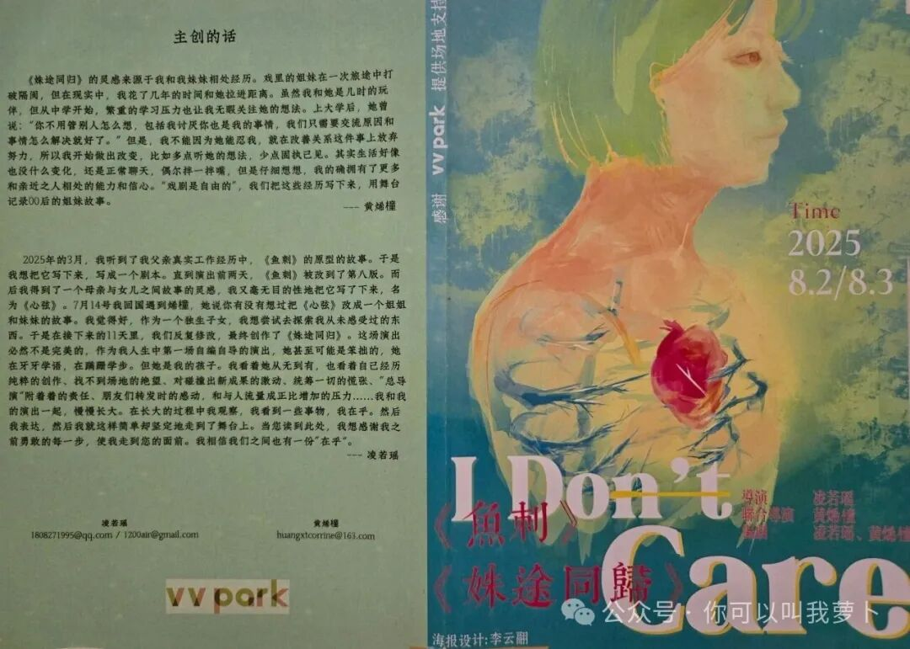8月2号 早上的彩排结束后在后台和烯橦和臻童边聊天边吃了海南鸡饭（上庄），然后眯40分钟，起来就是下午的首场演出了。
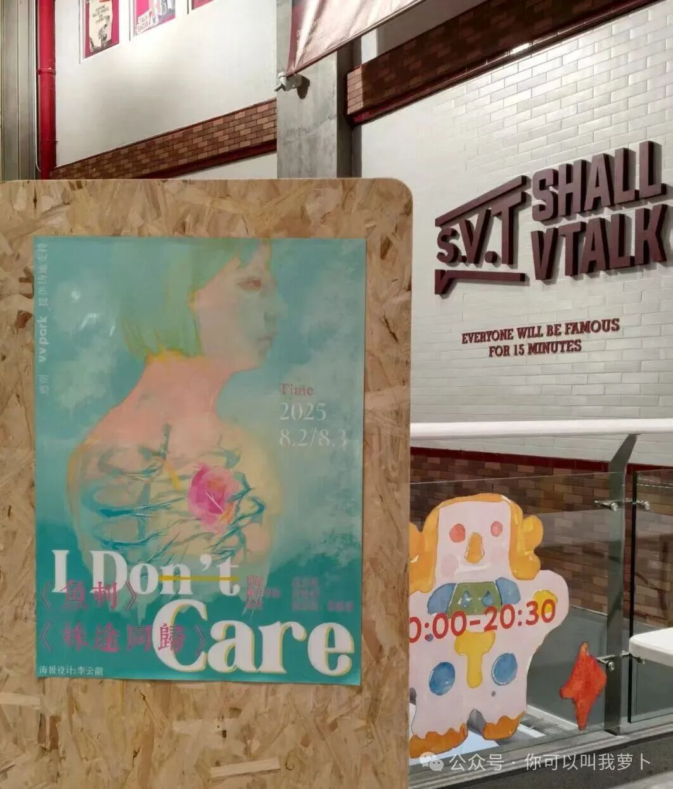“来个空调遥控器，后台有点冷”我在IDC全体演职的群里发。用妈妈送来的褥子对折边当垫子边当被子，把t恤对折作了枕头，眯了会儿，没睡着。到一点五十分起来，收拾铺盖，戴隐形眼镜，戴麦。演张美我没化妆，大黑眼圈子就是最好的妆容。 麦check，灯光set到cue 1，音频轨道走一遍，2点开始，确保无误后回赶在2点30观众入场前回后台。2点30观众入场，我们就不再出后台，直到登台。我们后台和她们booth在微信群里火热急躁的交流是演出这两天极具特色和有意思的一件事。 “有预约了晚上的人下午来了”臻童在群里说。此刻，观众正式进入了我们的世界。 ”现在来的人还不多，广播要不要延迟5分钟放“肖梁留言说。我说好。开场须知和中场休息的广播，是我2号早上排练间隙在后台迅速录的，然后马上发给播音乐的翊桐。我突然有点担心，怕原先预约链接最先售罄的首场实际来的人很少。我当然期待一个热闹响亮的开篇。但我知道我不能担心，也没有担心的必要。我说了，哪怕是底下一个观众没有，我也照样到点开幕。 从2点30开始我就不让烯橦看手机的。我生怕她的心情被微信群里的任何消息影响，我又不敢明说，怕她也因为我这句话而紧张，只好一个劲儿地让她看剧本、过台词、跟我对戏，给她找事做直到上台。 翊桐问我“中间有空座位请观众往中间挪一挪”的空座广播什么时候播，因为她拍了张照片——观众席只有最中间坐了几个人。

我说55分，我随即马上在后台录了一个“雨天”的广播，意思是考虑到打台风通勤不便，演出将推迟10分钟于3点10分开始。我其实很讨厌这样。我总是觉得无论如何无论如何到点开幕是天经地义。但没办法，我也是知道观众并没有养成准时到场的观剧习惯的事实。只好向“大多数”妥协。我当然也希望首场是多人的、圆满的。 在新建的“联络群”里臻童还提醒我是否有迟到相关告示，我于是立即手写了一张，说明演出已经开始，迟到的观众请于中场休息时再进场并于工作人员联系可在另一场补看《鱼刺》，让她们张贴了出去。 这个联络群是IDC五人和我妈妈爸爸的群，因为他俩也会/可以在现场帮忙。很有意思地，我会说“麻烦叫我妈别站门口寒暄，我在后台都听到她声音了！” 肖梁：“她已经收到”。 听到开场广播的响起，我和烯橦瞬间静音，开麦但闭嘴，我总是要到她身后再次确认她的麦是满格且开机，再确认自己的。 一步跨上舞台，拖着爆大无比的人字拖走到台左张美的位子上，坐下，大气都不敢多出一下。 从那一刻起，我的心开始跳得飞快。我不紧张，我向来不紧张，但是感觉头脑发热，精神高度集中。我在嘴巴前面做手势，示意烯橦待会儿讲台词把声音放出来。然后又低下头整理好自己，向身旁的烯橦伸出一个拳头，我们碰了下拳。我都没抬头抬眼看她，我的心我的全身早已进入完全的表演状态，像坐过山车卡好安全带准备出发，已早就没有了回头和松懈的余地。 我等着幕布下沿的缝隙里场外灯光熄灭，等着面前的幕布开始吱呀吱呀响地被缓慢拉开。但我等了很久。我甚至开始有点纳闷，在想是不是出了什么状况，是在等什么。但最终这个幕开了。只是我的booth理解错了播放开场音频的时间，在开幕前三五分钟就播了，但其实那个音频一结束就该熄场灯了。 我感受到炽热的pa灯打在我身上。我的大脑同样是高速运转的，我要清晰地分辨出先后亮起的一二三组灯，确保是灯全亮了才说词，虽然是烯橦的第一句词，但我向来都想着整个舞台。还好，她也感知到了，没着急地念词。 烯橦是带着在道具记录本上写下的提示台词上台的。因为我说我宁可让她依赖台词低头看一看，我也坚决不想她忘词然后三请王子龙。虽然台词生活化，但《鱼刺》和《姝途同归》的剧本都是一环扣一环，不是单句而是一节，每节之间都有逻辑关系，错了一处，虽然下一句很好接，但整个走向怕是很难圆了。 从第一场戏开始的第一秒起，烯橦再也没有错过词，再也没有出过戏。哪怕在这之前的每一次排练，没有一次她没错过。 吃饭、卡刺、咳嗽、吞咽......我就记得，当时我嘴里塞了一大团饭，我警觉了。因为那是我第一次真情实感地劈里啪啦往嘴里塞了好多饭，之前排练没真吃过这么多。我深知嘴里含着东西说词有多么得难。更何况我的台词本来就已经被几次诟病。“为什么这样”，“给我...吃饭”，“那巧克力呢”，几句本身就很短促的台词，更是让我在心里下定决心一定是在位置不大的门牙间硬咬也要把这几个字咬清楚了。 我只好在没有台词的间隙假装若无其事但其实费尽全力地嚼嚼嚼。我真的想很努力地嚼，但又不能让观众感受到我在很认真地“吃饭”。我甚至试过不嚼了生吞，但就是卡在喉咙口，咽不下去。
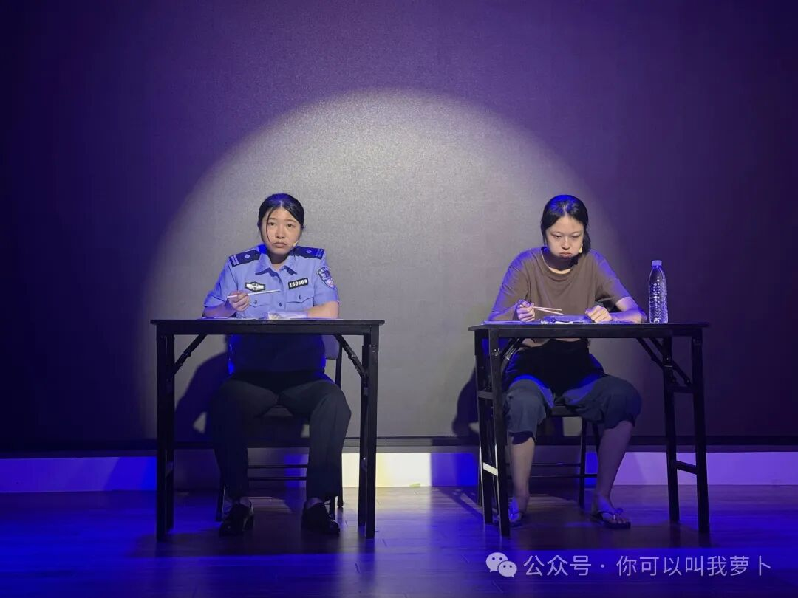当时演出的感受我有点忘却了，只是现在演完四场回想，除了第四场有意外发生，第一场当之无愧是演得最好的一场。 写着写着模糊想起，然后与烯橦确认，我们第一场的确水瓶被我大力敲桌弄掉了。还好，我们在周五早上排练展示的时候掉过一次然后我提醒烯橦去捡起来，这一次在舞台上祁警官就主动去捡起来完成了这个动作。哎，你说，当时的凌若瑶在担心什么呢，有什么好恼的，一切发生皆是福报啊！ 忘记提前和烯橦排练两个戏中间的transition和bow了，导致《鱼刺》演完我坐在座位上，发现那个幕拉得非常非常缓慢，以至于我都定不住了，开始缓慢收拾桌子上的道具。结果烯橦站起身举了个躬，我却一直没鞠，直到大幕关上。到了后台才跟烯橦说，以后鱼刺演完不用鞠躬了. 我在演出时注意到我正对面远处的门有声响动静，不影响我演出，但肯定影响观众的观演体验。我们于是只好额外找人在接下来的场次在外守门。哎。 迅速卸麦、换装、上妆、戴麦，同时跟外面的booth保持联系，跟烯橦过下稿子。准备上场了发现上一场鱼刺的桌子椅子还没搬下台，于是迅速在群里留言说等等搬道具，一切置妥才调整呼吸，再次检查麦克风，然后上台。因为在姝途里手机就是我们使用的道具，所以可以直接在台上坐好了之后在群里发言“已就位”。
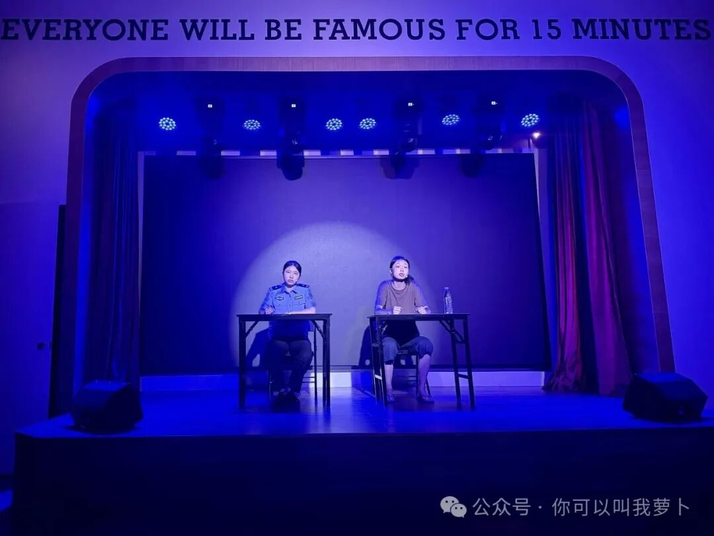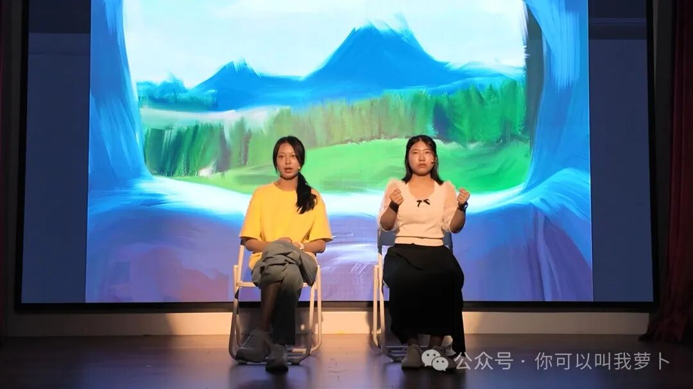如果说第一场姝途我有没有啥想法，大概可能就是担心背景音乐的播放吧。但其实到了台上全是戏，根本没空担心。整个过程很顺利，灯光转场音响LED全程在线完美卡点。感觉一直到谢幕才有实感，就是大概我们是真的搞了一场演出。跟观众说完待会儿有演后谈准备下台了，结果后面冒出来几个人叫我等等等等，我定睛一看竟然是孙老师！

还记得我在上篇说的，我看灯光时瞬间理解了当我在舞台上被要求一句台词无限重复n遍时的老师在干嘛的老师，就是孙老师！很惊喜很惊喜。然后我看这花要送不完了我赶紧说我真的得去后台了待会儿就出来然后火速下台溜了。 结果太激动忘记关麦了尖叫了几声才发觉，关麦时正好看见群里肖梁留言“你们小声点，外面全都听见了”。哈哈哈哈。 第一场的演后谈也是很新奇的经历。记得第一位观众是坐在一排c位的白衣小哥，问我张美几次和水瓶的互动是怎么设计的，有何用意。上来就如此专业。 还有观众说，是逛商场临时看到有演出，于是被朋友拉来一起看，结果开幕后张美的一个眼神就让她瞬间入戏了。我：“吓死我了我还以为你说要个眼神就让你后悔来看了。” 而且第一场的观众反响超！级！好！在此郑重感谢第一场给我们热情反馈的观众朋友们：
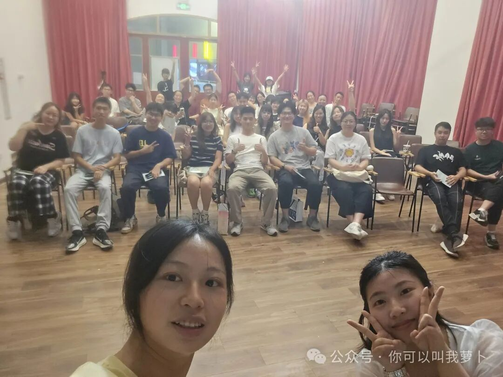大概是第一场年轻人最多的缘故，我是真没有想到，姝途同归竟然可以从“张雪峰”就开始发出第一声爆笑，然后一路笑到“表白失败”，“哎都是哥们”更是笑声连连。（感谢张雪峰老师，IDC剧组就这样到处蹭）结果后来才发现原来直接霸占第一排的是烯橦的初中亲友团成团出动，太给力了！！ 结果后来看照片才发现拍合照时前置镜头被印度老哥贴的手机膜盖糊了拍得像素感人。。。没事，还是能一一认出我亲爱的亲朋好友们的。 吃饭，上厕所，眯觉，眯觉中途几次cue烯橦上来一起休息因为我生怕她精力不够第二场角色开始游走... 我也没想到午晚场中间还能有小一个钟时间休息，但也睡不着，躺不了那么久，于是提前起来麦check了。 第二场可算熟悉了一点，有片刻闲情逸致在后台拍两张花絮照了。
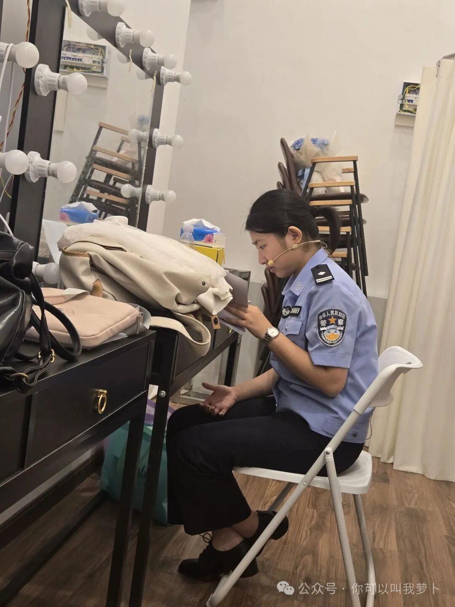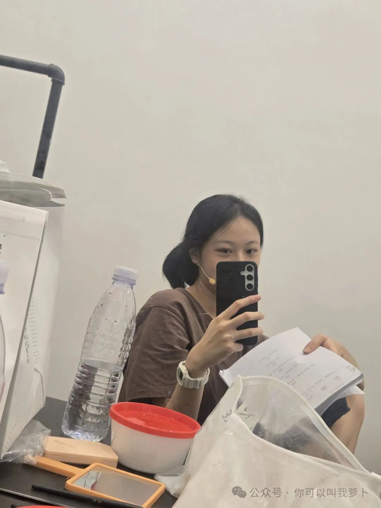回看聊天记录，好搞笑，先是发现有小孩，警铃大作，这个凌若瑶直接深陷之前被剧场小孩创飞的伤痛回忆。结果这个肖梁直接在群里打了个草稿然后主动去找小孩家长说了“这个剧的题材可能有点严肃后期有情绪大爆发如果孩子被吓到的话您可以带着她离场我们明天还有场次可以为您单独补票”。凌若瑶就这样一次次被她无敌强大的团队拯救。
然后是讨论是否要延期开场。我说20人团到了吗，因为提前跟人家说好了留位置，这是不能错的。请示母后大人后只好听令延迟演出并播放下雨音频，结果里面硕大一个下午录制的“三点十分开场”把众人在群里笑翻。然后又有买了5张票的朋友在场外等朋友，然后“OK来了”。 马上准备开场了结果疑似20人团出门拍照了，又是多等一分钟，一分钟，08播，09播，终于在8点10分开播。臻童：“疑似没有8点准时开场的下场。”
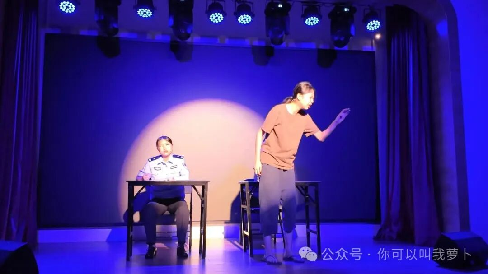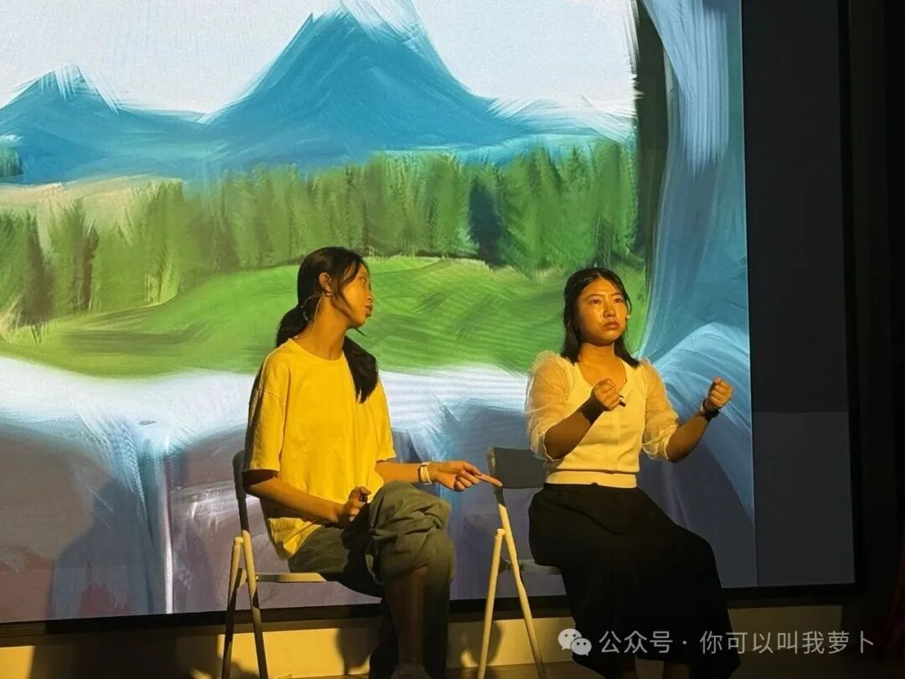第二场呢，也没有任何差错，整体完成得非常顺利。第二场比第一场明显熟练了不少，两个戏中间的intermission也smooth了不少，吸取了下午的经验教训我主动在群里说“麦已关”，at臻童拿剪刀剪我的双眼皮贴，拉帘子，“903 我还没换衣服”，翊桐让我帮她检查LED是不是在姝途cue 1，然后我说“等下，还没背麦 ，好了”，然后第二场开始的广播响起。 9点50，“完美”，我在群里说。 （照片好像是等演后谈结束后不少人都走完了才想起拿臻童手机拍的。）
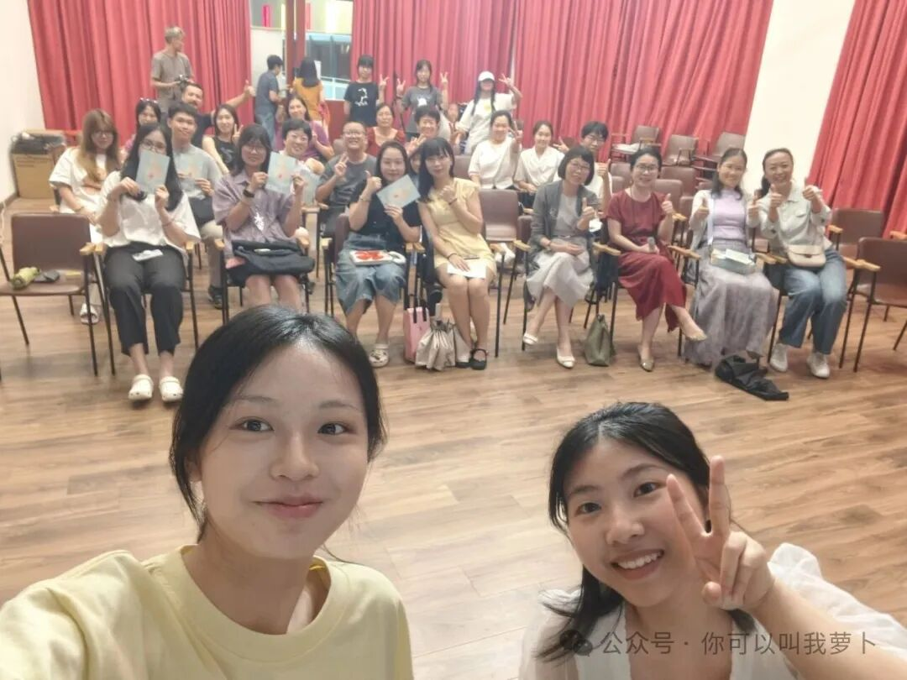因为第二场来了许多人，还有专门组团来看的，所以加了一场演后谈。有位女生在演后谈开始的时候都还眼里挂着泪，发言的时候更是几度哽咽，因为她是一位姐妹关系里的姐姐，《姝途同归》很打动她。我和烯橦拥抱了她。她说：“终于也有姐姐抱我了。”
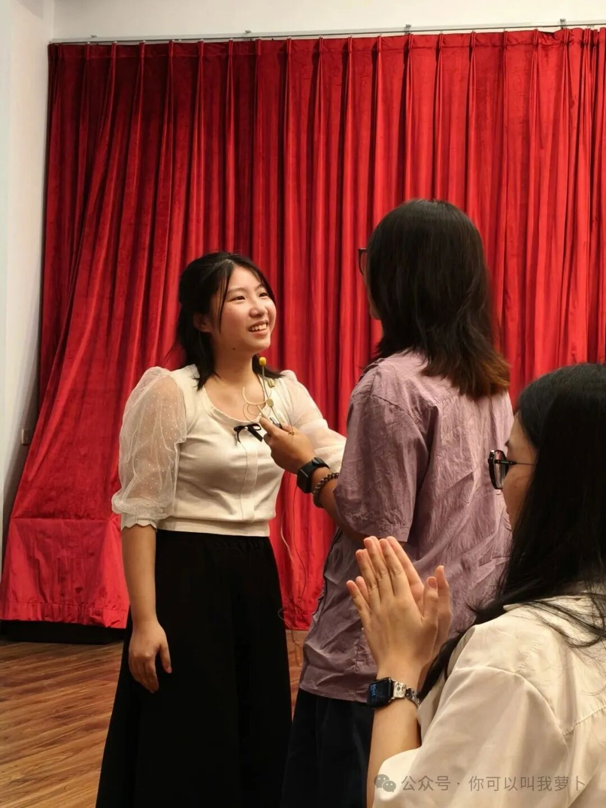观众问我，“既然张美那么在乎她的那个邻居奶奶，为什么还要吸毒？”当时我的回答有些绕，我提到了我剪短的裤脚，提到了加拿大的原住民处境，提到之前烯橦和我说过的对张美的指责，我说我曾经想过要不要给她一个理由......观众说她们是语文老师，因此觉得这个原因没有表明是一个结构上的疏漏。我后来想，其实我一直以来都可以很肯定地说我一直都选择不给答案。因为不给答案就是我的答案。在场的一位医生也分享说，人在生存环境恶劣、原生家庭创伤严重的情况下，更容易自己为自己“寻求帮助”，更难以抵抗诱惑。我也觉得，与其上来就要求张美、苛责张美，我更想先抱抱张美。
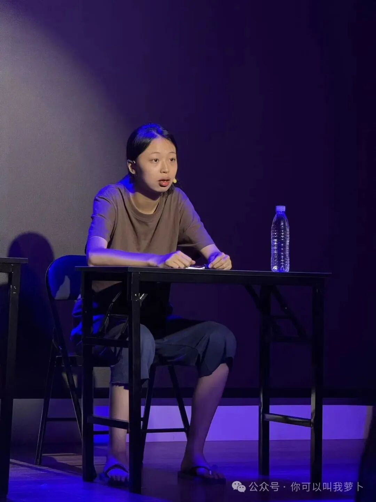我之前拳击课老师的女儿竟然也来看了还跑上来送花。破案了，一开始说的小孩原来是她们姐妹仨，那我不用担心了。小妹妹特别大方可爱，跟我说她喜欢这个戏。（回看照片发现大姐二姐与烯橦同样穿了白上衣黑半裙！好美妙的巧合）
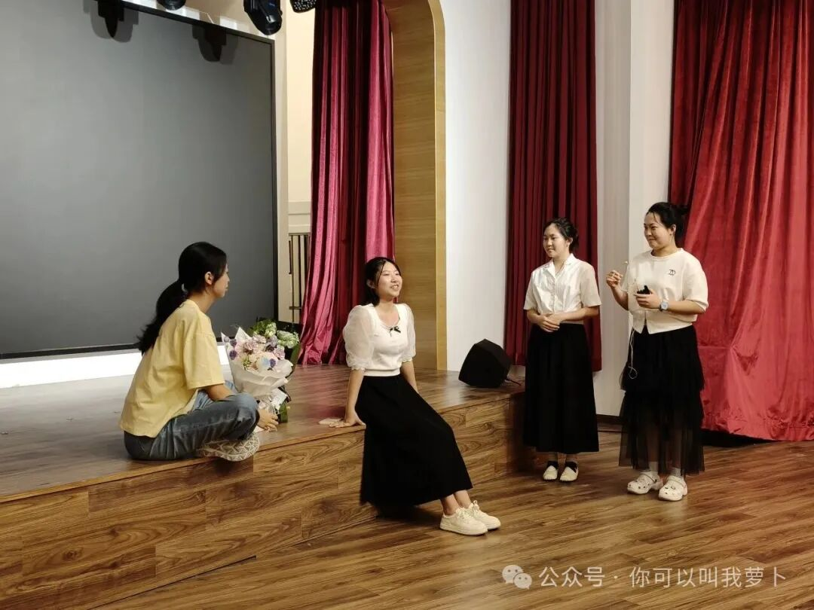有阿姨单独来找到我，跟我说她觉得两部戏都是提出了问题，而非给出了答案。她说她在戏里看到她的生活，尤其是《姝途同归》，比如里面在厨房做饭的戏，她觉得完全就是她与丈夫相处的点滴，因此演出带给她感受，使她反思。我很高兴很感动有人能读到和我创作时一样的想法：我想推开一扇窗，在窗子里每个人看到的风景都不同。而不是讲一个道理。因为或许这个道理到底是什么，我也还没能弄明白呢，我其实也是这个戏的受益者。
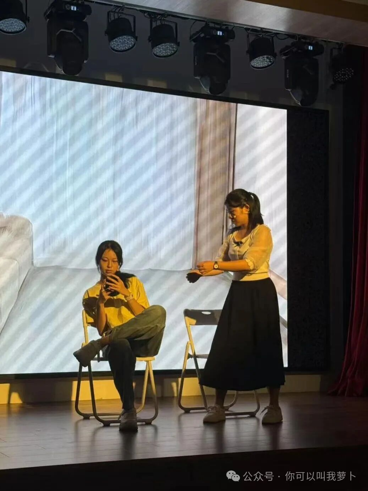也有阿姨单独找到烯橦，具体说了什么我不清楚，只是当时站在旁边断断续续听了个大概。好像意思是说，祁警官面对张美时，应该更加与她面对普通人时不一样，应该更威严更凌厉。父亲也听到了这个对话，因此后来专门打电话来让我跟烯橦说，千万不要受观众反馈影响，就按照现在这样演，演得很好。我也十分同意，烯橦的祁燕温度拿捏得很到位，与张美之间的力量拉扯也将节奏平衡得很好。说实话，这是我在任何一次排练中都没看到的，是远超任何一次排练的。或者可以再次地说，我也是这个演出的收益者。 我想起来，我一开始在招募演员的pdf声明里说，我也找从未表演过的演员，因为我认为这些“没有经验” 的人时常带给我惊喜——他们的反应是最本真、完全出于身体本能反应的，也因此少了很多套路，多了很多真诚。我喜欢那种动人的拙与真。现在回看，这一点再一次得到了证实。
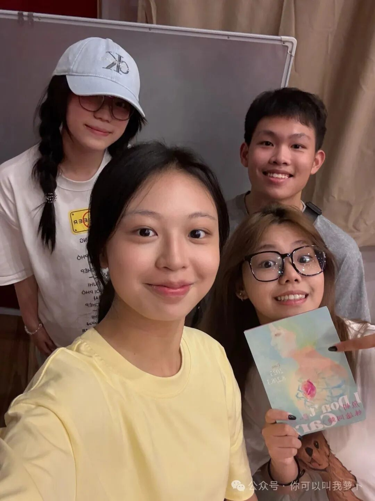瞧瞧这是谁？是我们超神的首席独家音乐设计总监我铁子，为我出了很多神图的在演后谈一顿彩虹屁之后催我写AMDA文书的超sweet的Hannah，和一个做灯光时超酷超得力拍照时躲在后面又悄悄美了的肖梁呀！是一帮看照片都能听到他们声音和欢笑的人呢。 “大家今天的演出超级完美！明天下午13点到齐，最迟13点30开始check各种，14点确认无误，14点30观众入场。” “好！” 8月3号 中午11点多起来，没胃口吃什么饭。于是拿着姑妈豆腐花的中山特色蒸饭外卖到了场地，在楼下food court点了杯冰美式消肿，在剧场门外售票桌子扒拉了两口等她们来。最先到的是臻童和臻童妈妈，说要一起在场外负责下午场的卖票。
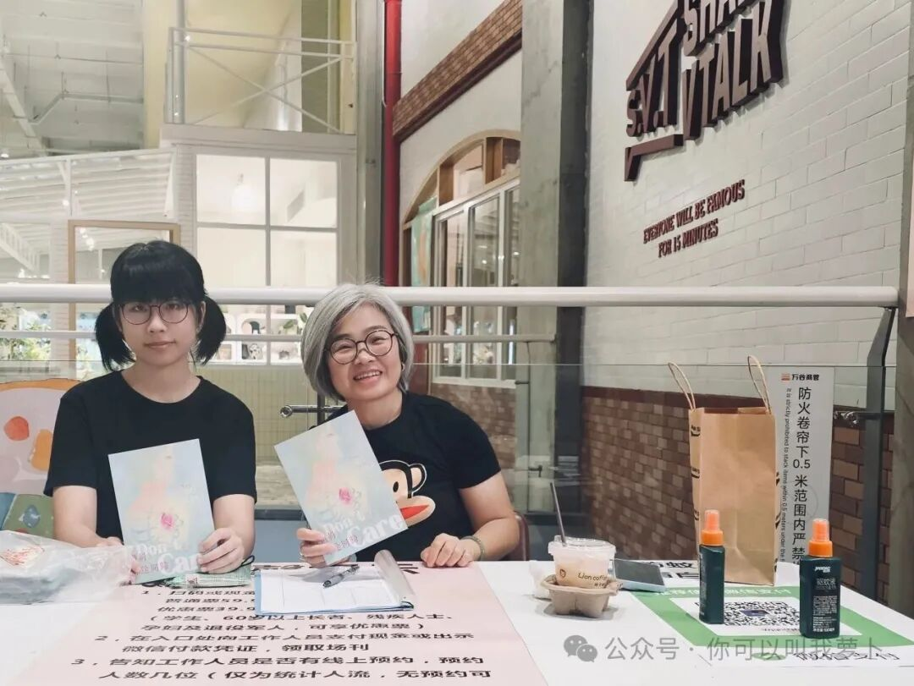麦check前，杨先生来和我谈场地使用时长的事。他们让我补交前一天超时的费用，再额外付今晚要超的，一共1000。我在联络群里说了这件事，没法当即决定，于是抛下它先管演出了。我不让烯橦知道这件事。 正常麦check，眼看都已经有观众朋友在敲门了，于是保证一切正常后迅速结束，躲到后台去了。 又来了妈妈找的录像师姐姐，专门帮我们这一场录像。于是我又问杨先生，摄像姐姐说录像的设备能不能直接插收音台，那样效果更好，但是插进去之后，我们现场的麦克风又没声了，在后台试了好几下也听不见。那会儿观众在外面听着我们麦check。于是我也不再找杨先生，让她们直接把那个相机收音线拔了，首先保证现场效果。
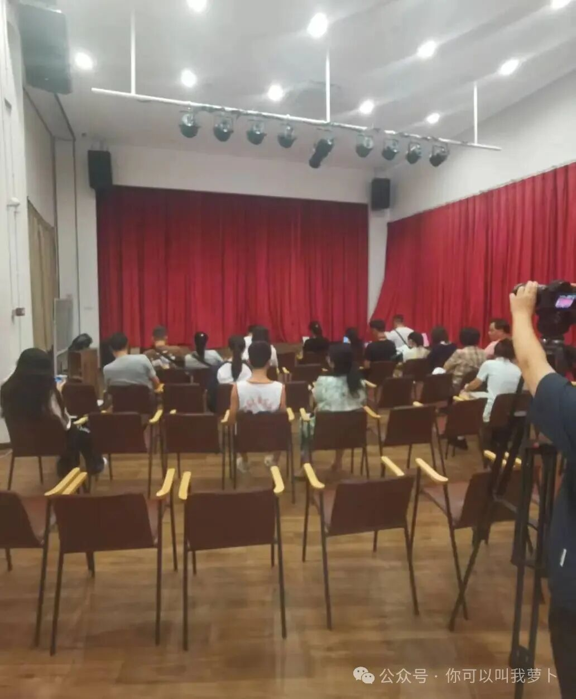我说要延迟开场吗？有没有下雨？预约是满人的。妈妈说等五分钟，于是我直接让booth开麦给我，我直接说不好意思延迟五分钟开场。肖梁说我说的时候有点小声，我说那你们到时候开场临时应变吧，我得下线收心了。第三场开场前，处理了一堆杂事。 演出前看到父亲在联络群里留言，场地额外付费的事已托人解决减免了。 虽然演出前被各种烦心杂事打扰了，但演出是毫无受影响的。
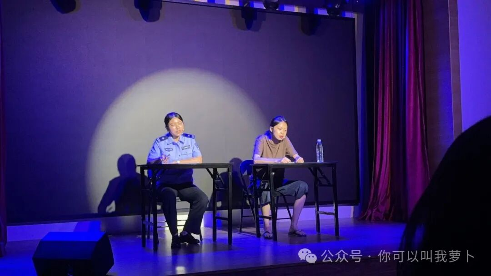除了一点我不满意，就是张美的头发，总是挂了一缕在左脸前，其实我演出的时候就注意到了，看视频的时候可以发现，我把头埋到臂弯里蹭了一下，试图把头发弄到后面。它被我蹭到后面了一下，结果因为当天早上刚洗过头太蓬松了，又掉到了我面前。我不敢直接抬手捋头发，那样的动作太假太做作了，我也不敢直接解放双手做大动作，因为当时在讯问室里四肢被固定得死死的的感觉还很显著，所以也自以为是地把手“固定”在了桌子上。但其实现在想想，就算做了比如抹脸撑脸揉脸等等处于极度悲伤情绪里的“大动作”，观众应该也不会想到在真正的情况里双手是被死死定住的。
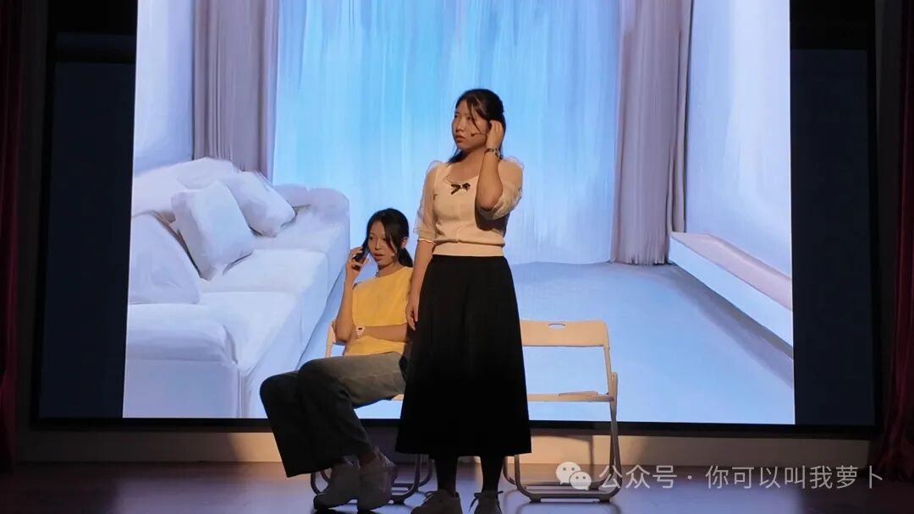尤其这一场还被录了下来，导致后来我回看视频的时候觉得这缕头发实在是太碍事了。。。还有姝途的录像，本来演出效果有大量LED屏的支撑，但摄影出来全是大块大块的摩尔纹。。。第三场是唯一没有演后谈的一场，导致我也忘了拍大合照。oh no my bad. 中山嘛，是个很小很小的地方。你认识我，我认识你，你认识ta...以至于这个演出帮我集结了好多后来本来没联系了的同学，而且发现我们IDC五人组里面互相拥有很密集的共友。
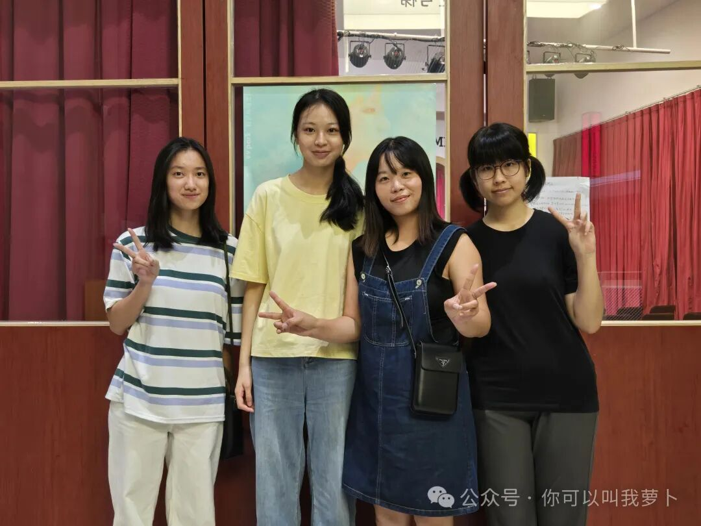演出完，我有些头晕。不知道为什么，也根本吃不下东西。明明点的饭就在面前，但几乎一口没吃就撂那儿了。睡觉也睡不下。“你们谁有遮瑕”肖梁问，我说“我有，来拿”，肖梁：“我以为你睡了”，“睡不着”。 但我深知不吃东西是不行的，在没能量的时候，想出很好的演出效果是硬顶不上去的。妈妈已经回家休息了，我打电话给爸爸，问他有没有可能帮我去打包糖水，我在想一些不用咀嚼像流食一样可以直接吞咽且升糖很快的东西。我在一楼food court找了一圈，糖水铺有的，但不开门。竟然没有奶茶店，只有咖啡店。我甚至去问了一间大茶楼卖不卖奶茶，答没有。我只好走出万谷找到父亲，父亲也没想出什么好主意。我目光所及只有一间美宜佳了，我只好去买了瓶阿萨姆奶茶。其实纯奶茶也不是很好的选项，因为猛灌几口液体下去，上厕所也是个问题。 事实就是我的确在换了装之后和中场休息时都跑出去上了厕所，为了不暴露我能做的只好是把张美的棕t换成一件黑t。然后再微信肖梁让她把她的鸭舌帽拿到后台给我，我就把鸭舌帽扣的低低的，再弓着背低着头快步走出去。我甚至定了点：“45肖梁拿下帽子进来，我去厕所”。但我也不知道为什么我这么好认，哪怕是这样我也有一次在半路听到有人叫了我的名字，但我步速太快，等我反应过来我几乎已经冲到厕所里了。 因为妈妈回家了所以突然发现无人守门，本来已经买好票要连看两场的铁子，被我临危受命去守门。我问他说你是想看还是想帮忙，他说都行，我说那你守门吧，他二话没说到位了。铁子，我的好铁子。“臻童，有个戴眼镜的男生来帮你卖票和守门，但是下午那几个已经买了票没来的和那8人团组团来的一定要你亲手亲自过问，宁可让后面的人等一等慢一点，也不要马虎。其他的让他收款也行。” “好。”臻童，我的好臻童。（噢天哪我现在写的时候才想起那时何思懿已经做了近视手术不戴眼镜了但我literally在群里留言“戴眼镜”。）（哈哈哈哈。） 第四场又延迟开场了， “那今晚也是8 10吧。我妈说了，听她的吧。” “爆满了，观众坐到我前面了”，翊桐说。 臻童：“场刊已发完，已关门，可以往我过道这边坐”。 末场的开场时间和播放广播的时间更是难以捉摸到我直接和肖梁通了语音，就连我们全组人均秒打的打字速度都不够用了。 “06广播”-翊桐；“对”-若瑶；“等下还缺位置”-翊桐。 然后《鱼刺》开演了。
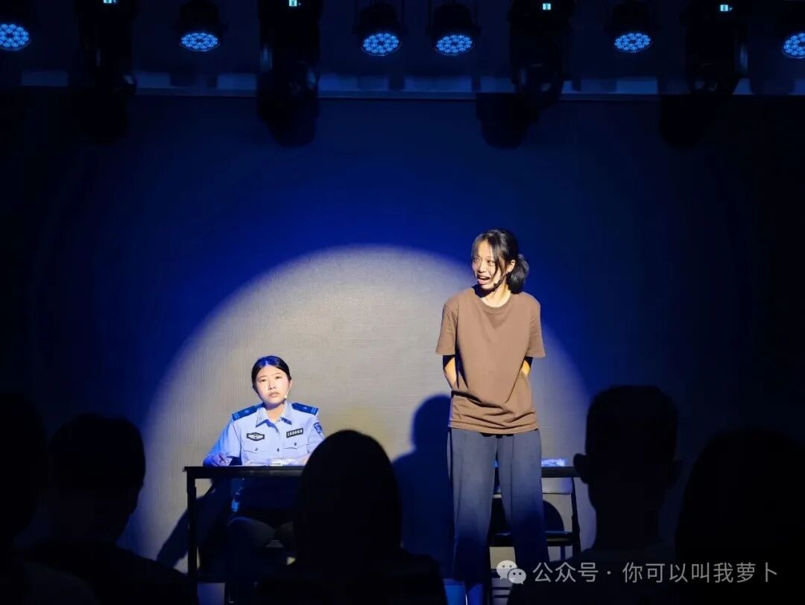这一场的鱼刺，omg哈哈哈，属实有些“炸裂”了。凌若瑶你一个手无缚鸡之力的人是怎么一锤把桌子锤塌的啊！饭、水瓶全洒了一地...难不成那一刻真的张美附体！？小美啊，你的愤怒我们每一个人都感受到了，可是你知道你让那一刻的凌若瑶多慌吗 首先，那段时间的她是一个力气不大的人，其次她没拼过这个桌子她不知道桌子的架构，再者她还要兼顾演出要在试图复原桌子的同时持续推进台词和情绪。 我只记得，当时那个画面在我眼里是完完全全模糊的，我根本看不清眼前的一切，只是凭着感觉，先把桌子翻过来，让塌陷的左腿面朝我，然后凭着一点尚存的逻辑与头脑和一点余光里的视觉，大概估摸了一下可能将桌子复原的方法，再凭感觉抓住桌子腿、用力往外一掰、发现真的掰开了桌腿之后，索性临场给了句很重的台词：“你们怎么可以这样！”然后在“这样”二字爆发的时候抓着桌面两边往舞台上重重一立——立住了。 真是万幸啊，万幸！一定是老天又帮了我。因为如果那一下没有掰开，那我是真的无法在台上一直掰那个桌子、掰那个桌子、掰那个桌子......想都不敢想那有多disaster...... 还好从排练到正式演出都就有过掉水瓶的经历，烯橦这次也游刃有余地捡了起来，而且这次是我心里很确信她一定会去捡了。（早知道排练也摔一下桌子了...???hhh）《鱼刺》演完，大幕关上，我直接像失了魂一样地朝台左一倒，摊在地上，烯橦走过来拍拍我说“没事的，没事的，效果很好啊”。我根本不敢确信，感觉从小到大这么“炸裂”的舞台事故还真是从来没有发生过，就算是当时把台子撑住了，这后劲儿还是难瞬间消化掉。
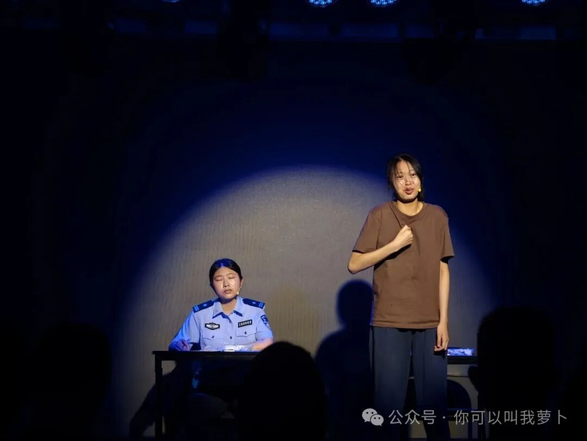“哎我靠”，我看到在IDC群里我在大约43分的时间点发了这条没有任何上文和下文对话的消息，现在我想，那大概率就是摔了（又修了）桌子之后在群里的感叹了。我到了后台甚至要打通父亲的电话，向某个“别人”确认，我刚刚的临场反应是没问题的，我要听到有人跟我说一句“演得很好”才能安心。 没有时间多寒暄，即刻硬吞定心丸后迅速挂了电话换装、化妆，还去了个厕所（看到微信群烯橦cue肖梁让她拿帽子来哈哈哈哈），从后台出来时发现舞台上洒落一地的饭渣还没清理，于是迅速微信群cue所有人来清台。 烯橦check了刚刚不小心掉到地上的麦确认音量无误，然后我从厕所回来换好衣服背好麦，《姝途同归》开演。
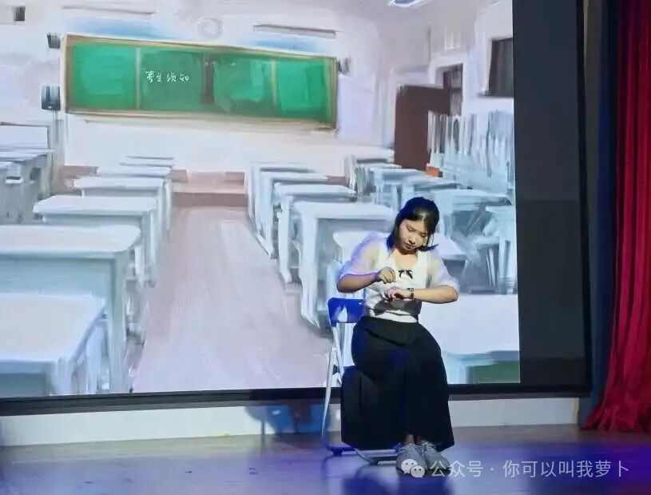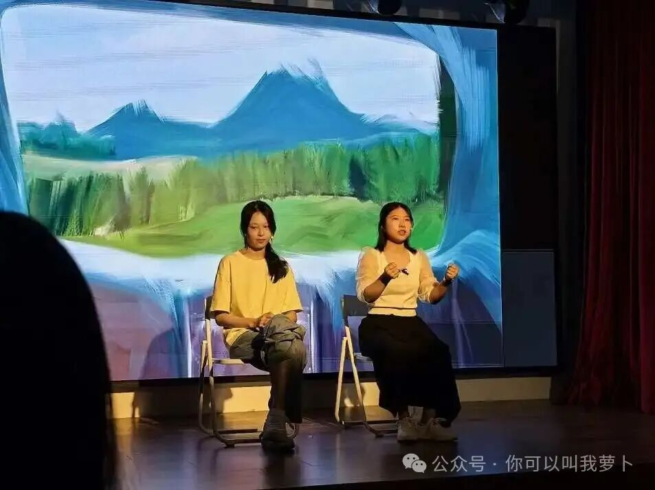在姝途结束后，我先前三场是会抬手示意我的灯光师、舞监和票务然后一一鞠躬，但这次因为是末场，我提前告知过她们了我会大声SHOUT OUT THEIR NAMES. 还有我同样在场的音乐设计何思懿，和分别在青海和德国旅游的美术设计卢可瀚和海报设计李云翮，我同样大声喊出来他们的名字然后深深地鞠躬，向所有人和宇宙表达我最诚挚的谢意。那一刻我必然是无比幸福的。I AM PROUND OF ALL OF YOU PEOPLE. CAN'T MAKE IT WITHOUT ANY OF YOU! 然后是从没提前商量过但我四场都做了的：示意我的搭档烯橦，然后热烈地和观众一起为她鼓掌。然后我也没跟烯橦说过的，第一场谢幕示意完她后，我有点半开玩笑样地示意了我自己，然后深深地鞠了一躬，只是没想到，烯橦直接转过来，像我为她打“聚光灯”一样地也为我喝彩。
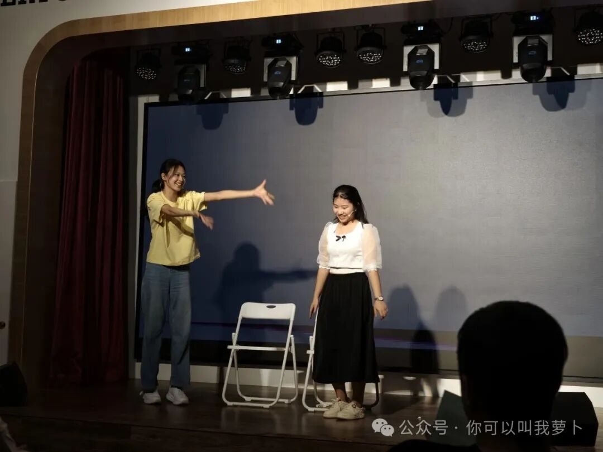这个凌若瑶终于记得在演后谈之前拍齐人的大合照了：
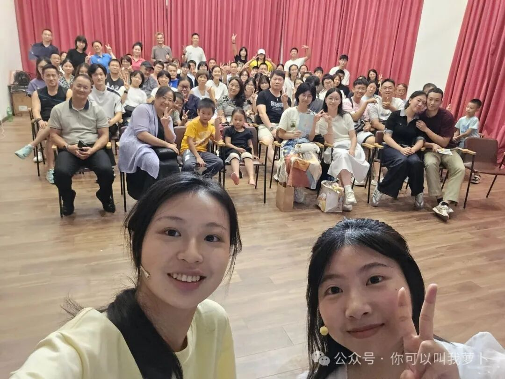这个合照也终于不像前两张一样糊的不成人样了。。特别感谢尾场前来热情捧场的观众朋友们！！！原定52个座加到62个，是真的爆满，结果还有三位卡点到的男士第一场戏三个人挤一个高脚凳哈哈哈哈。感谢支持。 “我擦好多人走了”，肖梁说。哈哈哈是的演后谈留下的人并不多但我们也really had a good time. 这场恰巧有几位都是通过小红书刷到而来的同样喜欢表演艺术（如声乐）的女生，并且都在演后谈向我表达了对我表演的认可和喜欢。“一定要继续演下去”，“你真的很适合”，“真的很想之后再看到你的表演”......所有的这些话，任何一个字在心里想起来，都可以化作一滴感动的泪，但我已不像以前一样爱流泪，我已经比以前更有力气，能将它们铸成一颗颗坚硬的钻石，和我、和我身边的人一起支撑着我。或许在将来的某一个我又犹豫或不安了的夜晚，我会想起那个我现在已经完全记不得名字了的人，但我会跟自己说：“就算是为了她也要继续创作下去。”就像我在这次IDC的创作过程中一样，我有一次会说“就算是为了多多我也要把她写出来”，而多多其实只是我去年在温哥华一个戏剧工作坊里只碰过两次面的女孩。有一次她在微信上跟我说：“我很期待读到你的本！”
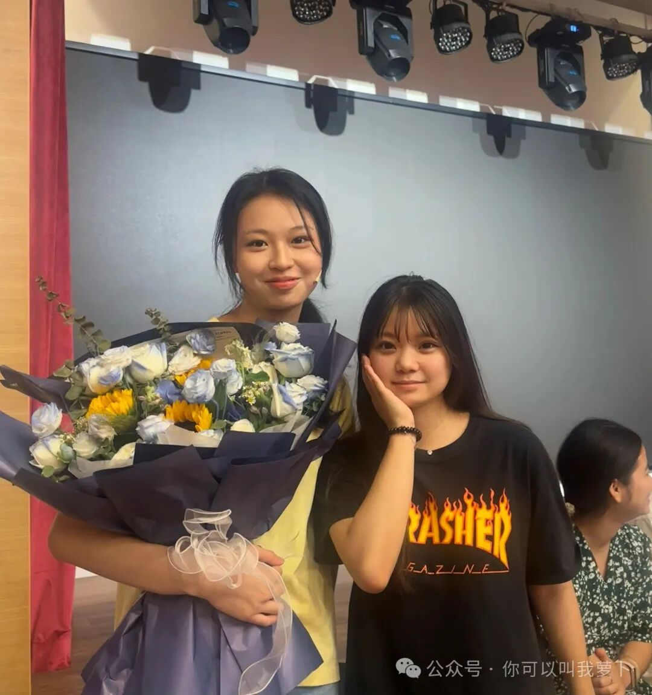有两位女生还加了我微信，我回到家了还在线上又表达了对我的支持与鼓励。非常感谢。 很开心，我的舞美设计（终于）被人夸了。（哈哈哈哈！）他同时问我第一场的《鱼刺》想要表达什么，他没看懂，我说我想表达的大概是，“这个世界不是非黑即白非对即错的，每个人心里都有ta最柔软的地方，也都各自背着满身的伤。烯橦在有一天排练的时候也跟我说，她有点无法进入角色，因为她觉得自己会把自己武装成‘绝对正确’的祁燕去惩罚曾经犯过错的自己，因为当时的她无法接受自己也曾是‘张美’的事实。而祁燕是个勇敢的人，她面对自己的不堪、袒露自己的脆弱，而这需要极大的勇气。祁燕打动了张美，因为她不是站在‘好人’的立场去指责‘坏人’、去站在道德的制高点创造二元对立，而是在一个‘警匪’本就被划归为“opposite characters”的设定下，走到了张美的同一边。因为或许本来就不存在‘这边’和‘那边’。也有观众问过我张美吸毒到底是自愿的还是被害/被迫的，我说首先这不重要，其次就算我一定要给出一个解释，我也宁愿她是自愿的。因为我希望她先作出选择，再被判决对错。我想她是主动的，有选择权的。我喜欢这个故事，因为这不是一个‘好人’与‘坏人’的故事，不是一个‘警察’与‘犯人’的故事，而是一个祁燕与张美的故事。”我如是说。 我在写这个故事的初期根本没有想到这些，是我写完第二个戏、见到烯橦、排练、真正地站上舞台演出后，这些想法和感受才慢慢地莅临了我的世界。 自然有人提到被一拳捶塌的桌子。大家在猜测到底是意外还是设计。竟然还蛮多人觉得就是设计！凌若瑶，这次谢谢一下演了这么多年戏的你吧，这回是自己救了你自己。当大家知道是意外时，或多或少表现出一点吃惊，甚至当时我在公交车站发微信对她说“我搞演出因为我就想干一件毫无意义的事”的Sophie还拿麦说可以把摔桌子加进演出里，效果很好，丝毫不觉得这看上去“很意外”。 好像前边说《鱼刺》比较多，褒贬不一，但其实演后谈收到的反馈里，对《姝途同归》的评价是更多，而且都是好评。（好猖狂一人）（哈哈哈哈）其实屡次都有女生表示，自己是姐妹关系里的姐姐，因此备受感动，感触很深。朋友秀秀还专门走进后台来找到我，我转头看到她时她眼角还挂着泪，她跟我说她也有亲妹妹，因此她和旁边的海琳看姝途时都几度落泪，深受触动，很喜欢姝途。就算不是姐妹，也有不少人表示感觉看到了自己真实生活中各种亲密关系里的点滴。
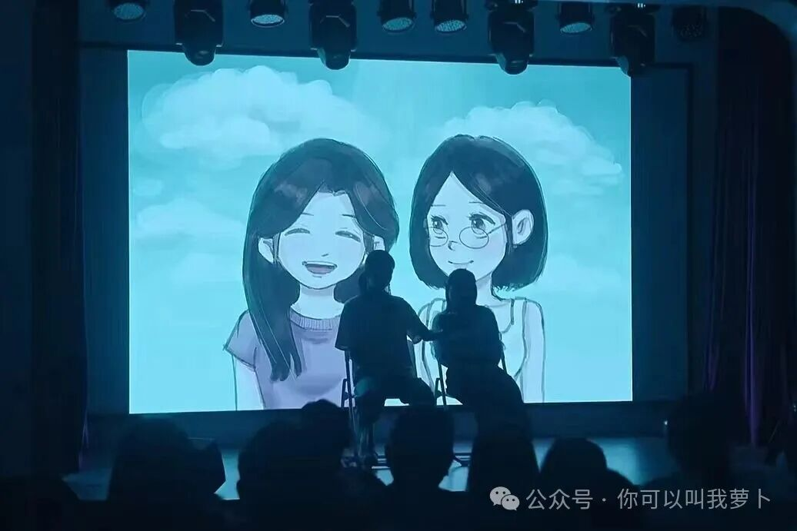烯橦的学妹和学妹男友，还在演后谈结束后拉着烯橦聊姝途聊了好久，聊到我都实在不好意思打断了说，麻烦他们跟烯橦到化妆间，让烯橦边收拾东西边聊，不然真是要不够时间收场了。三个人一直聊到我们散场走人，记得这个是因为当时我东西太多，还让他们帮我先暂时拿两束花让我把手腾出来。哈哈哈哈。我也喜欢姝途，这个在十几天内极限创作的本子。 这场也来了不少我的朋友。她们都等我到了最后一刻关门才一起下电梯走人，这帮人还一声不吭地主动帮我摞椅子、收杂物、捡垃圾、撕物料、收海报......虽然把我指明要留下的两张大海报也给扔了但我还是为我的神仙朋友们感到无比的骄傲与感动。SHOUT OUT TO MY FRIENDS!
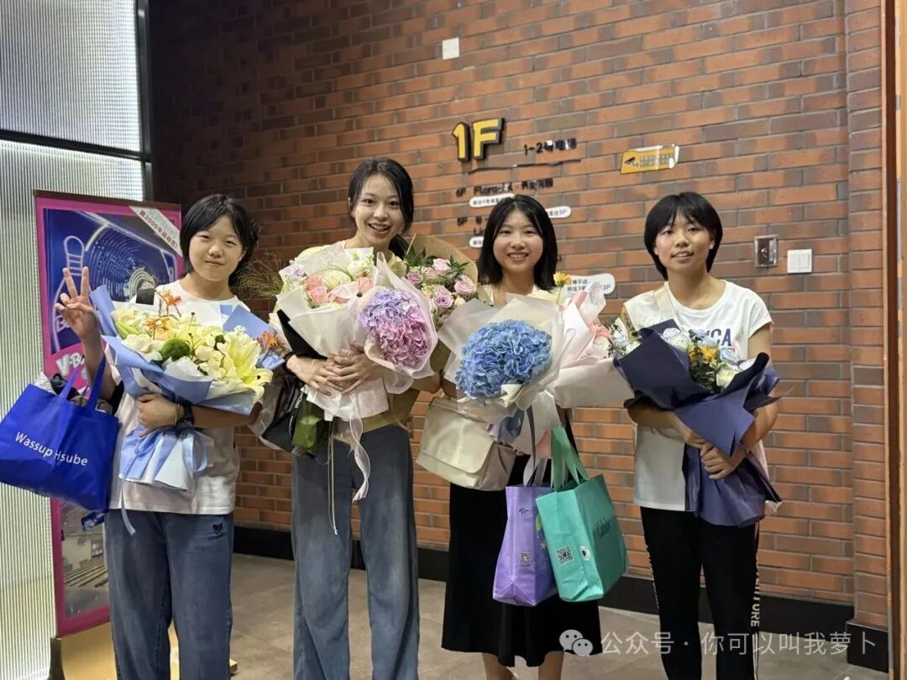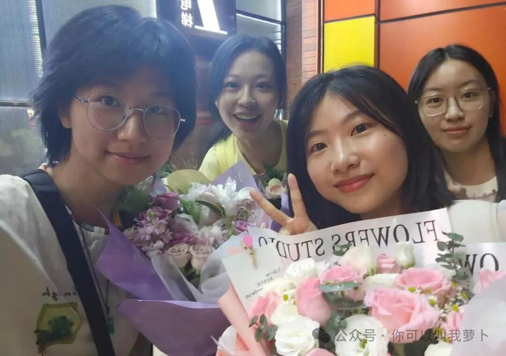下到万谷广场门口，IDC五人自然是要拍一吨照片的了：
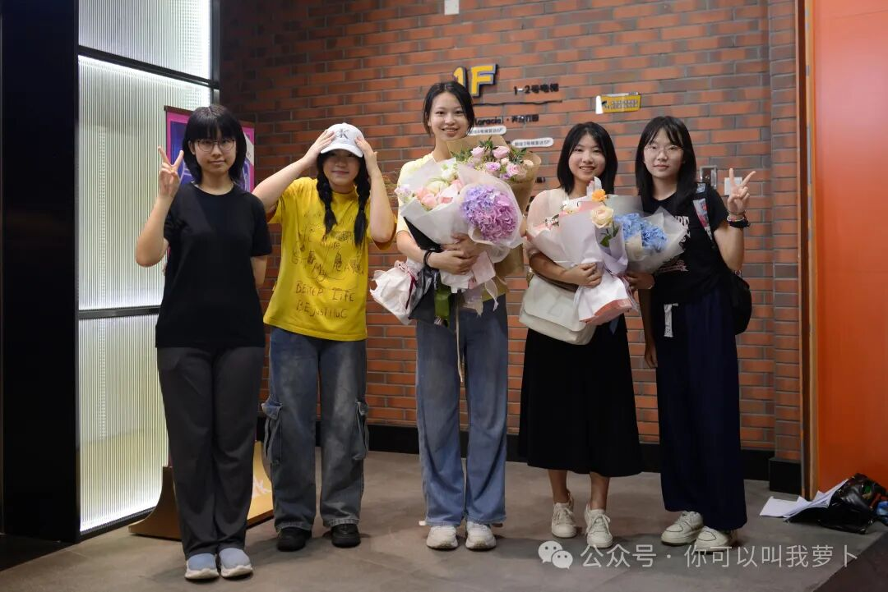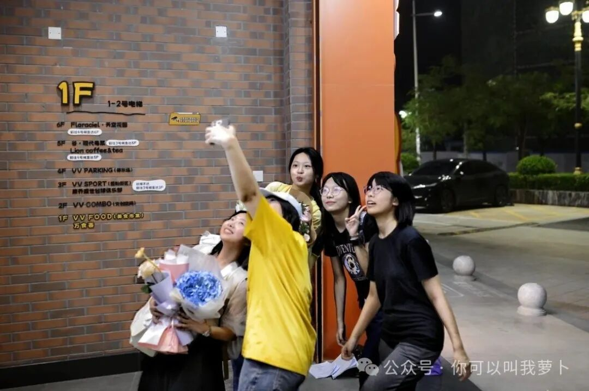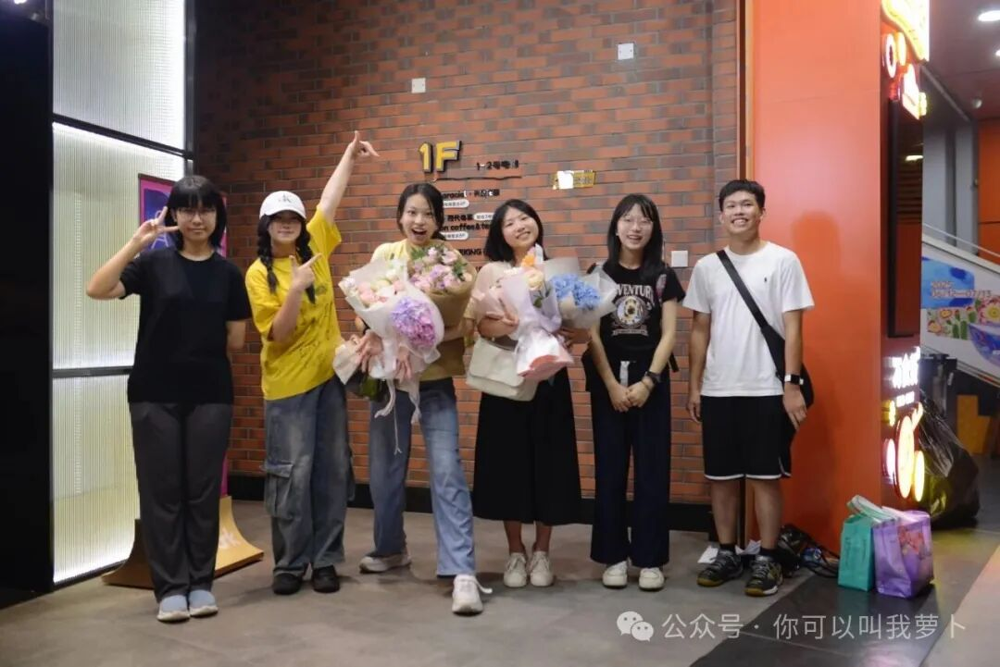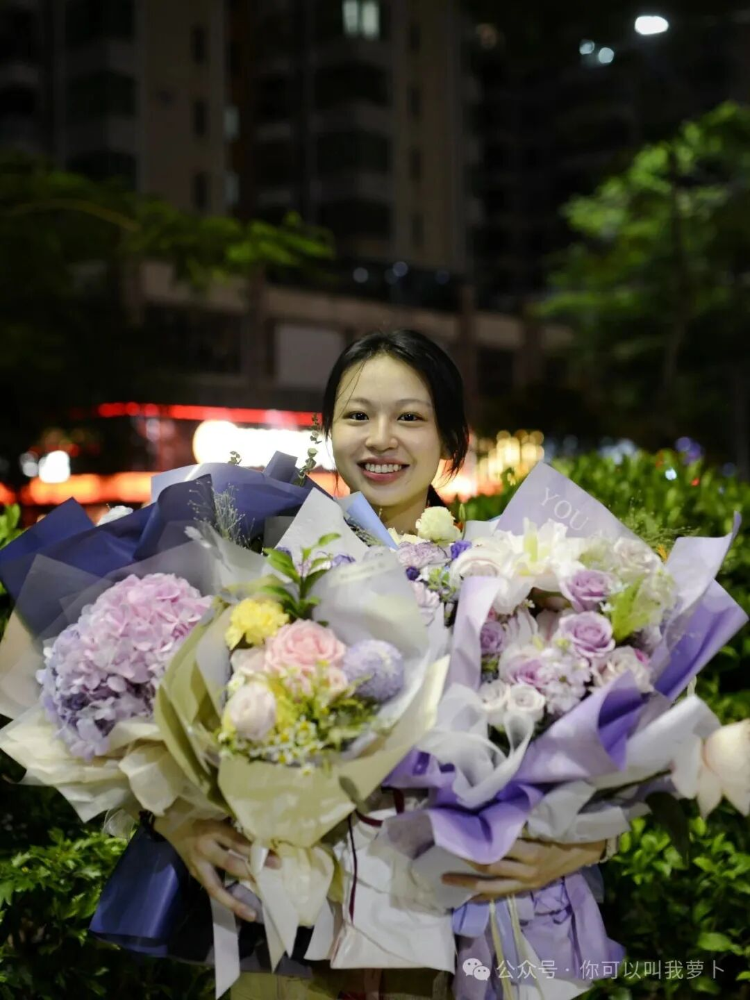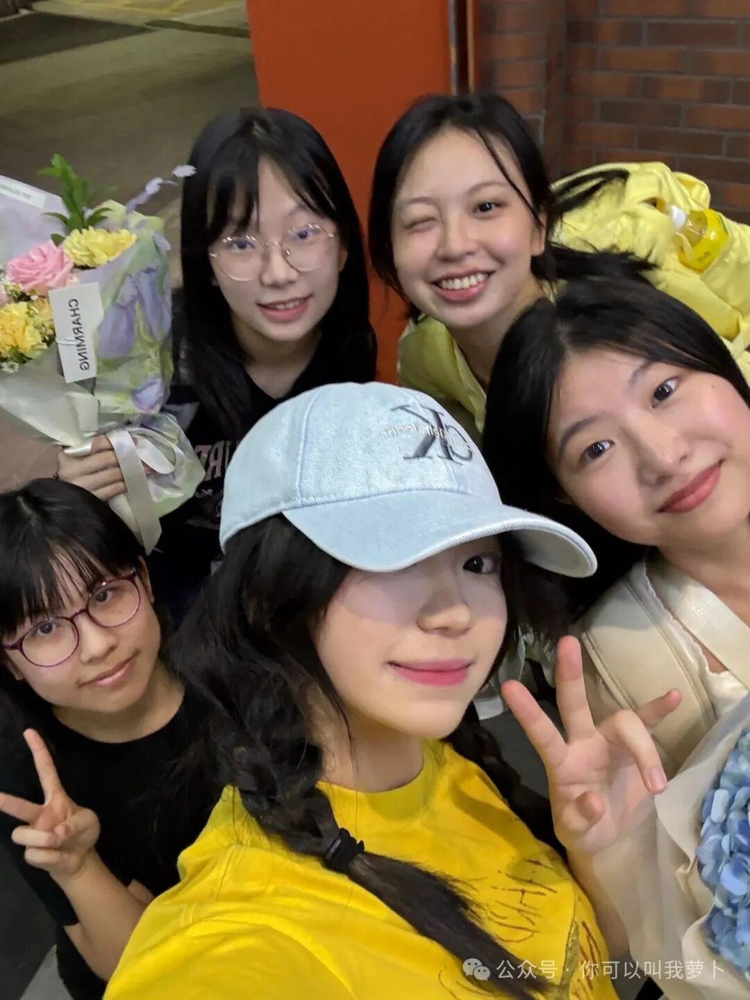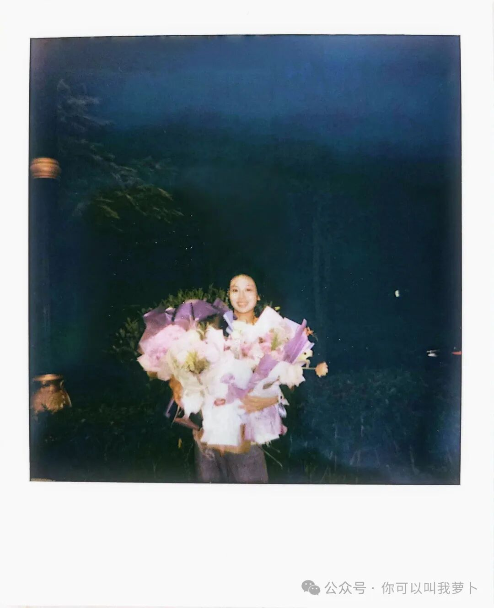烯橦赶着回沙溪，翊桐、铁子和曈妹也先回家了，于是我，肖梁，臻童，子瑶和子瑶妈妈，还有我爸一起去附近的食街吃了宵夜。因为我说“我知道现在很晚了，但我好亢奋啊！” “那就去嘛！” IDC五人全是火象或风向的后果🈶️。 我们找了家甜品店，坐下点了餐，聊得很开心。 其中我印象最深的是，子瑶妈妈说我很勇敢，说我们团队都好勇敢。后半句话我无法赞同到更赞同：一位从来没演过戏、三位从来没在剧场工作过的人，就这样毫不犹豫爽快地答应了我、压根没回头地走向那个孤零零站着的我，然后完美无疏漏地完成了四场的话剧演出。“勇敢”二字当之无愧。 但那前半句话呢，换作是以前，我肯定要否认的。从前我一直觉得我是一个极度不勇敢的人。甚至在我出国后，很多人说我自己一个人出国“很勇敢”，我也没明白“勇敢”在了哪里。我去游乐场向来只敢坐旋转木马，我也从来不敢看恐怖片，宿舍晚上讲鬼故事我也捂死耳朵坚决不听进去一个字。我还怕黑、怕冷、怕高、怕社死、怕在很多人的人群中讲话......我一直觉得自己很胆小。 但那天晚上在甜品店我说，做这个演出的过程中让我觉得，我很勇敢。 同样的话我在睡前熄了灯后和妈妈也说过。 我说大概在读初中的时候，我曾发过一条b站动态，说我很佩服那些一件事情做到底做到精做到心无旁骛的人，说到这，我还突然想起来，那条动态子瑶还点赞了。好家伙，这一切奇妙的发生都在被身边美好的人见证着。我说我觉得那种人是生活的勇者，我说我想成为那样的人。 但现在，且不说我会不会一件事做到头，我觉得已不重要，而我发现，我其实也是个勇敢的人。 子瑶妈妈说其实每个人都是在一些时候勇敢，在一些时候很害怕。她说别说让子瑶上台演戏了，就是站到台上去都难。但她打乒乓球的时候呢，又是叱咤风云大杀四方的同时谦逊有礼张弛有度了。 而我的勇敢呢，是别人所操心的担心的顾虑的事，都连进我脑子的门都没有。（没有脑门？？？hh 我在写本的时候就会想象演出的画面。画面里就会有观众朋友的出现。我会跟我妈说我觉得这个戏多大规模的剧场合适，一场可以坐多少人，然后我就可以卖多少钱的票......直到有一天母亲问我：“你哪来那么多观众啊？”的时候，我才突然间realize，噢对哦，观众可不会在空气中自然形成哦！ 但是呢，我根本没在意，我就跟母亲说，“怎么没有？！”然后跟她分析能来的有谁，什么渠道，怎么宣传，朋友圈怎么转发......但其实，我根本没在意！ 我完全没想“如果没有观众怎么办”“如果搞不成怎么办”“到底要从哪里拉观众好呢”“要是只有零零星星几个人怎么办”“要是冷场了怎么办”“要是观众不喜欢怎么办”“要是在台上演砸了怎么办”......我根本没在意！ 我只在意戏。我只是想写，然后写了，然后好好认真地写了，然后排了，好好认真地排了，然后演了，好好认真地演了。然后我一直相信，从未怀疑，我只解决眼前现有存在的问题，然后继续去写、去排、去演、去相信。 写到这，又想起我在演后谈里对一位也喜欢艺术的女生说，“你不用先想那么多，你就去做，就算遇到问题遇到漏洞也没关系，在过程中总会一件一件事地解决，解决不了的就要发生的就让它好好发生，不管好的坏的，你只管做你的，因为上天会保佑你的。” 我听到观众席里有人笑了，是，这最后一句话可能来的是有点突然。但我真这么觉得的。 在我招到十三位演员但只有一位是中山的但见面当天就觉得可以合作时，在我以为要面临是只演鱼刺还是用回心弦但却在最后一个晚上灵感爆发一夜写出姝途时，在我以为真的要找不到场地演不了了结果万谷给我回信息时，在我演出两天前晚上还在改剧本但最终改通了时，当我的搭档演出前一天早上还在屡次反复错词掉链子但演出一词没错时，当我的技术团队没人有过经验排练时间还被缩到半天结果演出零失误时，当我以为没观众了却接连收到二十人团、八人团一起来时，当我在演出前三天才找人画背景图还被拒却在咸鱼找到帮手时，当我以为我要用排练厅小孩上课的桌椅来演鱼刺但翻遍美团终于找到一对黑色折叠桌椅时，在我一己之力崩开被我锤塌的桌子时......怎么不能说，戏剧之神一次又一次深深地保佑了我。 而我，从未怀疑。在任何一个我好像要开始“多虑”的时刻，我都瞬间告诫自己：“享受这一切的从无到有。” 其他的，I don't care.
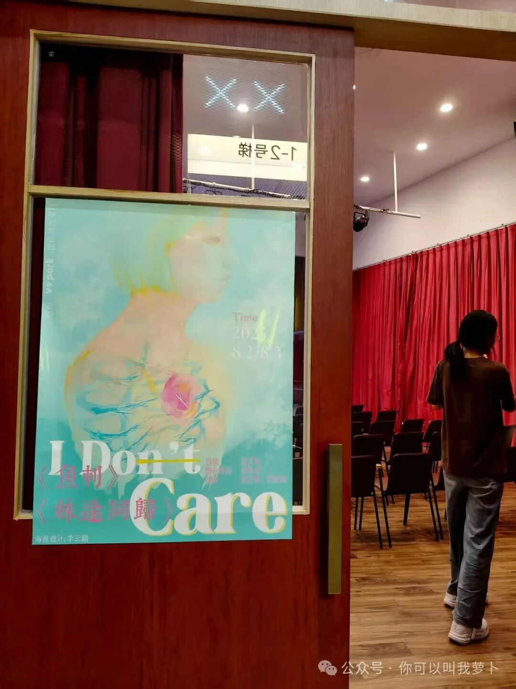(不过现在还是只敢坐旋转木马。）（哈哈哈哈。）
March 三月 2025年3月中，我参加了Belfry Theatre的戏剧创作workshop。 当时我们的其中一个任务是创作一对contrasting characters之间的故事。我的同伴被分到了cop and criminal，但他不想要这一对。于是我主动说，那我写这对吧，谁让我爸正好是个条子呢。 于是回到家我就发微信问我爸，“你职业生涯中有没有什么故事是你觉得很打动你的、或者你觉得很适合被写成戏的？” 然后他给我讲了《鱼刺》原型的故事。我被这个故事打动了，就如同大概20年前那天执勤的他一样。 我很急忙地依照这个故事的大体为workshop写了一稿，但因为篇幅太长我们当时的演出没有用这一段。 为期六天的工作坊结束了。然后我开始了《鱼刺》的创作。噢对，当时它还不叫“鱼刺”，第一版的文件名叫“2009年春 广东 中山 南朗”。电脑显示产出的时间是2025年4月1号。 April 四月 翻开微信聊天记录回溯到，4月3号我联系了老爸单位的一位女性同事。因为虽然爸爸讲述的真实故事是一个男孩和他的邻居奶奶，这个故事里的警察很显然也是个男的，但我从第一版开始写的就是一位女警、 一位女孩和奶奶的故事。因此我线上咨询了汲警官，问了她一些警察讯问工作中的细节、规则和她作为女性警察讯问嫌疑人时的真实感受。 其中她提到有两点我印象很深。一是我作为创作者的“上帝视角”来看，我总是以“挖出更多‘煽情桥段’”为导向，而真实的警察视角，是以“查清案情”为导向的；二是她说有些工作对象会因为发现是女警官而变得“更难对付”，因为觉得她们“好欺负”，也因此女警官在工作状态中大多数情况下必然是严肃、有力、雷厉风行，甚至有点“凶”的。尽管这不是她们的本性。
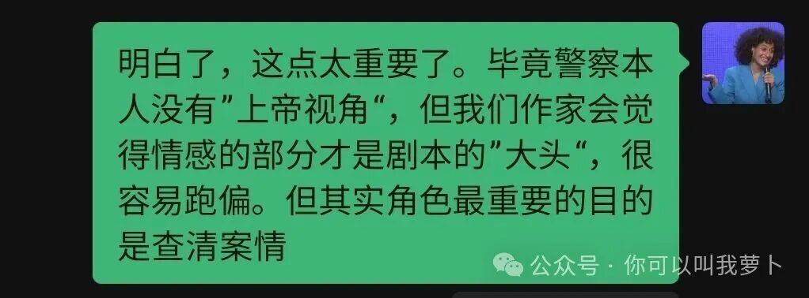回看我的第一个版本才发现，我初稿竟然真的写了“弹吉他”的情节，就是剧本结尾张美希望祁燕教她弹吉他，也借此表达她们之间的connection。对此我其实有点惊讶，一是因为我竟已完全忘却，二是我以为我只是在工作坊里有过这个灵感，但没有真的写下来。谁知道其实我写了。哈哈哈。
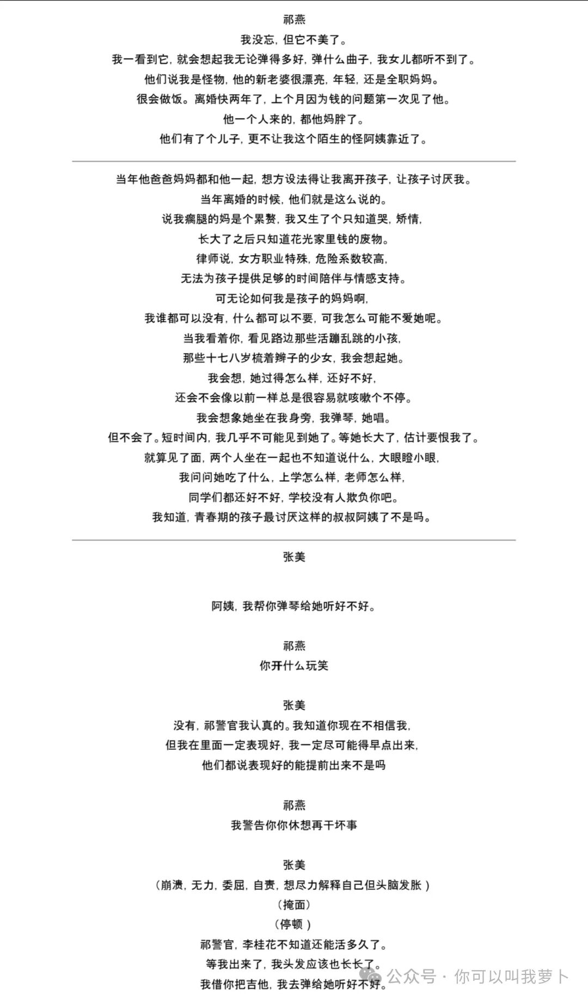初稿剧本节选（关于“弹吉他”） 自此，我开启了漫长但快乐、不知不觉却又好像转瞬即逝的创作生活： 4月11号，我第一次将我的初稿、第一改稿和第二改稿发给了我的剧作老师范老师看。收到了老师的反馈并进行了线上的交流。感觉和老师交流后最大的收获是：我坚定了我听从自己内心、做自己最忠诚的表达者的信心。
与范老师聊天记录节选丨滑动查看 大概是4月的某一天，妈妈给我发了一个线上心理咨询师直播间的视频，我看完后觉得可以改编成戏剧，因此有了写第二个戏的想法。但后面因为觉得这个视频里的亲子关系过于窒息，当时自己正阶段性处于一种思考疲劳的状态，不想让自己太想这些太消耗的东西，于是打算换个故事。 其实有想写一个独角戏的想法很久了。初稿在一年前就开篇过。还刷到b站一个喜欢的up主讲她的女同恋爱故事下面评论区一条“她不是传统意义上的好妻子但不意味着她就不是一个好妈妈啊”的评论，深感有趣和认同，遂有了写一个“形婚妈妈，女儿，和妈妈的女友”三人之间温暖故事的想法。但因为不够了解les群体和母亲身份，加上觉得三个角色还是太难找到演员了，遂弃之。 终于在有一天晚上躺在床上和妈妈语音通话时，发生了以下对话：
剧本《心弦》（当时的初稿叫“2025年家中”）开头节选 觉得这段对话很适合写成剧本，于是以此为开头，写了第二个剧本。讲的是一个高中生女孩子，周末回到家跟她妈妈聊天时吐露自己对喜欢的男生情窦初开的故事。母女俩借此讨论了喜欢什么样的人、哪怕喜欢一个人“也要过自己想过的夏天”，和哪怕妈妈担心“也不能让你一起站在我恐惧的阴影里”等小小话题。 May 五月 5月3号，我将写完的第二个剧本，“2025年家中”还有“鱼刺”当时的第四个改版“审讯室May 3rd”发给了范老师，并询问修改意见。 然后就这样写啊写，一稿又一稿。有在深夜灵感突发时熬夜写过，在下午放学后借着夕阳写过，在只有sub代课值班的课上摸鱼写过，在雨天的咖啡店里就着london fog写过...
被朋友圈记载的创作感受（和朋友们的陪伴） 5月29号，我加上了我小时候学表演的老师的微信。因为后来听说他们开了大的语言艺术机构，我去搜他们的公众号，看到他们的机构好像有小舞台。小舞台是刚好适合我们演出的场地，我们的戏不适合大剧院。老师说他们机构的场地太小了，尤其暑假排课很满，不一定有空拿大教室给我演出。但是老师说，帮我去问中山市文化馆的朋友，帮我找场地。文化馆好呀，那段时间里当我脑海中想象画面时，我代入的就是文化馆的场景。因为我小的时候在那儿演出过。还记得当时剧团里有个男孩，大我两三岁吧。同期我们在文化馆演剧团排的节目，而他却上演了他的个人专场脱口秀。我当时很羡慕他，记得很深。 June 六月 六月，离回家的日子近了。然而我还不确定我的演出到底是不是真的。 6月5号早晨，我在中转站等第二趟公交车时，回复前一天晚上朋友发来的信息。我说，我在犹豫摇摆或怀疑过几次后，又坚定了我想把这个戏做出来的其中一个原因是：我想做一件毫无意义的事。 “毫无意义”的意思是，我听到故事，得到灵感，因此想写，于是写了，于是演了，就这么简单。什么也不为，什么也不求。 因为我觉得有一件让我有点沮丧和压力大的事是，目前我生活中的任何一件事都有一个目的：学我讨厌的数学是为了考好大学，考好大学是为了能找到工作，找工作为了......可我就想做一件没有目的的事，比如演一出戏。 我告诉自己不去想能有多少观众，我说就算只有一个观众我也照样开演。就算没有观众，到点了我也照样开幕。因为我想要的，就是简简单单毫无目的地演一出戏。我想，如果这是往后人生中唯一一次可以“毫无意义”一把的机会，那就快去实现它吧！ 6月26号和6月30号，我接连收到了来自不同老师的回复，表示中山市文化馆用不了。市里各学校的剧场也无法外借。 6月28号，我从加拿大回国，落地香港。 July 七月 7月1号，我在小红书发布了一条寻找中山以及珠三角公益/低价演出场地合作的帖子，和一条招募合作女演员的帖子。 7月3号中午，结束工作面试后我去大信九毛九吃了碗面做中饭，坐下打开手机，发现小红书收到了一条私信，如左图。然后我也不知道为什么，在她表达完鼓励我表达完感动与感谢之后，我又主动聊了起来，问对面是不是做戏剧工作的，然后就聊到专业、就业、和选择。饭后下午去小榄看一个场地，租金小贵，而且小榄太远没有观众流。在从小榄回家的途中，我和对面就又聊到了右图：她毛遂自荐了！
然后我们加了微信。她叫烯橦。 7月4号，我去看了李老师语言艺术中心的场地。见到从幼儿园毕业就一直没见的李老师很开心。场地灯光条件不合适，但老师可以给我们用她的教室排练，真是太好太感谢了。 7月10号我中午从广州回来下午去看了葛老师表演机构的场地，老师说就是冲着我这么多年还在做戏剧的劲儿就想要帮我，我很感动。灯光条件有，但机构排课太多，不是很方便。但幸运的是，当天还有一位表演老师在场，说有认识的朋友，可以帮我联系广电在中山的一个剧场。 截止至7月15号，我一共在线上招到了13位报名的演员，非常惊喜。和几个看上去就应该不符合我需求的场地，稍有失落。 13位中，只有烯橦一位在中山。于是我先和她约了15号线下见面。在去之前，我都有些耐不住性子地说“我好希望就是你啊啊”，因为如果演员在广珠深等周边城市，通勤食宿真的会是a giant pain。甚至impossible。烯橦微信和我说她那几天都开始在b站跟练演员台词发声的时候我超感动。 13号我发试戏片段给她，我说不用完全背下来，但尽量熟悉。14号晚上她主动问我，“张美对她妈妈是什么感情？”，我才惊觉我竟然没发她人物小传！噢天呢这是多不称职的导演。和多么感人的演员。 15号下午，我们如期在李老师的排练厅见面。烯橦穿了一身白裙子，短发，戴眼镜。 面对第一次演戏的烯橦，我学着学校老师的样子假装专业地告诉她演戏就是放松、正常说话、演你自然的反应和你自己的理解。还有这是一个安全的环境，你可以放开演别担心。no judgement~ 按照我一开始的安排，我演张美她演祁燕，试了一遍，录了视频。对于她的祁燕，我觉得是有的。没有很惊喜，也没有失望，就觉得是有的。 她提出要试张美，于是我演了一遍祁燕。演毕，我更确信了她的祁燕是有的。不行，她的气质太正了，张美不太合适的。 两三遍后，我们大概达成了一致，她演祁燕我演张美。 准备试《心弦》了。那个妈妈和女儿的剧本。但却在打算开始演之前，她突然很标准地左手在下举起右手，问我“你有没有想过把心弦改成姐姐和妹妹之间的故事？” 哎？有意思。我喜欢。“嗯，你说。” 烯橦说，因为她是姐妹关系中的姐姐，而近些年在她和妹妹的相处中她发现妹妹会平静地说“我讨厌你”，which's something that she never thought of. 嗯？interesting。 关于那天她说她和她妹妹之间的感受与细节我记不太清也觉得我描述不准，但反正我喜欢这个点子。我终于不用再在别人问起“所以这个剧本的原型是你和你妈妈吗”的时候各种绕弯子地说“well...艺术来源于生活又高于生活”了。太好了！我喜欢演不是我真实生活的故事。而且作为一个独生子女，手足之情或许会是我一生都在好奇的东西。 加之母亲的角色的确太难掌握了。于是我们甚至没有试戏《心弦》的片段，就决定一切从头，写一个姐妹之间的故事。 啊，现在回想，实在是太疯狂了。现在回想感觉是一点也不realistic的决定我们却最终让它变成了reality。Wow, interesting。 但当时的我好像真的没想太多，没顾虑太多，就一心投入到新的剧本创作中了。甚至其实我原计划是7月25，26号这个周末演出，那就其实距离我们15号这第一次的见面只剩10天了。CRAZY。 见面除了聊角色和剧本，同时也聊了场地。我们一致决定将场地定在中山。 16号白天在排练室聊了一整天新剧本，晚上在跑同学生日会和家庭聚会的间隙在小红书对场地进行尽可能海量的搜索和私信。其中就有万谷。 有天晚上吃饭跟父亲聊起《鱼刺》，又得到了新的想法，觉得还能改，要改。当时我负责着找场地、构思新剧、改鱼刺三个任务。17号终于又发送了一版“鱼刺.7.13全新改稿”。 7月18号，她给我发了她写的新剧本的初稿，叫“新剧目”。我打开看了，是一些不成系统的生活小片段。姐妹俩的对话中，也没有情节或核心。于是我们在排练室待了一整天，从早上十点到下午五六点。 我和她先把姐妹二人各自的角色立住，找到二人最大的特点、不同之处和心里最大的感情缺口，一直以来的思维模式及其成因。然后由于我们之前的剧本故事发生在厨房里，因此我们反复围绕厨房这个场景建构对话。然后我让她回家接着写。 在烯橦创作新剧本的这些日子里，我除了讨论交流还在联系场地。有私营租凭的，政府公益的，和各种培训机构。私营的要么太贵要么太远（在广州），政府的一般不对私人开放而且联络起来十分缓慢艰难，培训机构排课太满过于busy。由于还没找到场地，我们的演出延期到了8月2号3号。 18号晚，场地万谷 VV Park终于加上我微信了。并且很爽快地说第二天白天就能现场面谈，我秒应了。 19号早晨11点，我和烯橦约在万古碰面。看了场地，舞台大小合适，观众席空间合适，唯独灯光条件欠佳。一排面光距离舞台太远，正居观众席上方，导致舞台前沿和观众席前沿非常光亮，场馆无法做到黑暗。这原先是个做脱口秀的场地。也没有左右两侧的固定点单色筒灯，导致原先对《鱼刺》的左右明暗设计没法用，只有舞台中心一个稍大的圆形射灯，光是把两个人塞进去就够呛了。那时明明姝途的剧本都完全没出来，我竟然有些笃定地觉得转场的灯光够用用。舞台旁还有一个对着商场里面的大窗子，也给剧场内部带来了过多的亮度。我拍了照，打算拿回家再细想。至于价格，杨先生两次问我我们这边的想法。买东西从不砍价的我，有些许紧张。我甚至当时之前心里没有预想好，只是像闲聊一样地跟烯橦聊过，可是也没定下个数，还好当时她也醒目地在我旁边直接拿出计算器算来给我瞄了一眼，于是我大概是临场地报了个比我们预算内再低一点点的数。杨先生说去和领导商量。 当时排的schedule：
从万谷离开，烯橦和我一起到我家写剧本。我收到了烯橦的“新剧本2”。和珍贵的宝丽来合照。
19号晚上，杨先生给了我们关于价钱的回复，我说好，但出于对灯光条件的考虑，我得再想想。 20号，出剧本，聊场地。烯橦问我是调灯光还是找别的。我说等等工人文化宫和广电那边的回复吧。工人文化宫这个也是巧，是我在一个家庭饭局上，一开始还因为白天忙演出的事情累到抬不起头，结果一听有人有文化宫的人脉立即热情四射绕过大半个桌子去敬茶，给聊来的。毕竟都托人问了，不等人家回复就直接拒绝也不好。 21号，文化宫给了我们答复。过高的租金直接让我们确定了和万谷合作的想法。也意味着我们要为灯光找到解决方案。还有那个大玻璃窗子。我在小红书和剧友微信群都发了讯息询问解决方案，预想是调节灯光角度。 22号早上，我联系了万谷杨先生，表达了我们的顾虑和预想的解决方案。他说得额外请人来调，我说好，直接约了当天下午4点到剧场。 到了现场，杨先生说角度已经帮我们调过了。我看了看，提出直接将一排射灯的左右两边各关掉两个，只留下一个centre射灯和分别一对白色和蓝色场灯。场馆是稍微暗了些，舞台上嘛，也不觉得暗，人脸倒是看得很清楚。还是稍不满意，又麻烦师傅把角度调了调。
看灯光是个漫长的过程。尤其我不将就。意思是我要实现到我已给定条件下的我心中的最好效果。所以左调右调，每调一下，就盯着看好久，一动也不动，什么也不说。脑子里倒是在高速运转。那一刻终于理解了以前我在台上，对光的时候控制台旁的老师为什么要我一句台词无尽循环n遍不停了。 然后我说，可以，我觉得可以。我觉得可以用。我说那就这里咯？跟杨先生确认了一些使用细节，约好晚上回去拟合同，然后我们走了。然后我跳了起来，我走在最前面，回过头倒着走看着烯橦和妈妈，我说“谁能懂我现在的心情！”好似如释重负，好似紧绷的弦终于松弛了一下，弹奏出一个轻快的音符，宣告着演出的到来。好像直到那一刻我才知道，演出是真的。是真的。刚在茶店坐下，就已激动地给几个好友发送了观演邀请。叹茶时突然意识到，想回去摆一摆椅子，看看坐几个观众好。于是又微信杨先生，麻烦工作人员帮我们开门进去。最终确定是一场52个。 场地确认了，就也发布了预约小程序的内测版。找几个要来看的朋友点进去预约试用一下。
22号调灯与签合同当天 7月23号，我们定下来了一个剧本，叫“三菜一汤”，因为故事依旧发生在厨房，然后姐妹俩一共做了三菜一汤。我原打算用烯橦写这个剧本，然后稍作修改应该就好。于是我自己了一个腾讯文档，又把我在里面修改的部分share给烯橦。她又把我修改的部分每句话截出来，有针对性地提出意见。 我改了一整天，直到晚上11点30，我俩还在聊剧本。我俩对于我修改的“可我不想小红书变成我的姐姐”这句话有不同意见，烯橦说能不能改成“小红书是小红书，你是你”。她说这样更加强调重点在姐姐身上。我想了想，觉得我写的原话可能想表达一种”replace“的现象，就是很多社会身份角色都正在被手机互联网社交媒体所取代。烯橦说这样也没问题，主题鲜明，但她觉得她的侧重点在于： 在你这里, 阻碍任何人交流的因素来自外界, 在我这里, 这个因素来自个人。就是外界的影响因子一直在改变, 以前有互联网, 现在有人工智能, 但是我的"妹妹"从来 不认为"小红书会变成姐姐", 她在意的是姐姐关不关心自己；就是不管外界如何风云变化，你不关心我就是不关心我，我不看外界的理由，不关心外界有多强大 ； 她说：“这个东西它不好写。我其实很想写出《边城》那样的剧本，我的意思是, 边城这个故事给我的感觉就 大家都没错, 但是悲剧发生了。但是翠翠跟两兄弟坐下来好好聊聊该多好。想写的剧本可能是, 爸爸妈妈没错, 姐姐没错, ai、小红书也没错,大家都没错,但是我就想要姐姐坐下来好好陪我聊聊。我的诉求就指向姐姐" 对此我连发6个”可以“加三个”有意思”和三个“爱住”表达我对这个概念的喜爱。哪怕烯橦再三表达，这个可能很难写，可以先按照原来的写，我依旧二话不说就多选了我们之间的对话合并发送到工作群码住作为我们接下来创作的方向明灯。（一个只有我和她和她小号的工作群，专门用来发送和置顶重要项目信息） 然后我们聊到剧本创作和戏剧表演上我的一些心得体会，说晚安时已是次日凌晨2点20。 24号早晨，我和烯橦说“我们有没有可能打破现在一切已有的东西”。感觉好像把自己写进了一个死胡同里，怎么写也写不出真正好看的打动人的东西。来来去去都不满意。于是想冲破已有的框架。毕竟什么都没有，就也意味着什么都可以有。 又聊了好一会儿，白天各种磨，各种试，还偶尔走神摸鱼犯懒，一直到晚上，也没见写出来什么新的东西。我和烯橦说，再没进展，明天就先把鱼刺排了。然后还要决定是继续做这个新戏，还是直接用回心弦的剧本。（现在回看怪有意思的，当时说的还不是“选择直接演三菜一汤还是心弦”而是“继续推进这个新戏”，感觉潜意识里其实是一点要放弃的心都没有呢哈哈哈）11点过，都熄灯躺下了，脑子里想到一个姐妹俩坐在车里的画面，随即立刻爬起身，开灯下床够到桌上的电脑然后靠回床板上，马上开机开文档，名字就叫“途”。 啥也没想，没顾几点，没管结局，没看聊天记录，就一个人kua kua写。想到啥就一个劲儿地往下写。印象中写到次日两点。实在熬不下了，微信留下一句“写了12页新剧本，目前思路流畅，明天接着写”，然后睡了。 25号早，在排练厅。我先到，到了我就又开始一个人kua kua写。直到烯橦来，也没多寒暄，只是把写好的第一部分share给了她，让她看看字句之间有没有可以修改的。我继续写后面。两个人几乎没怎么说话。 我用了“殊途同归”这个名字。烯橦提议将“殊”改成“姝”。我说好。 写完了，很兴奋。我记得我们最终使用的版本是“姝途同归2.0”。一夜一天。在排练室旁边的商圈吃晚饭，做宣发，在星巴克坐到浑身发冷，移步到奈雪室外又被二手烟赶跑，但对出首篇宣发的兴奋丝毫不减。烯橦这个学新闻的呢，是很讲究语法的。而我这个水瓶座呢，又懒得去抠在我看来很细枝末节的东西。于是就这个姝途同归的剧情梗概，我在她座位旁边站着蹲着头脑风暴激情提案，都要等她淡定思索再无情驳回。好像写剧本都没写简介那么难一样。来来去去，最终是让这个操着错一处扣二百习惯的人点了点头。 原以为当天晚上20点能出宣发的，但我殊不知编排公众号的复杂，只好耐心等到次日再发。 那一天晚上，我是感恩的。感恩上天再一次救我，感恩天无绝人之路。 按时间顺序实在是穿插不下海报设计的过程了，于是来专门讲一下： 大概在五六月份我写剧本的时候，就有把写好的初稿发给云翮看，让她提提意见。当时就表达了可能想麻烦她绘制海报的想法，她欣然同意。 7月16号，我们建了海报设计群，里面是我，云翮，和烯橦三个人。当时第二个戏的稿子还没出，导致无法向设计师提供明确的绘图方向与概念。演出场地也还没定，所以基本信息的细节也无法落实设计。对此当时我很是抱歉，因为我深知设计需要时间。 直到23号，我才在群里说，我们终于终于定好场地了！直接发送了鱼刺的剧本，和当时“三菜一汤”的一些概念。还有一个我在当时招募演员时给报名的演员们发的我的创作思路，里面写了我对这个演出的理解和我当时想表达的一点东西。还有场地方给的商场logo。 "I Don't Care"这个划线设计是我很早想出来的。当时觉得，"I Do Care"有些苍白（？）直接，也不常有人直接这样表达。我想表达“I Don't Care”的反义。我不要“don't care”。当时有些担心这个表达有点抽象，结果仅需0秒就得到了云翮的喜爱。开心。 我们剧组全是夜猫子。经常大半夜凌晨跟云翮沟通海报的构思，然后早上十点多十一点在排练室收到画稿。第一稿太靓太酷，我们一致认为我们戏里的角色是很普通的，我不想她是“漂亮”的。第二稿我们惊奇地发现，那个女孩跟烯橦长得好像！哪怕她俩连照片也没见过。还有这个女孩的下巴后缩，也跟我一样。 25号我们终于发给云翮《姝途同归》的终稿，她也很喜欢“姝途同归”这个名字。25号改了一稿，加了心脏和里面的鱼刺，还没加文字呢我们就很着急地把她放到我们公众号封面图发了出去。真是太好看了。凌晨两点多我都熄灯了，睡不着又打开手机，我想我会永远记得在黑暗里被最终排版好的绚丽丰富又有特色有风格的海报惊艳的瞬间。真是太好看了。
7月26号，中午12点，公众号推文终于发出了。引来朋友圈一众转发，搞得我俩各种回复，有点被distracted了。下午又搞音乐配乐，看看预约小程序，截图发小红书，还找了可瀚帮我们绘制《姝途同归》里风景和姐妹的手绘图。我是白天跟她聊的，她说晚上回到家有空了就给我画。没想到当天晚上就拿到了我想要的绘制图视频，还特别精美特别可爱，画风出奇地符合我们戏的温度。特别喜欢。只做了简单的微调，把背景色彩加浓郁了一点，就超级开心超级感恩地收下了。当时就想夸，可瀚这个之前就知道负责可爱的人，现在也是超级得力能干能挑大梁了呢！
白天忙各种杂事，被宣发搞得心神不宁，时不时地去看下预约小程序里的报名人数。烯橦又要字斟句酌地改下姝途的台词，也是好的。她是姐姐，她总归比我感受得更多更真切。但结果就是排练本身不得推进。没有办法，也只能是到点回家，再吃不下也得要把饭吃了。 晚上一点想睡觉的心也没有。一是觉得反正这么些天也熬习惯了，二是怕躺下了睡不着还不如醒着干活。于是很平静地没多想地又打开电脑，想完成白天没做完的背景音乐。 但由于我白天打开文件没做完也没保存没关闭，没处置妥当就这样挂着机带回了家，再凌晨打开时已显示文件全部脱机，废了。 大半夜的，虽说还保持清醒，但也的确精力不多了，只好迫不得已找了身边爱好做音乐的朋友。本来是真不想麻烦的，一个人办事惯了，总觉得自己办最省事。 但是出奇的，凌晨11点多他竟然在线还秒回。我问了，我说把这几个音频合成在一起，做一个一共大概8-10分钟的音频，我给一个角色独白当bgm用，衔接处自然过渡就好。他欣然答应。 于是我把总共四个网上下载的音乐片段发给他，开始跟他说哪个音乐截取到哪里。但因为白天的制作记录全没了，我也根本没耐心再从头到尾听一遍找那个节点，于是直接跟他说，你看着办吧，在任何你觉得奇怪/要剪/不搭/丝滑/合适/合理/有办法/有想法/卡顿/适配的地方截就好。只要最后是8-10分钟就行。 尤其搞笑的是，他一开始问我要不要做这个效果那个处理，我：我根本不知道你说的这个效果是啥。甚至他那个音乐处理软件看不到音频的时间进度条，所以我一开始说的到几分几秒他也看不到。他发小片段过来跟我说他用了啥啥处理，我都听不出区别，只知道感觉好像有点大声/小声。 俩人就这样从26号11点多开搞，搞到27号凌晨我实在熬不住了。我当时都在打腹稿想着怎么委婉表达我实在是要下线了的意思，结果他跟我说他这个软件没有保存，打开了就一定要做完。想睡觉的信息更是发不出去了，不能我托人办事我先去睡了吧！就这样耗着，先洗漱刷牙，终于到一切完事就差闭眼了，我一看消息，他做完了！老天奶，就是这么得巧。 根本连听一遍的精力都没有，直接在耗尽最后一点体力来了一波华丽的感谢语情绪价值拉满之后倒头就睡。 27号早上开工，是顶着巨大压力的。因为前一天被各种杂事拖沓的，一点戏也没排出来。早上去别处排练完一个短片，饭也没吃直接转场到排练厅。烯橦觉得《鱼刺》里警官的角色还是很难把握，于是我们决定先排《姝途同归》。下午1点到3点30，终于让姝途见了形。感天动地。详见视频：
排完马上下午4点直接和烯橦一起跟我爸去了（现已不使用的）派出所考察真实的审讯室环境。因为演一出戏而进了真的“局子”的经历也是有意思。亲眼目睹的感受还是和想象无法相提并论，看到钢铁铸就的带着脚铐手铐枷锁的椅子时还是惊讶了。先是我坐进了那个椅子里，手脚腿都锁上了，丝毫动弹不得，就连胳膊移动的范围都感觉不出两个厘米。然后烯橦提议她去试试。我说那不如让父亲当场“审讯”我们一次吧。就拿张美的故事当前提背景，场景用真实的场景。 就这样开始了。我爸也是瞬间入戏，职业素养拉满。烯橦坐在那，因为我反应更快也更了解张美，于是我在感觉对话有点推进不下去的时候会在旁边以张美的身份“顶撞”父亲，试图探出更多有可能的真实对话，然后运用成剧本台词。父亲审讯是不赖的，没过多久，我竟在好几个瞬间感到防线崩塌，想直接脱口招供了。不得不佩服。 可惜没有提前准备好，进去时也不给带手机，出来时明明两人都觉得感触颇深却也只能仅凭着些许记忆尽力去复盘。觉得这样不够。于是当即又马上约父亲第二天下午再来排练厅，随性尽情地演（审）一次！ 当天晚上与朋友吃完饭回到家已过了十一点，但又顺着熬惯夜了的生物钟和顶着影响睡眠的压力，直接二话不说开始做场刊设计稿。烯橦也恰巧在线，于是我快做好时想起来跟她说有朋友帮忙联系了中山电视台来采访演出的事，之后给她看了场刊稿。内页试着换了好几个颜色，最终还是定的最初那个。选的是海报上心脏的粉色。一开始还怕烯橦觉得粉色要么太艳要么太幼稚，没想到她好像也直接一秒get到我心脏的设计。做完睡下又已是28号凌晨两点。睡前发现首场预约竟快要售罄，心头带着一丝幸福睡去。 28号早晨起来，出门前坐在茶几前倒水，竟然把水倒出了杯子也没及时察觉，水溢出来了不少才发现，自己的精神已全然沉浸在演出这事里，又同时背负着可能比我认知到的还要多的压力。 来到排练厅，让烯橦先再把台词背熟一下找找感觉，我自己把朋友前天帮我做的《鱼刺》里张美的大段独白的bgm放出来合了一遍，竟然完！美！贴！合！音乐的每一个拐点都和剧情台词的转折配合得恰到好处！当时我想过要不要把独白台词发给他，但我还是想保留他作为观众观演时的惊喜体验，于是没发，任由他随意发挥。结果四段音频，每一段和每段前后的衔接都是出神入化行云流水生动又应景，甚至演出后我小红书帖子的评论区还有人问我要歌单。这时候就很难不骄傲地说是我朋友为我专门定制的了~ 你说这世界上有没有奇迹嘛，好像是有的。 烯橦自己研究完稿子，突然跟我说，她好像知道自己为什么无法进入祁燕了，她说： “我不会因为她对陈阿娣很好就选择理解她、原谅她，因为她就是吸毒了。那天排练的压力很大，我老是忘词和不入戏，就开始思考如何代入到张美身上。我意识到，我和张美也有相似的地方，我认为我犯过天大的错误，于是我否定自己；张美也犯了很严重的错误，所以我否定她。可是万一张美身上有好的点呢？这很可怕，这意味着我也可能有好的点。但是不行，我不允许自己拥抱那个不完美的自己，我要为那些错误惩罚自己。可是，我希望得到自己和外界的肯定。认可张美，认可自己，会让我崩溃，我把自己投射到了张美身上。表演是件可怕的事情，你会在角色身上照见自己、剖开自己，然后一步步打开心结，进入没有包袱的戏剧空间。” 我和她说，那演好祁燕的第一步，就是先接纳自己身体里那个“张美”。 这一点我印象很深，在演出后的演后谈也两次提及。让我又一次意识到戏剧对于一个从未表演过的人可以产生的巨大力量。 下午4点，父亲如约而至。没多寒暄，就直接开始了审讯。三个人都好尽职尽责，我瞬间变成了不说话的张美同时打开手机录音，父亲瞬间变成了工作中的警察，烯橦做的记录更是详尽又整齐。她还又后期整理成电子笔记文档方便我们查阅（还在开头放了一个可爱的鱼的卡通贴纸）。我太入戏了，父亲的眼神更是直逼人心，我却毫不胆怯，任由张美在我身体里横冲直撞，我强硬地对上父亲尖锐的眼神，我挑衅，我嘶吼，我崩溃得止不住地流泪，父亲也没有一秒钟出戏过，只是步步紧逼。我心脏疼。那晚还有家庭饭局，饭桌上我几次离场，躲到洗手间缓一阵才出来。吃完饭回家路上我还发信息给烯橦说，我头都是晕的。那估计是那段时间我唯一没有熬夜的夜晚。因为真的怕，怕出事。 但结果是我们得到了许多好点子。譬如当时父亲自己说“毕竟在你眼里我们都一样嘛，我虽然不是下午打你那个人，但我想我也代表了我们大部分吧。”我听到后直接就在心里想到，此时张美可以接一句“不，你不一样，你是除了陈阿娣之外唯一一个会来拍我背的人。”我赶忙掏出手机记下，情绪却一点没出戏。开头的“我不该在这里遇见你的”也是。此后就几乎原话未变地作了台词。 29号，周二，计划表上写的是“鱼刺全搞定”。现在回想，那大概是，早上我先到排练室，看着昨天烯橦做的笔记和她写的修改稿，我再来最终把稿子改一遍。 上午我发信息问杨先生，可否周四去编排灯光，周五就可以早上教我的灯光师们，下午带灯光大联排。都已经和团队通知好了。结果对面回复说要到周五下午场地才能给我们用。于是无论多无奈多焦虑多崩溃，只能把计划马上修改成，周五下午编排+教学，晚上大联排。然后相信it's gonna work. 继续改本。中午1点吃完午饭，有了“鱼刺7.29"。然后中午2点，两个人分开，专门用一个小时各自把自己修改后的词背熟然后开始排练。这一次，我边演边记录烯橦的acting notes，最后有二十多条，我从头到尾把每一处跟她详细解释了，她当时演的是什么样，为什么这样欠佳，我觉得怎样演会更好，为什么。然后我演一遍，让她看，感受，完了她再演一遍，感受。 说到最后，感觉两个人都状态不好了。算了没事，先去吃饭吧。我也理解，被人一直说自己这么多的问题，应该换我我也不好受吧。不过后来我发现了，这个人就是超级需要能量补充，吃过饭或者睡过觉之后状态总是最好的。吃完饭烯橦开车跟我回我家，继续面对面排。 狭小的房间里俩人搬了塑胶板凳面对面坐，用上了中午买了却还一直没用的咸鱼饭，第一次带道具试了一遍吃饭咳嗽的戏。或许是面对面她能看到我眼神的缘故，情感人物都比下午呈现得好很多，一遍下来，从头到尾，我惊喜不已。激动地跟她说，就这样演！如果演出演成这样，我已经是满意的。我和她说，看吧，这分明就不是你能力之外的事，你是可以做到的，你是具备这个能力的，只要把它发挥出来就好了！ 本来准备再演一遍的，眼看时间不太够了，我又深知她是无法低能量时硬顶的，于是专门把吃饭卡鱼刺的上下场的节奏和调度顺了一遍，理顺了，就算结束了今天的排练。 从房间出来看到妈妈白天去试印的大海报易拉宝，除了尺寸不太对之外，我们才惊奇地发现大标题“I Don‘t Care”中间的“ ‘ ”撇号是反的，马上在海报设计群里cue云翮秒改了。我们都觉得搞笑，尤其是烯橦，“嗯...我怎么会没发现呢？？” 30号，早上我们排练，下午叫妈妈来看一下，从鱼刺到姝途同归，像一个小联排一样。鱼刺我们还是面对面演的，录了视频。演完，妈妈看得泪流满面，只边擦眼泪边脱口说了一句：“太精彩了。”大概是张美还没从我身体里跳出去，我蹦起来大喊还讲了粗口说“我这么多天就等这么一句了！”呼......有那么多次，小心翼翼地问演出效果，哪怕心里做好了准备，听到只有六七十分的时候还是不免失落，和自己较劲。我决不可能带着一个明知只是及格的作品上台。那会儿我没多说什么，心里其实暗自下定决心要拿至少九十分往上。一个什么也没多说的“太精彩了”已是一记足够的强心剂。我让妈妈多余的感受先不要说，节省时间先把姝途同归演了。演完最后再一起说。 其实现在回想，当时有没有演姝途同归都忘了，因为就记得当时说了好多话，搞得又冲掉了好多时间，就提议先去吃饭。至于这个“先去”是先于演姝途还是先于提意见，我也不记得了。就记得吃的排练室楼下的简餐馆，吃饭时妈妈先说《姝途同归》，说每个场景的切换，还是要有背景图好一点，不然观众理解有难度。我说那行吧，那肯定要找人统一画。可瀚在青海玩，但是她都没直接回绝我，而是说如果实在没找到人，她可以试试。云翮已在德国旅游。我又找了另一个会美术的初中同学，她先是答应了，又说太久没画，婉拒了。然后我手机直接没电了。画背景板的事就此卡住。 然后说到《鱼刺》，母亲说觉得剧本结构上有问题，有些地方还不是很顺。原话是什么我已忘了，就记得当时一句话就把我干沉默了。我千算万算，知道自己台词不好，眼神可能不够好，调度舞美配乐什么我都准备好整改了，也没想到她说的是剧本不够好。 我沉默了。那或许是我人生中在人面前经历过最长时间的一次沉默。我一个那么怕冷场总是没话找话的人，坐在那什么也说不出来，不知道说什么。可能有十几分钟，二十分钟，半小时？我坐着什么也没说，我捂着自己的脸，发愣。后面妈妈和烯橦开始在我耳边说一些建议的话，我还是发愣，大脑一片空白。大后天就要正式演出了，烯橦到现在每次排练都还在错词，而且状态只能挂一遍，一旦来第二遍就会大走样。要在这样的情况下改剧本吗？可是我没法带着一个明明已知不够好的剧本上台。我做不到。我要改，得改，可是怎么改？妈妈也是不知道的，她只知道她的感受，不够好就是不够好，可是怎样改得更好这件事只有我有可能完成。 我毫无顾忌地挠头，我打开就快要没电的电脑，拉出剧本一遍一遍地看，烯橦让我再看看她之前的改版吧，我又拉出来，耐着性子从头读到尾。我又新建一个文档，在几个文档之间反复跳跃，反复比对，前后调换，试图在本就排列得严丝合缝的剧本里找到一线出口。 到人家饭店打烊我都没说话，直接转场星巴克。又是星巴克，但这次不像上次刚写完姝途出宣发那次激动兴奋，只有继续的沉寂和高压。必须是今晚，必须写出来。我知道我态度很差，我对谁说话脸上都没了笑容。写到星巴克也打烊，那应该是十点，接着到车里继续写。打着一点昏暗的车灯，我说好了，发给烯橦一份，“鱼刺 730"，我说妈妈你听着，我俩把剧本从头到尾读一遍，看你觉得行不行。 我好想好想演一个状态饱满的张美啊。因为我想我说话的语音语调、情感状态，也会直接影响一个剧本的表现效果。我真的想竭尽一切办法试图让这个剧本听上去更好一些。可我连音量都提不到一般那么响亮了，我无力地任由疲劳席卷我的身体，用最后一点剩余的空间把这个剧本装进我的身体里。张美，来吧。 这一次，一定要是这一次，只能是这一次，必须是这一次。直到全文念毕，母亲说好，顺了，全都顺了，这次很顺了。呼......啊！我就知道的，没有我解决不了的问题，就没有我办不到的事！当时我的反应记不清了，但依我对自己的了解，那时我一定是这样为自己欢呼的。 好了，剧本解决了，那就该解决背景画了。烯橦说你去咸鱼找代画。果然，还是大学生有办法。 顺了，终于顺了。终于可以回家了。回家路上我一定很疲惫了，但脑子里一定还在想着演出的各种事，也因此跟母亲闹了别扭，因为我说“我知道”三个字时态度不好。我知道我态度不好，可我太累了，事情多到我连用一秒去跟母亲闹别扭都没空，上楼路上继续想演出。场刊封底“主创的话”栏目我还一直没写呢。一回到家就把校裤自己剪了，叫母亲过来帮忙拽着，以为借此矛盾缓和了，结果拍“定妆照”让她再拍一张时又把人气了。
美 の ootd（配人字拖） 手机充上电，就开始联系咸鱼代画。边充电边跟店家交涉，当晚就定下来第二天一天完成所有背景图画稿的事。心又定了一点。 11点多，还是没睡，打开电脑写场刊。烯橦发信息来问我那个大窗子的窗帘的事，多谢烯橦妈妈提供了免费的大窗帘布，但苦苦寻找支架未果。打电话给我爸，他搞摄影的（以前），最近还在搞装修，想着说不定他会知道一些器材店。先是没接，然后又打过来，他直接问我需要他做什么，我把情况说了，他说好的他负责，这事交给他搞定，让我不用管了。还说原来其实他有个朋友跟我现在租的场地是朋友，有任何事需要帮忙，也可以直接和他们说。挂了电话，我哭了。我不知道。当时我满脑子都是“我不知道”，“我不知道”，我无措地拉开妈妈房间的门，蹲在地上埋头哭。我妈下床蹲在我旁边，问我怎么了，是不是我爸又说我了。我摇摇头，什么也说不出来。哭到鼻涕止不住了，自己站起来去外面拿纸巾，拿完纸巾又径直走回书房坐到电脑前面。母亲跟着进来，坐到我旁边问我怎么了，要不要先睡觉，还是要接着工作？还好她没直接劝我去睡觉，不然我真要气了，在好累好累但事情好多的时候，我真的需要一个鼎力支持我疯狂工作的人。我要的不是睡觉。是把未竟的事一件件解决，然后可能是一个抱抱。但母亲没抱我，母亲说哭没用，这样只会消耗你身体的能量，对你第二天演戏没好处。要么就静下来把手头工作做了。 我其实没想到向来感性的妈妈那一刻如此冷静。但我深知不能放任情绪在我身体里作祟，我深知母亲说的话有多对，但我还是忍不住，我说了一句，我说“我不知道为什么大家都这样帮我”，我什么也没有，身边谁也不是和我一样的戏剧狂热家，我搞演出没有任何报酬，为什么大家都这样主动热情不问回报地帮我。我好怕，我好怕做不好，我怕辜负别人，怕不够能力回报，怕无以回报。 害怕这些没有用，母亲说。她冷静到我觉得有些诧异。我说那句话的时候，是带着对安慰的寻求的，但我没有得到。我知道，母亲也不是情绪价值永动机，她也会累，会变得刺耳，更何况我还刚惹了她生气。我没有生气，没有伤心，而是竭力止住眼泪，我知道她说的是对的。我让母亲就坐在旁边陪着我，什么也没说，开始真的往场刊上敲字。开始一句话一句话地写。写完了，她也没有再打断我做任何建议与修正，我说可以吗，她说可以。我写完了，导出发给烯橦，然后睡了，母亲陪在我身边。 31号照常醒来，照常开干。窗帘支架那边烯橦同学推荐了个摄影器材店正好有我们需要的器材，让父亲去取就好了。姝途的背景板手绘图也在一天内收齐八张。 因为昨晚新改了剧本，我们决定要找一位男生为《鱼刺》里祁燕与前夫的对话配音。我都没发信息打招呼问人家在不在方不方便直接一个电话打到贵阳，我也不知道为什么， 当时就觉得他可以，他有，身边那么多认识的男性，偏偏选他一个未曾谋面但听过声音的要好网友。我的直觉很令我骄傲的，他一开口我妈就觉得有那味儿了！不仅一点也不像小孩子的声音，够成熟之外还听着就有点“渣”，他说那几句台词，说得就像那种过去结婚生孩子早还很年轻不懂事的妈宝男。就这样烯橦和他在电话两端完成了录音。还记得第一场听到他说“离婚吧，都不知道明天能不能活着回来呢”的时候，观众席里有人react，我能感知到，被他的台词冷血到发出感叹了。 印象中这天没什么惊天动地的大事，那应该就是把鱼刺和姝途都排了一遍，看到手机相册和微信聊天记录里这天全是标记的哪一处烯橦容易忘词的截图和哪里表演可以怎样修改的笔记。 August 八月 8月1号，演出前夕。我们团队五人正式集结，早上9点30在排练室。插叙一下：7月23号我微信找的肖梁，她先确定了负责灯光。肖梁之后推荐了翊桐，随即翊桐当天加入。臻童是25号发信息问我，演出推广需不需要帮忙，妈呀竟然有人主动来找我我直接一个感动落泪箭步上前把人拉进团队负责front of house了。 她们来之前两天，就发给她们剧本，让她们把自己要负责的cue用自己喜欢的方式在剧本上highlight出来，先熟悉了一遍剧本。我帮她们打印出来，早上演的时候让她们拿着可以看。 有点难搞的是，烯橦那天早上演《鱼刺》，还是错了好几处词。剧里那个王子龙，被反复拉出来遛了n次，这个祁警官啊，一不知道说什么就cue王子龙啊，我们都开玩笑说，“王子龙出场费结一下”。 印象中还是这一次，桌子上的水瓶被我一拍桌子震掉了。我在心里等了好久，想看烯橦会不会自己起身去捡起来，但眼看要到结尾喝水的戏份了她还一动不动，我小声提醒了她，“去捡起来，把水瓶捡起来，继续说词，边说边捡起来。”我必须得承认，我当时心里有点不是滋味，因为在我看来这种临场反应是已经刻在我骨子里的素养，我看到她忘词看到她无动于衷的那个瞬间，我会有点恼。大概是用恼这个字吧。但我也没生气。 因为有团队和妈妈在观众席看着，无论如何也得把戏从头到尾走完，无论中间出现了多少小问题。呼...... 反正是走了一遍。然后过一遍《姝途同归》，也是无论如何走了一遍。 到点吃饭，还记得坐在大师兄的圆桌上大家还是有些拘谨，没太聊天。肖梁和翊桐是朋友，但臻童跟她们先前不认识，这点我是在意的，我会想要尽可能多和臻童说点话，尽可能找一点共同话题。不过我也理解，第一天嘛，应该也不用说push too hard。 吃完饭五个人坐烯橦的车去葛老师那里取一个pa灯。其实当时具体怎么用我还没想好，但就是觉得张美单人/独白的时候或许可以用，有总比没有好。 然后开去万谷，五个人大包小包地上了剧场，先把早上他们开会用完的场地清了，等杨先生来调好灯光音响和背景屏幕设备，我们就开始set cue了。 我先坐在总控台旁，让烯橦和臻童坐在舞台上定位。看好灯光后，就跟肖梁讲解控制台的使用，哪个是面光，哪个是蓝色的场光，哪个是圆形的射灯，然后设置好之后就记录下来写到剧本上。那个控制台不大，很一目了然。尤其鱼刺，灯光变化并不多，主要是我要先设计好，要哪个灯，要多少，然后告诉肖梁记下操作。 还真有一处灯让臻童帮了忙，就是第二次撂下张美一个人在审讯室里吃饭的时候，我看到一个从stage right方向打向张美的光在背后黑色的屏幕上cast了一个很妙的影子，于是让臻童坐在观众席左侧过道前边，正好负责那个pa灯和在演出前后开关剧场的大灯。那个pa灯没有开关，于是臻童拿着我巨大的电脑充电器转接头，卡准时间，对准插线板孔，插！然后拔！ 姝途呢转场灯多了不少，但每个都是一样的，所以其实就是一样的动作在恰当的时间节点做很多次。 翊桐这边，负责麦克风、音频和LED屏幕。可以说技术上的难事都让她面对了，麦克风有时跳来跳去没声音，那个播放音频的蓝牙链接更是认生到只有每次都要叫杨先生来才能连上，LED屏幕打开扩展之后鼠标总是玩失踪。
肖梁拍的“booth”酷照 我把两个戏的灯光设计好定下来之后，已经没有时间在吃晚饭前大联排演一遍了，而肖梁妈妈又突然来电说临时有事要提前接肖梁走，所以原计划晚上吃晚饭联排也不成。于是我们计划着吃饭的问题，然后我要在这里中插一个超级无敌可爱的小故事：我问她们饿不饿，她们都说不太饿，中午吃得很饱。还喝了喜茶。我说欸？那我咋这么饿呢，怎么又是只有我一个人已经饿了？ 我往常的确就总是吃得比别人多也饿得比别人快，所以我原本只是随口打趣自己，结果没想到她们异口同声地转过来认真对我说：“因为你最忙啊，你操心的事最多啊！” 555...所以所有那些我觉得我理所应当做的二话不说就做了的，那些自己都没在意的，都被她们看在眼里。 没办法，彩排中间还因为道具问题被打断了：我们还没有演鱼刺需要用的”审讯室“桌椅。我打电话给爸爸，他说他也想不出来哪里有黑色或深色的小型简易会议桌，只想到万古楼下十字路口就是一个旧物回收店。于是让臻童下楼溜了一圈打视频电话上来，旧物店也没有合适的。万古场地没有黑色的，他们借了我们姝途的两张白色“车”座椅。我只好马上美团外卖，幸好还真找到一家卖黑色桌子和椅子的，于是麻烦父亲除了去取窗帘支架还一并去买了桌子送来。那时我在台上一cue不停地排练，看到父亲进来什么也没说直接从肩上扛着的包里掏出支架装好了，把窗帘挂好了，然后又在地上把桌子搭好了。一句话没多说就走了。 真的不够时间从头到尾大联排一遍了，我也感觉到了大家有一点low energy level，不能在这种时候硬撑硬顶。所以又把鱼刺和姝途cue to cue过了一遍，尤其是姝途所有的转场。然后就差不多七点了，让肖梁先去饭局，我说翊桐和臻童也可以先去吃饭，我和烯橦留下收拾东西布置场地就好了。但她们一点要提前走的意思也没有。我想我会永远记得我在一摞摞椅子中间然后我一回头看到翊桐穿过椅子堆走到我面前说：“还有什么我可以做的吗？”的那个瞬间。啊—— 臻童更是不用说了，因为我一开始向她表达过我说她可能除了front of house还会机动做一些其他的，要到时候看。后来我忙开了没顾得上跟她及时update，集结前两天她主动发微信来问我，灯光那边有没有需要她做的，有什么她可以提前做好准备的？啊—— 要是说起我们IDC团队我真的可以专开一篇彩虹屁。 我，烯橦，臻童，翊桐和妈妈，一起布置好剧场里面，还有门口卖票的，和立牌海报，忙忙碌碌到八点，终于确认无误后下商场的food court吃了饭。 带妆大联排只好延到周六早上。演出正式开始前的几个小时。约好9点30到剧场。 当天早上收到微信，是臻童问我着装有没有什么要求。我天哪，这个在加拿大学校干了两年backstage的人都忘记了跟她们说在剧场穿黑色。（不过在booth其实还好啦~......kkk)但是臻童真的是全组的暖心备忘录，所有被这个马大哈的导转头就忘掉的事情都有被臻童好好记得。大联排前在厕所，看到臻童提醒我台风天在门口给观众放置雨伞的问题，我马上转发给爸妈麻烦他们从家里带来俩大桶放伞。 看群里的聊天记录，早上的大联排应该进行得很顺利，因为群里没有任何导演啰嗦的笔记，雨伞话题后接的直接就是我发的“我在后台睡觉，2点集合”。（不过说实话我印象中当时过姝途的时候时间也很紧了，所以一些长的对话和独白简略过了，也没有完整地大联排，更多像是个cue to cue with more lines (??) ) 我的组员们更是醒目地在鱼刺和姝途转场的时候就叫了楼下food court的饭送上来，一演完直接开吃。 下篇就要讲开演了。终于开演了。哈哈哈哈哈哈！
《鱼刺》cue 1
怅然若失。一时间不知从何说起。 我站在“人生的十字路口”，身边的人像电影延时摄像然后加速了那样从我身边闪过，只有我站在中间，又或许只是一个角落，经历这眨眼间的相遇和离别。 其实听他们说他们班级里那些外号和外号间的故事，没啥意思。但大概是雨又让我们聚到了一起吧。是天意。 出国后我与他们之间的记忆被抽成真空，他们之间却又共同分享了两年多的喜怒哀乐。或许我能做和想做的，就是看着这两个闹腾的天秤叽叽呱呱，然后偶尔和另一个天秤相视一笑。可能这就是四个风向之间的默契吧。 回到家躺在床上，感到这样匆忙的三小时，上天都在试图残忍地从我手心抽去。不禁想来记下来，哪怕就是这种怅然若失的感觉。 一次次地点开照片，觉得好像都没能静下来好好看他们一眼。却又发觉自己也不会有那个让场子冷下来的勇气和淡定。 或许人生就是这样熙熙攘攘，然后在临别时猛然回头，在心里留下一个个潦草的剪影。轮廓里的血肉在一次次回忆中长起，直到有一天再次翻到相片，能感觉到令人慰藉的温度。 或许我也要狠狠地踩稳鞋跟往前走了，大概知道了转身后要走向哪里，才能在此刻停留地更从容吧。 不知道如何结尾，就像开头不知从何说起。 青春期来得就像广东的阵雨，我们抱怨雨大，抱怨路滑，抱怨塞车和淋湿的裤筒，但还好我们还有一起撑过的伞，和一起吹过的雨后清凉的风。
一直以来，“赛翁失马，焉知非福”这句话都从来不能真正地安慰到我。现在马上想，好像也想不到哪件事的确恰如此话所说，让我因此尤感庆幸。 直到刚才我突然意识到，我无法得以安慰的原因是，生活中没有什么事是非好即坏的，往往都是好坏参半，得一点又失一点。这次“失”掉了这件事，下一件事又是利弊兼具，补偿心理的算计永远画不上等号。 早上出门时明媚的太阳令我心旷神怡，中午随意走进的一家餐厅给我惊喜，半路遇到多年未见的老友，抢到最后一张高铁票，在第七天时退掉要退的衣服......直到最后我失了一匹马。 于是赛翁只忙着四处寻找失掉的那匹马，还祈祷着能有什么好事换来补偿，却忘了阳光，美食，老友，还有高铁票和检票之后开启的旅程。 我的日子里每天都在收获这么多的福气，我不要只看到那一匹已经消失不见的马。 我失爱马，福祸随意。我得福气，与马不相干。
去年一年一次温哥华都没来过，今年几次来却次次都碰到惊喜。 3月25号，本来要来办的申根签取消了，但由于某人在信里说想看春天里的Stanley Park，于是抱着有就有，没有就算了的心态去了。没有就算了的意思是天气预报说那三天都是雨天，所以不一定能拍到他想要的那种“春天里的Stanley Park”。 25号中午2点多在从码头到dt的巴士上还在下着毛毛细雨，4点到公园时竟天空一片放晴！环岛骑行一圈后甚至还看到了可遇不可求的海边落日！ 26号一天也没下雨。在cherry blossom food festival 给刚演出完的自己过了一个一整天的after party！甚至又在下午放晴，乘着阳光和朋友吃了美味的鸡排饭！ 雨只在第三天下午来为我送行。虽然因为集齐food festival 的印章而错过了一班ferry，但看着工整完满的passport一点也没有后悔。 4月26日，在温哥华体验了一场堪称完美的audition。前后两天竟两度在表演当刻激情落泪！哈哈哈。哦对！27号走的那天，正巧碰上Sun Run，但如果不是Sun Run将我带到dt，我也不会买到送给两位朋友的礼物，更不可能最终实现公共交通急速周转三地然而没有迟到抵达约饭地点！也是城市跑酷了一把。 5月17号，在路上通勤时下着雨。下车时手机竟落朋友车上，但换来的是美女姐姐无微不至的照顾和霸道总裁式的护送呜呜呜你们霸道的巨蟹座是谁在心里暗爽了....（尽限女生 18号下午在Steveston错过无数班ferry但吃到心心念念很久的海鲜！多谢款待！ 最后一次，今晚来温哥华，明天早上搭飞机走。在住店隔壁的寿司店吃到了有史以来最好吃的chicken udon！晚上恰巧完美的bus schedule 使我能在杨国福吃到饱后还是正好顺路拐到久仰大名的桂花林打包了一份芋头西米露。 芋头西米露真好吃啊！这就是使我想起从前所有的幸运和想写下这篇小记的原因。 今年每次来温哥华都有些惊奇的际遇。 谢谢你哦，温哥华。
临行前她总是问我，这个要不要，那个要不要，给你个这个吧，给你个那个吧。我也一样，总想着要不要带给她点什么。 但好消息是她说我给她茶叶她喝完了，还问我中国是不是可以买到tea bags，托我帮她带。这一刻终于明白the beauty of互相麻烦，被需要的感觉真好。 她餐桌上摆了三支薰衣草，她说我去给你摘几朵。五支成一捆，她说it makes you think a little bit about Canada. 我把它们放在左边口袋，种到我的心里。 明明还会再相见，但还是觉得很不舍，在转身进家门的瞬间酸了鼻头，湿了眼眶。 今天上课摸鱼时看到两年里我们写了至少六十多封邮件，想必将来有一天我会把她们都翻出来读一读吧。 竟然又一年就这样过去了。 在薰衣草枯萎的时候，我们会再相遇。
虽然我已经和身边朋友、在自己私密的朋友圈表达过几次了，但我还是想说：我爱月经！感谢月经！ 原因是我作为一个自由创作者，我发现每到经期前一周或经期来时，我的灵感就会伴随而来。哪怕同样伴随着胸痛，疲劳和熬夜失眠。 发现这件事的过程和发现经期前会便秘、特别想吃某样东西等等一样，经过了几个周期的反复确认。 可当这几天我的写作灵感再一次来临时，我真的想感谢我的新陈代谢，感谢大自然赐予我的如月亮盈亏，潮汐涨落般流动的生命机制。这使得我每月我的想法会被刷新一次，头脑重获动力，实际上血液流失，可是却感觉身体和精神被注入了新鲜血液一般。 月亮与潮汐的比喻也是我在别的文章里刷到的，我觉得很有道理。我们的身体的确非常受月经的影响，我们不像太阳一样永远炽热高能，反而时常变动，“难以捉摸”。因此松紧调节的生活习惯或许更适合我们。看到这里，一个有时抱怨自己做的计划为什么总是不得已长久坚持的J人也由此与自己和解了不少。 后来和朋友分享自己对于“月经带来新生”的想法时，朋友也说，因为自己长大后能逐渐预测到月经的来去而及时准备好棉条和止痛药等，月经带来的烦恼大大减少。这样观察自己的过程我觉得还是很好的。或许月经告诉我们的一件事是：和自己做朋友。
与友聚餐。 吃饭时我半开玩笑得说, 感觉三年没见, 是必须得见一下了, 不然我都怕你忘记我长什么样子了。 她笑了。她知道读书的时候我就深刻领教了她记性有多么得不好。 饭后逛了逛商场, 逛到了书店, 我买了本被身边人安利了好多次的书, 她买了一杏明信片, 说是下半年有旅行计划, 到时候到了新的地方可以给我来信。 半天的时间过得飞快,更显得中间的三年漫长复杂。离开商场前她说去个洗手间, 先别叫车。好主意, 她打车去高铁站还要一个多小时呢, 而且, 我也不想那么快分别。 我在外边等了她一会儿, 然后她才从洗手间出来, 我俩磨磨蹭蹭得边往商场外边走边时不时停下看手机定位叫车。 等车时她说, 我看看你买的这啥书,如果好看的话我也买来看。我递过去, 她翻起页来, 不着急的样子。还翻包拿出手机, 可能是查一查书名和作者吧。 我在她慢慢看书的时候一直在看车子来没来, 虽然不想走, 也想多看她几眼, 可我也的确不想她赶不上高铁。好像无论是等什么,等待都令人交集又煎熬。 她上车之前我俩都脑子赶不上嘴巴得叭里呱啦说了好多道别和祝福的话, 然后她把书递回给我。我手里拿着书, 一直看她坐的车开到我看不见,才从站在原地回过神来。 一个人坐地铁回家,从始发坐到终点站。于是在车上拿出刚刚买的书, 刚翻开, 书页就弹开 到里面夹着一张厚明信片的地方： "或许, 我从来都没有真正记住过"你的样子"; 因为我眼中你的样子, 是被我的开心, 感动和一切跟你相处时的好心情滤镜过的你： 是六月的傍晚和我一起走在校道上, 湿热的风吹过闻到你校服上的马鞭草味, 头发被夕阳镶上金边的你; 是我闷闷不乐地趴在书桌上, 一睁眼看到拿着一块巧克力逗我开心的你： 是在食堂熙攘的人群中一眼认出的你,和每天早上讲教室都扫去我浑身怨气的你。.....我不知道这些是否是真实的"你", 如果是, 那我很高兴你在我面前是可以真实快乐地"做自己"的, 如果不尽相同或似是而非的话, 我也是将双手紧贴在胸口的满足, 因为能有这样的一个人出现在我的生命里, 已是万分荣幸。不知道下一次见面又会是什么时候了, 无论你外表上变或未变, 我都为你感到高兴。你早已是我青春记忆里无法剝离的一部分。" 这家伙, 不是记性不好么, 怎么还记得是我用的是洗衣液是马鞭草香的。
在剧场演完《第十二夜》后，Neil回到家，父亲同他吵了一架。 他觉得他可以或应该去见到明天的太阳，因为明天是星期三。是死亡诗社的每周例会。 “我为诗多活一天。”他平静地躺在床上，闭上了眼睛。 第二天，他照常上学。 太阳一点一点地落山，一群少年在深蓝与血橙流动的暮色里跑向他们的秘密洞穴。没有人发现Neil有任何异常。 他也不觉得他自己有表现出来。 朋友们赞赏他昨晚精妙绝伦的演出，聊着女孩们的眼波如何流转，调侃老师在课上自以为是的宣讲多么可笑，控诉对未来迷茫又兴奋的矛盾情绪。 Neil没有说话。当朋友们围在他身边为昨晚的演出拍手叫好的时候，他眼神空洞，他说了谢谢，他笑了吗，他自己也不知道。 拥挤的山洞里吵吵嚷嚷，终于来到了诗的时刻。 社员们挨个诵读了自己准备的诗，在诗行里Neil好像慢慢回过了神，神色里有了一些温度。 “下一位—！我们成功的大明星Neil！”朋友叫道。 他笑了一下。他展开笔记本，周围人鼓掌的声音渐渐平息。他的声音如往常一样清澈： “But be contented when that fell arrest Without all bail shall carry me away, My life hath in this line some interest, Which for memorial still with thee shall stay. When thou reviewest this, thou dost review The very part was consecrate to thee. The earth can have but earth, which is his due; My spirit is thine, the better part of me. So then thou hast but lost the dregs of life, The prey of worms, my body being dead, The coward conquest of a wretch’s knife, Too base of thee to be remembered. The worth of that is that which it contains, And that is this, and this with thee remains.” Neil的声音未曾颤抖，山洞里光线暗淡迷蒙，看不清他脸上有任何表情。 他读完诗，合上了笔记本。社员们照常为每一首诗歌鼓掌，欢呼着有请下一位朗诵者。 直到天完全黑了，少年们打闹着赶在晚课铃前跑回教室。 晚课后的夜晚，一个响声打破了Neil父母香甜的睡眠。 他们走进书房，看见倒在地上的Neil。 Todd说，在那天之后，他很少再去山洞。因为他走进去的每一次，都总是能听见里面低声回响着的sonnet 74，一首他不愿提起，更无法读的诗。 这是我在戏剧课上做“为莎士比亚的十四行诗赋予新的演绎情景”练习时想到的点子。再次感叹艺术与文学的普世性。它在人类生命长河上轻轻撩拨，勾起跨时代的涟漪。
blackbox真的是一个时空穿梭盒。 那天上戏剧课讲到莎士比亚的sonnet 19，理解完之后老师问如果给这首诗赋予一个场景将它演绎出来，会是怎样 什么角色，什么场景，什么对象，什么缘由和情感？这是我们每次读十四行诗都会做的练习。 一瞬间，我突然想到，这段诗可以是我前段时间独白练习演的Our Town里面的Emily在从过去的现实中回到坟墓上重归平静后说的一段话。 Devouring time从家人身边带走了Emily 的笑容，make glad and sorry seasons as thou fleet'st； swift-footed time do whatever thou wilt，如此任性得将Emily正蓬勃的生命带走，她的人生明明才刚刚开始； O carve not with thy hours my love's fair brow, Nor draw no lines there with thine antique pen 可以是对父母亲，对她新生的孩子，对她所爱的，对她还没来得及看一眼就“good'-by”了的world； 最后Yet do thy worst, old time, despite thy wrong, My love shall in my verse ever live young 是对她明白了的那些时间带不走的东西，那些哪怕时间无情流逝，哪怕人们never notice但依旧将永恒伫立等待着人们去发现和触摸的生活片段； beauty是生活的发生，是mom's sunflowers, new ironed dresses and hot bath, 是food and coffee, 是sleeping and waking up 而Emily坐在坟墓之上，她的爱在这段独白里ever live young 想到这些的那一瞬间突然觉得狭小阁楼里的空气都震动了。16世纪的莎士比亚写的诗，与20世纪中桑顿怀尔德创造的Emily，在21世纪的一个戏剧学生的脑中共振回响。 好像有些话就是会被每一个人在ta的一生中说出，或早或晚。
People reckon that wolves howl at midnight. However, Sosta wolves never howl at night, because they have lived with villagers for nearly a thousand years. They would never bother their friends sleeping at night. No one living in the village now knows the original fate between their ancestors and Sosta wolves, the only thing conveyed between generations is that wolves are their patron saint. They protect them from being assaulted by other tribes, and treat farmers with a lovely harvest every year. Children are brought up with wolves, as their friends, or even sometimes parents, who have taught them courage, solidarity, and dignity, since wolves are a species who live in groups like humans, and run justice in their arteries. Since the first time they made friends with Sosta wolves, villagers have never kept any other species close to them. One night, people were startled to wake up at night because they heard wolves howling one after another. People gradually went out of their house, slowly heading towards the fields to see what’s wrong. Some carried weapons such as shovels or spades, because they were afraid that if there’s outsiders attacking the village. While more and more people failed to keep asleep and were totally annoyed by the wolves’ howls, everything kept usual and safe. There’s nothing worth suspecting. Except for the location that wolves gathered around in a circle and howled. Adult wolves were howling in the circle, and their heads moved from pointing at the land to pointing at the moon, over and over again.` The moon was bright as usual, the air was clean and fresh, the wind blew women’s hair which made them feel a bit chilly. They went back to bed without much suspicion, after they thought they detected carefully where wolves sat. They trusted wolves, they never blamed a thing on them. And wolves are indeed trustworthy as always. Even, not many people talked about last night, when the sun came out again. It’s another spring: farmers went to plow their land with full hope of another year of harvest; families who own an orchard still have the problem to deal with their sweet and juicy fruits from last autumn; children ran out and played around with friends and wolves like nothing happened. But wolves knew what happened, and they could never forget. But the only thing they can do is to howl at night around that certain place again. Villagers were awake at midnight again. They became more suspicious, but still failed to find anything strange. Until the third night with howls, people started to take it seriously. The suggestion of digging the land where wolves assembled started to spread from house to house. “There might be some gold or jewelry under the soil.” said somebody with a perspective smile. “Yeah, that would be fantastic, I knew that wolves bring us treasures.” echoed somebody. There was a long stab wound from his forehead to his chest, all across his neck. Upper body is saturated with blended soil and condensed blood, all coming from a big hole on his stomach. Eyeballs were dug out, limbs and fingers were either swollen or broken — people who had the poise to not be too scared could barely recognize that it was the body of a dead boy under the light of the moon. Not gold, not jewelry, not treasures, but totally a nightmare. People screamed and ran away. After a while, they brought a dilapidated stretcher and some sheets to try to take the nasty body out of the pit. Parents were laying beside their children and caressing them to sleep. Since no one’s kid was missing, the dead one was the abandoned orphan of the village. People found him crying on the ground of the field one day, 12 years ago. After that, he was brought up by the villagers. They guessed his mother was the woman who was found missing right after a few days they found the baby, but she’s already missing, so he became everyone’s child, including the wolf’s. Villagers treated him well, and the village gains more food than the population needs every year, so he didn’t need to seriously worry about his meals as well. But he was the one who’s always on his own. He had no backup, no support and no one who caressed him softly before he slept. People were frightened by the dead. Parents immediately warned their kids not to get close to that area, or they should just stay at home for a few days. Except for dread, they had nothing in their mind, such as the suspect. It is such a nice and peaceful village! Farmers work all the days, families have known each other for years, children have grown up together, even nobody has heard the news of somebody losing a thing. How could they lose a child? “Shall we report this to the police in the town?” one came up with an idea. “But that’s so far, how can we get there? The way to the town takes at least 2 days.” “Then what should we do with him? Just to bury him?” another uttered. “I guess so, cause I have no idea of the murderer, and I don’t know how the police can find it out.” someone seemed to be still terrified. “But what if we don’t find him out, he will do this again?” “Then what if he does this again or even does something more severe because he finds out that we are tracing him?” People argued, without coming to an agreement. Arguments continued for a few days, days later, the argument died down into chattings or gossip, less and less people continued worrying about this. Wolves couldn’t talk, but they were waiting. After the night they dug out the boy, wolves stopped howling. After a few quiet days without children running on the acreage, the village started to sing and dance again. Something smells familiar to the wolves when they roam with kids. Something bloody, but not purely the smell of iron of a human, but the smell of other metals hiding in it, and mingled with the smell of dirt. Wolves are not sure. The smell appears when they get close to some certain kids, not everyone. After a few times of the smell happening, they are afraid that they can actually confirm that it is the smell from that night, where they dug him out, that feels familiar to them. Every time those three certain boys with the smell get close to the wolves, when they stroke them or hug them with their hands, wolves shake their body to try to get rid of their strokes or hugs, they trot a few steps to keep a distance with them, they are reacting kindly and calmly enough to not to howl or scream, even though the smell makes wolves exceptionally hesitant, scared, and irritated. Now wolves are convinced that the smell on their hands and skin is the smell of him, the orphan, but a dead one. It is the smell of outrage, the smell of injustice, and the smell of betrayal. It is another spring, but the bloody smell blocks every pleasant fragrance of flowers and molten creeks, it smells so cold. One and another howls aroused at night. The night in which people are sleeping deeply without any concerns. Wolves are wandering around three houses, the house of three killers. However, nobody knows what wolves are doing. Civilians were awakened with perplexity, so they gave wolves food, trying to drive them away. Wolves don’t give a look at those treats. They are howling with an extremely lugubrious tone, and their eyes teeming with tears. They shake their heads, pointing to the inside of their house where devils are resting peacefully. People are done with the farce, someone pulls out a stick, waves it up high and tends to hit it on the leading wolf. The wolf suddenly jumps a far step back, he looks at the man in consternation, body trembling. The man paused there for one second, then slowly pulled down his hand with the stick. “Stop yealing!” shouted the man, with his body leaned forward which intimidated the wolf. Wolves were stunned to leave. But they didn’t quit. The next night, they appeared at the same location where they can even smell the odor of a killer when they’re outside their houses. People couldn’t bear this anymore, they were not being bewildered anymore but suddenly holding a stick and hurrying out of their accommodation. Men and women waved the sticks to expel the wolves as far as they could, and guarded outside their houses to make sure the wolves never came back again. The third night of howls, a wolf died. That was the first time in the history of the village and the Sosta wolves that people killed a wolf. “I’ve said stop!” a man from one of the three families waved the knife over his head and slashed into the wolf, the legs of the wolf lost their strength to hold its body in no second, it bumped into the ground with its blood permeating into fur and grass, making it a red pool of anger. People cannot endure this anymore because they never knew why wolves were howling, they never knew the kids in their bedrooms stabbed a shovel into the orphan’s belly, bent his limbs over his body, and cut a wound throughout his face and neck, after they had bullied him secretly for a long time. And they buried him with all their justice and righteousness together deep under the ground. However, they never knew that the smell of wickedness can never be covered by the land of love and dignity. Now, wolves are sobbing and running away without hesitation, carrying the slaughtered one. Without seeing wolves for a whole day time, the village drowned into a deadly quiet. If you ask, then perhaps there’s somebody who’s thinking about what’s wrong with those three families; some others are starting to reminisce about the time when they saw wolves showing up outside their windows; or maybe, there are people who have teared down for the dead boy. But the village is as tranquil as usual, no one speaks out, and no one knows what others are thinking. The sun went down, making the night a canvas of the final battle of the wolves. “Smash,” “crunch,” and “crack!” The glass shards of windows spilled on wolves when they broke into the three killers’ houses, but they didn’t stop for a second. Wolves ran separately into the rooms where the murderers are sleeping, they bit their necks without the last scream of the kids. When their parents were awake, there’s only blood splashed on the sheets and beds, sharp eyes of wolves with flares brighter than the moon. They were standing by the bodies, breathing in the cold air of the night soaked with the rusted and putrid smell. Nowadays, the village is more connected to the town: roads and bridges were constructed, cars became not unusual for most of the villagers. But no one has heard about the Sosta wolves. They were extinct, after a few years they avenged for their kid. Mayphas, someone's chose to forget the sad story, or they’d chose to keep utterly silent. They wanted to be reminded of history by no means, since now they are having a good time with sheep and pigs, someone who’d never howls.
How are we gonna dispose of the defectors? If we got a long long roster? Everytime you heard, shuddered Over and over again, hope you don’t feel that peculiar We are all amateur But they still do even though it’s laborious Disturbed, reverse, recapture Who’s the monstrous coward? This is such a small pasture If I can’t find my clover, I want you end up in clutter Who’s homogeneous? “Can I trust her?” No answer, “He said you are a…” Uttered, “She” and “she” and “she…” Parrots, People jealous, gossips gallop, who’s being lurk Nonsense fly through cubicles When beasts loose their muzzles Far from home, all alone, I pray in the chapel I’d rather make my world virtual Finally, fortunately, in the same attic I can no longer be that defensive Stars drifting, rumors turning concrete However I feel less achy Is promise perpetual? Is every connection ephemeral? Can a heart be a crystal? Or a chilly prickled hail Freckle, dimple, she’s the only one reliable We’ve been astray since a hedge is built up with bane Penny, honey, punny, some people here are vain For god sake, it turns out an angel is with me in the homestay It is the coldest winter, but a warm embrace.
“Hi Ms. Li.” I pushed the door of a tiny delicate room in a Cantonese restaurant and greeted the woman sitting over one of the four seats breathlessly. “Good evening, Sue,” answered the woman, “why are you so out of breath?” She looked curious about why I acted like I'm in a rush. “Well, it doesn't matter for now, I have to make it before my parents come in, “I sat down next to Ms. Li who is one of my parent’s friends, “I want to show you this and ask you to do me a favor, Miss.” I tried to settle down myself before I took out my greatest secret hidden for eight years: “these stupid earrings are magic ones, but don’t tell anybody, even my parents don’t know about it at all. But later when we start having the dinner, I will bring it out, and I want you to wear it on both of your ears after I ask to go to the bathroom, which makes only you and my parents in this room. And here comes the point: pay attention to the earrings carefully when it’s on your earlobes, because once you feel it glows, pull it off your ears. If it doesn't, it’s totally fine; but just feel it, remember it and tell me later secretly about the result when there is only you and my parents sitting inside. Is that okay?” I almost finished all my words above in one breath. “Oh, yes, and shall I ask what magic is that?” She seemed a little bit confused, telling by a few seconds’ reasonable hesitation. “Sorry Miss, although I can’t unpack the secret for you right now, I can absolutely promise you that it won’t cause any dangers in the world, and no unpleasant feelings for you as well.” I looked into her eyes with a pleading face. I have to do this strange test because there’s something I couldn't understand. That was my mother’s 45-year-old birthday yesterday, and my mom actually invited my dad, who will be her ex-husband any time soon, and we had dinner together. But I didn’t get it. Why would they like to have dinner together when they are already in the process of divorce? Do they still love each other? However, I think it was the most traumatic time in my sixteen years of life when they were against each other for years, it was like great sheets of rain. Until they decided to divorce, I thought I finally reached the end of the story. But now, when I locked the door of my room and laid on my bed with stretching limbs and eyes on the ceiling, I was so collapsed that I even felt the ceiling was whirling. The experiment was successfully held: Ms. Li told me that the earrings didn’t shine on her earlobes, which proved my belief: “It is impossible to have my mom and dad still recognize each other as they are irreplaceable ones to each other.” That’s what the note with the earrings in the old-fashioned wooden box said when I found them under some gravel along the beach side: “when you are staying with some people(s) who recognize each other as they are irreplaceable ones to each other, the earrings glow on your ears,” and “if you believe this, take it.” And that’s what the little me did. She believed it and grabbed the childish earrings which formed by square, towny metal on the bottom, and three golden hearts selected in a straight line on it, surrounded by a frame of plastic pearls, which can be ridiculous. Somebody after hearing this story so far will probably tell me that the earrings didn’t glow just because in fact, it’s a joke from the very beginning, someone laid it there for kidding some silly eight-year-old kids. But no, it actually glowed, however it’s just not like what the note said, from my point of view. Because it was on the way home last night after my mom’s birthday dinner, when there were my parents sitting in the front and me in the back in my mom’s car. I put it on secretly. I was unsure that I felt there were gleams next to my cheeks, but I was so convinced that it shined indeed after I looked into both sides of the windows of the car. Reflected by the windows, it shines even brighter than the moon, the gleam in three golden heart shapes, which can be insane. “My mom and dad still recognize each other as the irreplaceable ones in the world?” I can hardly agree with it as a witness of all my parents’ confrontations. Then how? When I was sitting with them, it showed me a confusing sign, and when Ms. Li was testing, it didn’t respond. “It’s love’s illusions I recall, I really don’t know love at all……” when I was lying on the bed and the lyrics of “Both Sides Now” echoed in my mind, I received a message. “Hey Sue, can I borrow that magic earring for once?” I lit up the screen of my phone, and saw this text from Lily, who is the only one I’ve talked to about the earrings. She knows everything: the pick-up of the earrings, the fights between my parents, and even the recently crazy experiments on the earrings—because I consider that she’s the only one I can and want to talk to when everything happens no matter if it's good or damageable. “Come and take it, Lily. Take it far away from me.” I replied. “Hey, is everything okay?” She can always notice the glitch on me. “Don’t worry, it’s fine. When do you want it?” “Tomorrow morning around 10? I will arrive at your house and take it, is that okay?” “Sure. Then return it back to me when we are having dinner together tomorrow evening in Wang’s Sushi, okay?” I was devastated to have someone to talk to. “No problem,” like all her answers in the past. “So, how’s going on with the earrings today?” I’ve pushed myself a little bit to be in the mood of talking about Lily’s romantic adventure — it must be her and her sort of boyfriend Edward, they don’t admit their relationship but they have been so close since we were 12. “It was unbelievable. Sue, can you imagine, it glowed twice, once there were me, Edward, and other classmates of ours, and it shined without anyone noticing since it was too dazzling in the karaoke. Honestly, I was a little confused when it shined, because I thought it might be Edward and another girl! But after that, on the way Edward sent me to the subway, it glowed again! When there was just me and Edward!” Lily is obviously getting more and more excited. But my mind is a puddle of glue now: “Wait, Lily, so the earrings glowed just for you and Edward? You mean that it also glows for the people who wear it? Or I mean, when I wear it, it also glows for me?” Yes, I am included. I brought it out slowly with inexplicable fear and imperceptible expectation, it seemed my hands were slightly shaking when the earrings reached my earlobes. Every hustle and bustle went into darkness and silence, which made the only thing left was my heartbeats. And then, I saw the lights emerging in front of the night curtain: the three golden hearts. It was also reflected by the window of my mom’s car, but this time there was only me and my mom, when she’s picking me up back home from the Sushi store. Except for the three-golden-heart gleam, I saw my eyes were soaked by tears and a tear running down my cheek. Although my eyesight got slowly obscured, I could still see it glowed clearly, because it was brighter than the moon, purer than the stars, and warmer than the sun, in the darkest time of my life. The note didn’t cheat, because “I am the irreplaceable one to my mother.” My mom and dad don't love each other anymore, which was proved by Ms. Li’s test; but that night when three of my families stayed together, the earrings were glowing for the love between me and my mom. Now I think I finally reach the end of the story: the love between them has disappeared, but the love between us as they are my mother and father will be permanently unchanged, just like the glow of the earrings shine in my heart. “Hey mom, look at this,” I calmed me down with a couple of deep breaths, when my mom stopped the car. I pointed the gleam on my earlobes when mom was looking at me through the rearview mirror. “Wow, it’s great, wait, is it glowing?” Mom seemed surprised. “Yes, mom, it is glowing now, although it seems to be impossible,” I laughed a little, “and do you know why?” “Why?” I looked into my mom’s eyes through the rearview mirror: “It shines every time when I see the person who I’ve loved deeply.” I said that with a smile but in a serious tone. “I’ve looked at love from both sides now, from give and take and still somehow……tears and fears and feeling proud, to say I love you right out loud.” Lyrics of the same song fly through the firmament, the moon is smiling, stars are dancing, and everything now is shining.
幸福的洪流，多么前后矛盾的一个短语。按道理，“洪流”一般不是啥好事。可我证明：我真的亲身经历了幸福的洪流。 洪流，形容着幸福的程度，它是那么得来势汹汹，来得措不及防，来得好不讲道理，它就那样‘哗’地一下从你头上浇下去，让你感到：“天哪，好幸福。” 有太多太多小事了，是真的很小，又很多。当你想说的时候，不知从何说起，可当你想起时，又使你满脸笑意。更别说写下来了，根本就没什么好写的，我做不到像写作书里教的去那样华丽地形容一个微笑，可就是一个又一个真挚又热情的微笑使6°的雨天也不觉得冷了。 幸福真的会传递。我曾经有一次站在花店门口，遇到一个路过的小男孩，看着我手里拿着的两束花，对他妈妈说，我也想要花。可是他妈妈拒绝了，因为没钱。我很能理解，因为花束真的很奢侈，我大概是疯了才买的。那一刻我其实有一点想叫住他，买一束最便宜的5刀的迷你花束送给他。可是最后我犹豫徘徊了很久，直到他们走的很远了，也没有买。要是是现在我遇到，我想我一定会在这个想法一出现的时候就买一束迷你花作为礼物送给他，因为这里有太多的人为我带来过幸福的洪流了，我也想为他人制造一次。 我不是天生就是一个好人，当然，我可能就不是一个好人，我想我只是学着别人对我好的样子，笨拙地去模仿了。
我在混乱着。 Word文档用红色的下波浪线告诉我，我上面写的那句话是错的。然后我按右键，点击“忽略”。 我在饭桌上，听到Lacie的爸爸说他太太和小儿子要在寒假一起来维多利亚和他团聚的时候，我才知道，我就是一个人，干干净净的一个人。等我回到住家，我就更加是一个人了。我甚至不觉得我在Lacei家的时候就不是一个人了，我一直是一个人。所以我才会在本就不规律的月经突然来临的日子的夜晚十点，在电脑前打字。这或许是唯一一个让我不那么是“一个人”的方式。 我的月经有点混乱，但按理来说应该越来越规律才是，毕竟这边压力不大，睡得也多；我的心情是混乱的，但按理来说也不应该，毕竟我就一个人简简单单地生活，有什么好想的？我的世界开始混乱了，但按理来说，加拿大要比国内的环境更单纯了不是吗？ 可我是混乱的。 我讨厌青春期。我不是怪它的意思。我只是被激素的分泌影响着，情绪波动着，我被孤单裹挟，被宣告独立，被思念的浪潮泼了一脸，开始踏入身材焦虑这个我瞥都不曾瞥过它一眼的领域，一日三餐和戴OK镜，这总的来说的两件事，就足够掌控我的情绪了。 可我被告知要学着成为一个情绪稳定的人。 我在一个黑白颠倒的世界里长大。我觉得在国内的教育里有两件事彻头彻尾地错了：他们教你生存而不是生活，教你成才而非成人。 我从来没有一刻认可过“吃得苦中苦，方为人上人”这句话。因为它的结局就不使我动容，所以我更不在乎它的过程。我从未想过成为一个“人上人”，因为我想我是一个恐怕连如何做一个“人”都要学一辈子的人。我不想费劲千辛万苦地成为一个精致的利己主义者，我只想能够站在你身边，使我能够牵起你的手，就已经很足够了。 他们教你成为栋梁，却从不告诉你如何挺直脊梁；教你成为先锋，却从未教你奔跑的勇气；教你无私奉献，却从未对你说一句“请在你需要帮助时让我知晓“。 生活虽然很难，但如果你有任何一刻品尝到一点点生活的滋味，那会使你从此再也不愿放弃对生活的不懈追求。所以他们只希望你学会生存就好了。 料理好自己的生活真的很难。作息，饮食，和醒着的时候做什么事情，这三个项目里，有时候我一天可能只能妥善处理好其中一个。但其实人的命够长的了，按道理我们应该有很多很多的时间让我们去慢慢学会如何处理好不止这可怜的一个项目。 可在国内的教育里，从来没人教。 我们都在青春期时开始摸索。或许这就是为什么青春期很烦人，还一烦烦一群人。 在十六七岁感到无比困惑、迷茫的是大多数。我身边就冒出来了许多。当然也包括我。有人曾和我电话打到凌晨三点——青春期也很疯狂，身体很能熬。 最虚无缥缈的教条是最具有迷惑性的，这使它成为现如今最为流行且合法的毒药。个人意志开始强烈地生长之前，人是很容易被控制的。中国人是很好的服从者，中国的学生很善于被驯化。身边曾不乏对不友善和集权者感恩戴德的人。假大空的口号毒害了无数人，因为这使他们个人的意志像沙尘暴侵袭石柱一样得被瓦解掉了，而青春期正是个人的意志开始毫无遮拦地肆意萌发的时期。 现在，所有人都开始想：我到底该做什么？不论是今天，还是这辈子。可是老师没教过啊，而且“考试又不考，你管它干啥”。学校里没有 career center, 没有career life explosion课，甚至连思考这些“考试不会考”的问题的时间都没有。我们不知道社会和生活真正是什么样子，哪怕是不那么“真正的”，也没有真正得去探查过。 我们长时间生活在本末倒置的时间表里。 青春期使我们带着那哪怕只有一点点却已经足够使我们站不稳脚跟的“个人意志”渐渐地卷入社会的涡流。 我讨厌政治，我觉得它是这个世界上最不浪漫的事。哪怕我曾经政治考试的成绩很好看。但它太残酷了。我曾觉得划分人群的方式有很多种：性别、年龄、饮食习惯、行为谈吐、兴趣爱好，或者各种人格测试的结果……直到现在我好像发现，最残酷的一种切割方式就是政治——那是一个可悲的厚障壁。两边的人都没有对错，只是它使他们成了“两边的人”。 人是群居动物，更准确地来说：社会动物。我开始渐渐地成为一个社会人，我和我曾一度最想避之不谈的政治脱不开关系了。没有人能脱开政治而活着，因为它也是这个社会很有话语权的一部分。晚上吃饭的时候大人们谈到了时政。Lacie说她听着很无聊，很烦。我之前也是这样。可现在不是了，因为这就是我身边正在发生着的事，不是这个事情的地理位置离我更近了，而是我变大了，所以我离它更近了。是的，好像其实只大了没多少，可就是这一点点，就使一个人能够到很多东西了。 当你在水上乐园玩封闭滑滑梯时，还有工作人员会告诉你请把双臂交叉抱在胸前，平躺着滑下去；可在社会上，你就那样被措不及防地一脚踹进人生的漫长轨道。 在我出国前，曾有八个月的时间没有上学。我最后得出一个比较令我印象深刻的感受就是：“如果你要说学校是个小社会，那我只能说，你这个社会实在是太小了。” 我从丰山学部转到实验班的理由很简单：晒不到太阳。——“疯子”——我当时在每周哪怕只写一句“本周无大事，我很好”的必写的总结里对老师说，我觉得的丰山的地理环境太不合理了，人口密度过大，空气流通极差，无阳光，过于封闭，我甚至在文末叠了盾：“我知道一时半会是改变不了的，我也没有要求学校整改的意思，只是我有这样比较强烈的生理感受，所以和老师反映一下”。 而我得到的答复是：“若瑶，你太敏感了，你要有顿感力。”老师甚至后来在某次聊天的时候甚是关心地向我追加了寄语：“你不要管那些，就专注于学习就好了。”老师人不坏，也很敬业，只是我没有办法做到无论是在“顿感力”还是“学习为重”的美名下的自我麻醉。 我需要清楚地知道，此刻我呼吸不畅了，此刻我渴望阳光了，我需要时刻掌握我最根本的内心感受和生理需求，因为这才是我生活的本源，而不是成绩条和录取通知书。 至于我如何应对和处置我的感受与需求，那才是我基于我的认知和我习得的能力而给出的后话。 好比学习，或者说认真学习，就是我根据我现有的认知做出的行为指南——我认为我需要认真学习。无论是在国内还是国外，是我很享受的领域，还是我学得不太顺利的学科。我自己在YouTube上找老师跟着学ap的心理课，这是出于兴趣。我学戏剧，是出于很深刻的热爱。我学校内的无论哪个课程，是因为我需要完成当今社会所规定的高中学业才有助于我接下来更好地在这个社会上生活。 所以我选择好好学习，不是为了“天天向上”。 我没钱，他们聊到school trip的时候，我说我一个也没报名。但我想花36刀去剧院看一场瓦格纳的女武神。（当然看一场36刀（学生票）的戏跟去rocky mountain的school trip也不是一个量级的）这是我最后的信仰，是我在深夜的慰藉，是当我想起它时让我觉得“幸好，我还有，我还能”的一件事。我觉得我是未经我本人签字同意就被迫生下来的，但我觉得我的生活也没有那么糟，因为我还有遵循自己感觉的权力和能力，我还有值得期待的事，我还有海值得我看，还有花值得我栽培，我还有那么一点点文字可以被敲进电脑。 所以，当人们对我喜欢戏剧这件事持保留态度时，对我来说那是一种已经习惯了的扫兴，而我想我能做的，就是我会为自己负责，从而使你们的顾虑只停留在顾虑。 我会说服自己当一次生活的勇士，然后拼尽全力，起码我还有一个可以为我挡枪的理由——我那混乱又疯狂着的青春期。 我接受着这一切。
所以说，出身到底对一个人来说意味着什么呢。 命运呢，命运又是什么。 我认识他在初一刚入学不久，我们被分到了一个四人小组。如果我没记错的话，他就坐在我斜后方。 他高颧骨，高额头，眼睛小却很深邃。皮肤很干净，梳着一个类似栗子头的发型，相较别的男同学，他显得干净而简单。他是一个很容易害羞，害羞了就不会说话，只知道脸红的孩子。 刚认识的时候他不爱说话，但熟了之后还挺爱笑的。时常是嘴角轻轻勾起的浅笑，偶尔高兴会咧嘴笑的时候，就像变了一个人一样，变得更明朗，更酷了一点。像个漫画里的人物。 我记得初一下学期居家学习的时候，我就经常和他在钉钉上聊天，从何聊起的呢，聊了些什么呢，我都不记得了。只是现在想起，发现他是那时候除了我的同桌以外，和我聊天最多的人了。 噢，好像那时候我问他喜欢班上哪个女生，我说你相信，班长不会说出去的，你完全可以告诉我。但好像他到最后也没说。只可惜他太纯情，初二那年足球比赛，他把喜欢的女生的名字代号写在了他的护腿板上，这一下全班都知道了，我甚至变成了那个最后才知道的。 是，到初二好像就没那么熟络了，可能是换座位分开了，就没怎么聊天了。 但他一直都在我心里留下了很深的印象。 我干过一件很贱的事，我偷看了他放在讲台上的作文本。我翻到了一篇他的习作，是写他妈妈过世那天。那会他大概是上小学的样子。我有些震惊，又很难过，我赶紧合上了本子，假装若无其事地走下讲台。 他的那篇习作里的文字很朴实，很简单，用着他十分带有自己明显特征的字体——他写字总是拿尺子顶在笔下面沿着写——但深深打动了我。我想这就是真情流露。或许是被他的文字打动了，自那以后，我看他总多了一分薄薄的心情。一种说不清是什么的心情。可怜？同情？惋惜？这些词听上去都太生硬、太无情了，根本不是这样。 他根本不是那样一个轻易就让人心生同情和怜爱的人。尽管他除了单亲外，家庭经济条件也不好，出身在一个落后的镇区。他所有的校裤穿到初三的时候，已经是完全褪色、还短了一大截的。但我见他的第一面，他的身板就挺得笔直，无论坐、站，他总是那样笔挺。他正直而坚强，从未言说过他曾经历过的悲伤。 只有一次，我们在打扫课室卫生的时候，有同学开了个玩笑，好像是说了什么关于爸爸妈妈的话，他突然脸一冷：“你再说一次试试。”他细小瞳孔里的深邃和单纯瞬间切成了冰刀一般，他棱角分明的脸庞变得更加严肃。我那一刻都没太搞明白同学到底是说了句什么话，使他那么生气，只是听到有说妈妈什么的。那一次，是他第一次，好像也是迄今为止唯一一次让我看到他的心事。 他从不让人感到他是无助的、可怜的、胆小的，反而是真诚的、淳朴的、时而羞涩的、总是阳光的。在你和他的谈吐交往之间，他总是很直接地表现出这些动人的品质。 他学习成绩不好，也不是一个很爱来事儿的人。所以大部分时候他在班上不算起眼。 但他有他的高光时刻。 他在学校的足球队短暂地待过一段时间，所以像上文说的，那年年级足球比赛，他成为了我们班的顶梁柱。他是男生队的守门员，也是男队合女队的总指导。 足球比赛前几天的某个晚上，在宿舍，我们女队的队长给我看了一份他亲手绘制加说明的足球示意图。详细又直观。在月色里我看到他写的一句话：“因为我们班女生的守门员不太行，所以女生不能让球靠近门框，直接一脚踹出去”。我就是我们班女生的守门员。看到这，我没有一丝一毫的生气，而是微微一笑，觉得他有些许可爱。我确实实力很烂，感谢他为我着想。 比赛开始的第一场。我们输了。在最后的点球时刻，也就是守门员最紧要的关头。 吹哨后的那一刻，他跪在地上，两手抱在头前，蒙着脸，一动不动。人群朝他涌来，他没有一点反应，也没有让我们听到一丝的抽泣。天色有些灰暗，好像乌云就那样一点一点地压到他的背上。四周的人墙好似一个玻璃瓶子，瓶里的空气越抽越少。他是那样的自责，使他喘不过气来。 “没关系的”，“一场而已”，“不是你的问题呀”，类似安慰的声音在人群中此起彼伏，但我想，或许让他一个人待会儿，别让那么多人看着他会好受一点。我在他身旁放了一瓶水，招呼大家“都散了吧”。他才慢慢地支起身，红着眼眶，摇摇晃晃地走了。 但他绝不是一个会被轻易打倒的人，我们班也不是。所以第一场的失败才是例外，我们拿下了整个赛季最后的冠军。 春末转夏的骄阳里，他挺拔着身姿站在领奖台上，暖光打在他微微泛红的脸上，他的栗子头在下午的斜风里显得有力而干脆。他拿着我们班的奖状，实至名归，当之无愧，我们所有人的骄傲。但他脸上没有一丝傲人的神情，只还是像往常一样微笑，十分谦逊地。 初二下学期，在进入初三的前一个学期，所有人都或早或晚地开始为自己的未来着想了。 他也不例外。他从足球队转到了田径队。 于是，他的训练更为频繁和辛苦了。他开始真正地打算走体育生这条路了。我打心底里地为他高兴，因为他学习成绩并不好，光靠文化课只能上个技术学校。 从初二到初三上学期，他的进步飞快，每次班里体测，他都轻轻松松地在第二名前好多冲过终点线，也肉眼可见地黑了，还长高了。他的身材也在训练过后明显变得有型了不少。 在我看来，他绝对是一个练体育的好苗子。在速度方面他成效显著，同时他没有一些体育生那样练的一块一块硬肉堆积在身上的感觉，反而是有形但不夸张，力量且笔挺，健硕的，敏捷的，像森林里飞过的凌厉的鹿、旷野里跃过的皇家的鬃马。 当然，我对体育毫不了解，我也不知道这样是好是坏，只觉得看他跑步是一种张扬的美的画面。 除了这些外露的迹象，更让我认定他是一个连体育的好苗子的，是他体内那股沉默的爆发力，像暴风雨前寂静的湖面。他体内涌动着坚毅的、不言放弃的、清澈的血。他没有自傲、没有心浮气躁，没有抱怨过任何一点训练的苦和累，也从来没有以自己专门训练后的成果去傲视他人。 在我心里，他是一个不仅跑得快，还能走得远的人。 因为他绝不会被轻易打倒。 只有一点，在他和他的体育生活中，使我感到有些许困惑。那好像是唯一一个“我认为他很适合练体育“的反例：他总是受伤。从他进田径队之后没多久，我印象中，他从脚踝到盆骨，都先后有或轻或重的伤。 而最后一次，就伤在了骨盆上。 那是初三中考前的几个月，他晚修就坐在离我不远的后方。我看他总是坐一会儿，又要起来站一会儿。我不禁纳闷极了：没人罚站他呀？我下课连忙问他，一开始他支支吾吾的什么也没说清。后来我觉得不对劲，再三询问下才得知，他骨盆受了伤，久坐会痛。 我赶忙接着问：”那怎么办，会影响你跑步吗？” 他笑了笑，轻轻摇了摇头，好像有什么话但不方便说的样子。 我看着他笑嘻嘻的样子，迟疑了一秒：“那你现在怎么办呢，有什么治疗的办法吗？“ “就是，涂药。”他摆弄了一下桌上的药膏。 “噢，那，行吧。”我拿起药方看了一眼，上面写的是一个区属的小医院的名字。我抱着固有的认知，不相信小诊所，也疑惑着就单纯地涂药膏能好吗。他好像还说之前也去做过什么类似正骨推拿一样的康复。但我真的很担心，担心他恢复的情况到底会不会影响他中考的体育生选拔比赛。那一刻，我脑子里闪过：“会不会到市里的大医院看一下会更好呢？”但是我没有说，我知道，要是他能去市里的大医院，他早都去了。 所以我只好默默地转回自己的座位。 我相信他应该问题不大，毕竟他可是破了我们学校校运会十几年来的男子1000米记录的人。 初三校运会，他是我们所有人的焦点、希望、明星和战神。那时他已参加田径队一年多，我们所有同学都坚定不移地相信他拿下第一是毫无疑问的事。只是令我们所有人都感到惊喜万分的是，他还破了校记录！ 他身穿一袭红衣，格外引人注目。高调的颜色更彰显他骄人的风姿。哨声响，迈开步伐，向前奔去。我作为班级校运会的摄影师，我早早地就找好位置等他跑进我的镜头里——那一刹那，时间仿佛停止了，嘈杂的操场也霎时被按下静音键，取景框的世界里好像只有他一个人的身影，从画面的一头缓缓向另一头迈去，那一刻，在我的眼里，有聚光灯，有背景虚化——他就是电影里带着光环的主角。 甚至，到现在，当我的翻出记忆里的那一瞬间，它依旧是那么的干净，暖秋的阳光把画面扫得澄澈而明朗。 我还是学校电视台的成员，校运会有播报为运动员加油稿件的工作。我还记得，当他以矫捷的身姿跃出我的相机镜头，我立即冲上广播台，将早已准备好的稿子用最大的声音广播了出来——我要告诉全世界，他是我们整个一班的骄傲。 中考在即，他因为平时训练成绩优良，学校高中部都已经和他约定好，觉得他肯定没问题升上一中高中部。 但最后传来的，是他落榜的消息。 全市中考体育特长生的选拔选择比赛的前两名，而他，是第三名。 直到很久很久之后，我才在他的朋友圈里看到，他去了一所名叫火炬科技的职校。他还在坚持跑步，是学校田径队的一员，也时常在市里比赛。 可我多希望，赛程表上你的名字后面跟着的是中山一中。 是，比赛是有机缘巧合的。没有人能保证一场比赛的输赢。但我想，他的伤肯定是对他的发挥有影响的，甚至，可能是很大影响。 我想，要是他受伤之后可以去好一点的医院看一下呢，那样会恢复的更好一点吗。要是他的家庭能为他提供更好一点的帮助和支持呢，会不会结果就不一样。 这样想，好残酷。 我之所以想到如此令人痛心的这些，是因为我认识另一个人。当我把他们的故事放在一起，我不免心里隐隐作痛。上面所述的这位同学，我们称他为邈。下面要说到的，则称为浩。 浩身高一米九六，要说运动，天生就有极大的优势。他比我小一届，小学和初中都在市直属的机关学校，这不免使我对他的家庭背景有了大概的估计。再加上我初二他初一那年，我们在一个剧组共事过，通过和他的相处，使我的这种猜想变得十分强烈：他的父母应该都是体制内的机关单位职员。后来和他聊天，他证实了这一点。通过聊天也得知，他们家里长假经常出去旅游，甚至出过国几次。也的确，不用他说我也能看得出来，他家庭条件应该是挺好的。 他学习成绩中等，如果只算文化课的成绩，能上到我们市排名第三第四的学校。但他有一双很有优势的腿。他没在田径队待过，也能轻轻松松跑赢1000米，甚至，他们班同学也在那年校运会对他抱有冲破校记录的希望。 初三先比，再到初二。跑完之后要过一阵子才公布成绩。或许当他跑完那一刻，他相信自己肯定破了校记录。只可惜，就在他之前几分钟，校记录被重新刷新了一次。 既生瑜，何生亮。 我们的英雄，当之无愧。 直到浩这一届中考前两三个月，我有一次出校门时无意间看到了“体育生出校登记名单”上，有他的名字。我大概就能猜到：他因为文化课上不到最好的学校，所以改冲体育了。 那时已经临近中考几个月了，可他最终以冠军的姿态冲过了中考体育生选拔赛的终点线。 在他朋友圈看到他冲线视频的那一刻，我多希望，那个身影是他，我多希望一年前，我也曾看到一个他穿着那一袭红色战衣一举夺魁的画面。 浩，他只在田径队练了两三个月，就因为天生的身材优势，让一切来的如此简单。他也跟我说，那两三个月很辛苦，比当文化生累多了。他只是想借体育生上到一中，考上之后继续走文化生。 那他的两年呢，他吃了多少从未言说的苦。 对他而言拼命抓住的唯一出路，却是他轻松走过的抄近道。 他出身条件还不错的中产家庭，父母都是知识分子，从小都在市直属的学校念书，能拥有市里最好的几所医院的医疗条件，有一颗还算挺聪明的脑袋，不是一个那样埋头苦读书的孩子，却也拿着一个还不错的学习成绩。他自幼丧母，家里只有一位普通的父亲和姐姐二人，在文化水平低下的镇区长大，接受次等的教育和医疗，因为一次幸运的派位而被分到一中初中读书。 我知道，社会发展了且还在高速发展着，可这一切的差距，依然赤裸裸地暴露在烈日下不是吗。 当他身体某个部位受伤了之后、当他学习、训练上遇到困境的时候、当他遇到各种各样的同学朋友的时候、当他不知道如何选择的时候……不同的家庭、不同的环境、不同的阶级，都会造就不一样的结果。 明明有那么多逆天改命的传奇故事，凭什么这一次主人公不能是他。 好像城里的孩子就要在城里长大，镇上的孩子最终回到了镇上。 为什么命运好似一个闭环，他明明那么努力地跑得快一点、再快一点，却怎么也跑不出那个小镇。 为什么都是同样的环形跑道，他跑过了终点线，他却回到了起跑线。 明明他曾用沉默的两年，最终在校运会上拉赢了他天生傲人的优势。 多么像一部热血漫啊。 邈的出身不如浩，条件没他好，见识没他广，没他机灵，没他那么招女孩子喜欢。但他偏偏是那么地认真。认真地对待每一个人、每一件事、认真地学习、锻炼，认真地对待生活。 他学习不好，但初一那会儿我们在一个四人小组的时候，我时不时组织我们四个人一起出来到走廊上讲题。我成绩最好，我就相当于帮他们补习。三位组员每次都特别积极地参与、问问题、很认真的听，他也不例外。 关于他的片段还有很多，但因为我记性很不好，总是把那些时刻都永远地留在了那里。写文章之前我还想翻一翻之前在钉钉上和他的聊天记录，但也全部都没有了。 只是在每一次看到各种学生田径赛事的消息时，都会想起他。想起他矫健的身姿、深邃的眼眸，和恬淡的笑脸。 我妈说，说不定他上了职高，学一门技术，对他而言也是一个不错的出路；上了一中，上了大学，也未必能好多少。再加上他有体育特长，找工作的时候也能帮到他。是，人生那么长，谁能说得准最后是怎样。可在我看来，一个人接受的教育程度，还是决定了很多东西的。在一中的三年，学习的环境、遇到的同学等等，我想，对一个人品质的培养而言，总归还是要比职高强。 我的出身和浩一样，所以我真的不想让这些文字带着既得利益者所流露出的怜悯、施舍的味道。 我是打心底里地欣赏邈。我也是打心底里地叹，叹命运的涩。 我只是想不明白，到底是为什么。 我就想这一次，他就是冠军。 最终，所有的一切，都化为一次在中考之后与浩的聊天中，我对他说的：“考上了，就好好学，不论你走体育还是文化，都好好学，别白瞎了这么好的机会。” 而我相信，他，绝不会被轻易打倒。
我不知道是思念还是劳累，使我没有一点食欲 但好像思念一直都在，劳累一直也都还好，我最吃不下东西的感觉，就是从上了我爸的车开始的。 我既然不想吃东西，那就只剩下和姐姐拍的照片一件事可挂念了。于是我翻遍了家里想找出读卡器，没找到。所以我等着我爸吃完饭，我想赶快去星光找读卡器。我觉得把我和姐姐拍的照片导出来看到，就好像把我们的距离又拉近了一点，那是我在离开武汉以后我能想到的唯一一种离你近一点，再近一点的方式。 思念是一种很玄的东西。 我不知道接下来的时间里这样被视为最后一次的见面还要有多少次，它会是什么样的，在哪，我们各自长什么样。 但感觉无论在哪，做了什么，打扮成什么模样，我都根本无法说，我想要的是什么样的，因为不存在。 我从来没有如此地想念过什么，无论是一个物件，一个地方，还是某个特定的人。 从小到大，因为爷爷奶奶那辈的感情纠葛，我爷爷奶奶一家被分成了两瓣，大伯和堂姐一家在南宁，我们一家在中山，小叔一家则又再深圳。 其实三个地方离得说近不近，说远不远。但我们甚至好像没有在过年的时候一起吃过年夜饭。所以其实真正使我们难以跨越的，不是两广地区的奇山峰林，是当年情感的隔阂，渐渐地把大家推远了。 我因为要远赴加拿大留学了，什么时候回来，不知道。以后回来之后去哪，会见到谁，能见到谁，不知道。所以我去了一趟武汉，找我的堂姐。 我原本想，我们刚见面的时候肯定会尴尬，毕竟我们真的很少见面。我能从一张奶奶家的老照片里得知，堂姐在她还是儿童，我还是小宝宝的时候来过我家。除此之外，我的记忆里只剩某一个暑假，（很可能是堂姐去上大学之前的那个暑假），她又来中山了，我们吃了一餐饭。 我是抱着这样一种哪怕尴尬，哪怕不知道从何聊起的心态也执意并且满怀期待地去武汉找她的。就在我提前到了酒店之后和她打电话的时候，我都觉得那个声音有点陌生。但自打我们在民宿门口见到彼此的第一面起，我们就一见如故，很亲，很近。 那是一个晚上，我还记得我们一起进了房间后，我们像土拨鼠一样用牙齿啃掉民宿房东送的桃子的皮，我突然说：”哎，我感觉你没有广西口音耶。我认识另一位广西的女生，和我们也差不多大，她就口音比较重。” 她说：”是吗，我北方的同学都说觉得我有南方口音，就是不至于是广西特有的那种，不过我听你说话，感觉也有南方口音耶。“ 我说：“那所以，看来是因为我也有吗！“ 我们哈哈大笑。 就在刚刚我去取相机读卡器的路上，我又回想起这件事，我觉得有南方口音竟然让我觉得是一件很有意思的事。 如果瞬间拉近我们距离的有口音的一份功劳，那我真的很感谢。我甚至觉得很荣幸，因为那是我们共同的印记，它使我带有一份关于亲人的回忆。 然后，我们洗漱准备休息，睡觉前我说：“我们今晚会聊到很晚很晚吗？“ 我忘了她的答复，而事实是并没有，我们聊了些有趣的话题后就睡了。第二早上八点半我们准时起床了。我们化妆到中午，然后出门。早上去了湖北省博物馆，下午在东湖拍出了很多特别特别好看的照片。 能成为你的作品我感到万分荣幸。 那个下午，东湖的湖水很蓝很蓝，我也很幸福，很幸福。 后来第二天我们又去黄鹤楼下拍了张游客照，踏上了武汉长江大桥，过到对岸的租界区和江滩，拍了照片，第三天我们逛了猫咖，又在酒店附近的天桥上拍照。 是的，就是总是在拍照。 30号早晨9点我坐上武汉回广州南的高铁。 这一次，我第一次感受到，电影里那些角色想冲下车一路往回跑去追回一个人然后用尽全力地抱住她是一种什么感觉。可惜我不是电影角色。 我说不清道不明这究竟是一种什么感觉，好似有点陌生。但又强烈。 我想我就写我们到处拍照是不是有些过于单薄了，毕竟，写文章的套路里不是这样教的。于是我想，我可以说，我们除了拍照，还一起在东湖边让午日的阳光直射进瞳孔，在江汉路上互相品尝等待已久的茶颜悦色，一起好奇路边来往的各种器械物件；一起在猫咖里捋着猫毛发呆，在偶然遇到的衣服店试裙子问你好不好看；一起在江滩陪夕阳落下看天色渐黑，夜空中升起摇曳的彩灯风筝，江对岸的高楼霓虹灯闪烁变换，我们又肩并肩坐上公交车，摇摇晃晃地回了酒店；一起在酒店床边吃肥肥虾庄的外卖，一起头靠着头一张一张地看今天白天拍的相片，有时已过了凌晨12点…… 这样或许有浪漫一点吗。 我也不知道，我是否应该这样去写，或者是到底该怎样去写，这样一份感情。我从小到大没有怎么和亲戚相处过，只有爷爷奶奶在我小的时候带过我短暂的一段时光。所以我甚至可以说，我对亲情很陌生。 是的，我一直觉得我对于家庭、家族、亲戚和亲情都是一份空缺。空缺到什么地步呢，就是我连我爸爸的弟弟的老婆，也就是我小叔的老婆的称谓都能搞乱。我能把婶婶叫成姨姨。因为像上文所说的分割的关系，我几乎没有叫一声婶婶的机会。 所以，我特别想去找我堂姐。或许算是弥补心里某一块区域的空白。哪怕我们什么也不做，就是待在一块。 见面了，分开了，回忆了，我才发现，和姐姐在一起的时候，我会有一种她总是会和我站在在一起的感觉。没有理由。这种感觉我在其他任何朋友身上都没有如此确信地感觉到过。 写到这，我也不知道如何结一个漂亮的尾了。我只想说，我很想你，从我上了武汉到广州南的高铁，从我在广州南到中山的动车，从我回到家以后，一直到现在——我离开你的第二天晚上凌晨，我一直很想你。我在车上靠着行李箱无声地落泪。今早我又想起你的时候，我感到有一股热从我的腹部一直冲上大脑，双眼有些许发热，好像又想流泪了，却也没有。只是呼吸乱了一秒。 思念是一种很玄的东西。 我无力抗拒，特别是夜里。 它不是在大脑里，也不是用心脏去发动，而是流在浑身上下的血里。 我很庆幸在我们睡觉前靠的很近很近的时候我学着你看我的样子，在你说话的时候也一直盯着你的眼睛，那使记忆力极差的我清晰地记住了你的样子。还有每天早晨我给你画眼线的时候，也使我尤其记得你的眼睛。我会一直记得，永远思念。 我期待未来与你的每一次见面。
当光标闪动，突然一时间不知道说些什么好。 好像因为太久没有写点什么，更别说完成一篇要上交给语文老师的习作， 我对自己的文字十分之不自信。那就来一篇流水账或者连流水账都称不上的东西吧。 今天是幸福的一天。虽然昨晚看Poi到两点半才睡觉，但碰巧早上的听力课延后到了11点，所以起不来床并没有影响到正常去上课。甚至我还提前到了，吃了早餐。 中午一点下课后，跑出去买个饭，买了个明知道自己上次吃得不愉快的五谷渔粉。结果，不愉快的经历重演，剩下大半碗粉被倒掉。 但哪怕我既心疼16块钱，又心痛被浪费掉的粮食，也丝毫没有影响今天名副其实地成为幸福的一天。包括早上吃到的很难吃的塑料味麻薯，它的攻击性也根本不值一提。 因为我今天活地宁静又自在。我可以自由选择自己的一日三餐，包括饮品零嘴；可以完全地由自己去决定做什么；可以不被喧嚣聒噪打扰，可以着急，可以焦虑，可以被相信，被认可，可以在自己有求知欲和胜负欲的领域获得真切的成就感。 哪怕同时在徘徊着些什么，也没关系，反正徘徊的意思是走到一个地方，再折回来，到另一个地方去，只要在这天地之间，只要我还有再折回来的机会和能力，就也无妨。 我爱我的朋友们。我也爱我的家人们。我喜欢教我雅思的老师们。（当然，一些不教雅思的，学校里的老师我也喜欢。）我想不明白，到底是看向那些不足然后努力去弥补更好，还是总让满足感占据大脑更好。我只能说，还算是确信地说，此刻，我深感：拥有相信你、鼓励你的家人、朋友和老师和来自他们的肯定，拥有自己喜欢做的事，享受做的事，拥有可以决定自己一日三餐和支配自己时间的权力，和一点哪怕只是一件小小达成带来的成就感，是一件极其令我感到幸运、感动和感恩的事。 下午，我坐在小自修室里，本来想录点什么，记录一下在我gap的这大半年里这样一个幸福的时刻。但我除了说了些关于我正在吃的芋泥贝果的话，其他的什么也说不出来。我好像不忍心打破那样一份静的幸福。那种感觉就像一泊不忍心撩拨的澄澈的水，有点分量，但绝不是重的压力。这是一种很平静但很满足的幸福，好像很简单，但我又好像是第一次有这种感觉，说不清是“久违了”还是“初次见面，幸会”。 如果我只是写一份小记，那它到这里就差不多可以结束了，而且我想我的朋友了，想去一通电话到她的宿舍。 但是突然想把这份文档分享给别人，所以突然又觉得不上点价值好像没什么分享的必要啊。 可是在我尝试着去给她们宿舍打电话然后失败之后，我的目光回到新买的手提电脑的屏幕前，我突然又一点也不想去议论什么了。因为我想分享的人，我觉得是值得一切美好事物的人。而美好的事物不需要任何道理和对比去证明它的好。所以，我只是觉得幸福，然后突然又没有理由的想把它分享给一些人。就好似看到桃花或樱花接连绽开，霎时漫成一片粉色的海，花瓣打开就像浪，虽然我也不敢说我的这一点点幸福感足以推动那样的一股浪。不过，在我心里，这样一份幸福感是足够有分量的，所以我的担忧应该更有可能源于我拙劣的叙述。 谢谢你的浏览，祝你开心~